이 합본을 읽는 법
이 합본은 GitHub 레포를 소개하거나 써 본 영상 74편의 정리 노트에서 레포만 뽑아 모은 거예요. 서로 다른 레포는 197개이고, 그중 55개는 두 편 이상의 영상이 함께 소개했어요.
레포 하나는 같은 모양의 카드로 적었어요. 맨 위 회색 줄의 주소를 누르면 그 레포의 GitHub 페이지가 새 탭으로 열려요. '무엇인가요'는 레포가 하는 일, '써 보면'은 영상에서 보여 주거나 말한 효과예요. 영상이 효과를 말하지 않은 레포는 README를 보고 채웠고, 그때는 카드에 그렇게 적었어요. 별 개수와 라이선스는 2026년 10월 29일에 GitHub에서 확인한 값이에요. 10월 30일과 31일에 더한 레포는 영상이 말한 별 개수를 적었고, 영상이 말하지 않았으면 비워 뒀어요.
레포는 쓰임새로 열한 묶음에 나눴어요. 한 레포가 여러 쓰임새에 걸치면 가장 가까운 한 곳에만 넣었어요.
| 묶음 | 레포 수 | 절 |
|---|---|---|
| Claude Code 스킬·플러그인 | 28개 | 2절 |
| 토큰 절약·맥락 관리 | 18개 | 3절 |
| 에이전트 프레임워크·자동화 | 27개 | 4절 |
| 디자인·UI(User Interface) | 26개 | 5절 |
| 영상·모션·3D·CAD(Computer-Aided Design) | 20개 | 6절 |
| 지식 관리·세컨드 브레인 | 13개 | 7절 |
| 보안·코드 품질 | 18개 | 8절 |
| 셀프 호스팅·돈 버는 서비스 | 11개 | 9절 |
| 모델·로컬 AI(Artificial Intelligence) | 10개 | 10절 |
| 개발 도구·프레임워크 | 17개 | 11절 |
| 투자·그 밖의 레포 | 9개 | 12절 |
재료가 된 영상은 아래와 같아요. 제목을 누르면 그 영상 하나만 정리한 노트로 가요. 카드의 '소개한 영상'에는 둘째 열의 짧은 이름을 썼어요.
| 영상 | 짧은 이름 | 채널 · 길이 | 레포 |
|---|---|---|---|
| 2026년 개발자들이 고른 디자인 스킬·자료 TOP 8 | 2026년 개발자들이 고른 디자인 스킬·자료… | MINDUNG · 01:52 | 8개 |
| Claude Design 실력을 올리는 25가지 요령 | Claude Design 실력을 올리는 25… | Jay E | RoboNuggets · 13:32 | 5개 |
| AI 에이전트의 디자인을 끌어올리는 깃허브 저장소 6개 | AI 에이전트의 디자인을 끌어올리는 깃허브… | AI LABS · 10:20 | 6개 |
| 무료 깃허브 레포 8개로 만드는 서비스 사업 | 무료 깃허브 레포 8개로 만드는 서비스 사업 | Corey Ganim · 23:55 | 8개 |
| 무료 깃허브 저장소 8개로 만드는 AI 대행 서비스 | 무료 깃허브 저장소 8개로 만드는 AI 대행… | Corey Ganim · 23:53 | 8개 |
| AI 에이전트가 관용적인 Rust를 쓰게 하는 Symposium | AI 에이전트가 관용적인 Rust를 쓰게 하… | Let's Get Rusty · 05:07 | 3개 |
| AI 코딩 도구 분야별 1위 14개, 대안과 뭐가 다른지까지 (10월) | AI 코딩 도구 분야별 1위 14개, 대안과… | Solostack · 10:20 | 31개 |
| AI 코딩의 마지막 문제, SpaceX 수석 엔지니어가 해결한 방법 — 로렌 탄 × 맷 포콕 | AI 코딩의 마지막 문제 (로렌 탄 × 맷 포콕) | MINDUNG · 07:31 | 1개 |
| AI에게 물건 설계를 맡기면 치수까지 맞을까? | AI에게 물건 설계를 맡기면 치수까지 맞을까? | 단테 · 05:36 | 3개 |
| ChatGPT 대신 Opus 5.5만 쓰는 이유와 토큰 아끼는 법 | ChatGPT 대신 Opus 5.5만 쓰는 이유 | 코난쌤 conanssam · 05:56 | 1개 |
| Claude Code를 무료 모델로 돌리기 — FreeLLMAPI 설정 | Claude Code를 무료 모델로 돌리기 | Eric Tech · 15:20 | 2개 |
| Claude Code로 돌리는 AI 네이티브 SDLC | Claude Code로 돌리는 AI 네이티브… | Eric Tech · 21:02 | 2개 |
| Claude가 자바스크립트로 영상을 만드는 법 | Claude가 자바스크립트로 영상을 만드는 법 | Chase AI · 14:10 | 5개 |
| Claude Opus 5.5로 같은 픽셀 아트 게임을 두 해상도로 만들기 | 픽셀 아트 Godot 게임 두 벌 만들기 | Letta Corporation · 15:03 | 이름만 1개 |
| Claude로 AI 세컨드 브레인 만들기 — 완전 가이드 | Claude로 AI 세컨드 브레인 만들기 | Ray Fu · 11:58 | 2개 |
| AI로 디자인하기 — 도구, 워크플로, 디자인 시스템 | AI로 디자인하기 | UI Collective · 01:51:39 | 3개 |
| 남의 코드 수천 줄, 순식간에 파악하는 스킬 — ECC codebase-onboarding | 남의 코드 수천 줄, 순식간에 파악하는 스킬 | MINDUNG · 01:01 | 1개 |
| 사진 한 장으로 Three.js 3D 모델 만들기: img2threejs | 사진 한 장으로 Three.js 3D 모델… | DesignCourse · 05:06 | 3개 |
| 코딩 에이전트와 함께하는 스펙 주도 개발 (풀코스) | 코딩 에이전트와 함께하는 스펙 주도 개발 (… | DeepLearningAI · 1:01:33 | 3개 |
| Herdr로 LLM 오케스트레이션 액기스 모음 | Herdr로 LLM(Large Language Model) 오케스트레이션 | 코드팩토리 · 21:09 | 이름만 1개 |
| Claude로 0원에 모션 그래픽 영상 만들기 | Claude로 0원에 모션 그래픽 영상 만들기 | Jad M.H | AI Automation · 15:47 | 4개 |
| REA로 소프트웨어를 몇 분 만에 따라 만들기 | REA(Reverse Engineer Anything)로 소프트웨어를 몇 분 만에 따라 만들기 | Eric Tech · 09:02 | 3개 |
| 스스로 개선하는 소프트웨어 공장, super-board | 스스로 개선하는 소프트웨어 공장, super… | Eric Tech · 12:37 | 6개 |
| Nate Herk가 보여 준 Claude Code 실전 활용 | Nate Herk가 보여 준 Claude C… | The Calum Johnson Show · 01:24:33 | 2개 |
| 깃허브 인기 1위 AI 트레이딩 레포, TradingAgents를 직접 돌려 보기 | 깃허브 인기 1위 AI 트레이딩 레포, Tr… | Miles Deutscher Finance · 21:04 | 1개 |
| Claude와 함께 쓸 GitHub 레포 10개 | Claude와 함께 쓸 GitHub 레포 10개 | Nate Herk | AI Automation · 10:36 | 18개 |
| 코딩 에이전트의 빈틈을 메우는 GitHub 저장소 8개 | 코딩 에이전트의 빈틈을 메우는 GitHub… | AI LABS · 12:39 | 8개 |
| LLM 위키와 RAG는 무엇이 다를까요 | LLM 위키와 RAG(Retrieval-Augmented Generation)는 무엇이 다를까요 | 빌더 조쉬 Builder Josh · 48:47 | 4개 |
| MS가 알려주는 AI 아껴 쓰는 신기한 방법 — TokenEconomizer | MS가 알려주는 AI 아껴 쓰는 법 | 코난쌤 conanssam · 10:34 | 1개 |
| 새 Rust 풀스택 웹 프레임워크 Topcoat — Leptos·Dioxus보다 나을까? | 새 Rust 풀스택 웹 프레임워크 Topcoat | Code to the Moon · 09:50 | 2개 |
| Opus 5.5로 모션 그래픽 영상 만들기 — 전체 작업 흐름 | Opus 5.5로 모션 그래픽 영상 만들기 | Lukas Margerie · 20:16 | 2개 |
| Qwen Audio Agent와 Claude Code로 말하면서 코딩하기 | Qwen Audio Agent로 말하면서 코딩하기 | AICodeKing · 14:31 | 1개 |
| RTX Spark vs 가장 빠른 MacBook Pro (M5 Pro / M5 Max) | RTX(NVIDIA의 GPU 브랜드 이름) Spark vs 가장 빠른 MacBo… | Hardware Canucks · 27:46 | 1개 |
| 안드로이드 폰을 SMS API 서버로 쓰기 — OpenSMS | 안드로이드 폰을 SMS(Short Message Service) API(Application Programming Interface) 서버로 쓰기 | DasLearning · 07:02 | 1개 |
| Spacetime으로 Next.js 좌석 예약 앱 만들기 | Spacetime으로 좌석 예약 앱 만들기 | ByteGrad · 16:39 | 1개 |
| 에이전트를 믿고 맡기기까지 — Lauren Tan (SpaceXAI) | 에이전트를 믿고 맡기기까지 | Ai insider · 55:30 | 1개 |
| 보안 감사 스킬로 진짜 버그 21개를 찾은 과정 | 보안 감사 스킬로 진짜 버그 21개를 찾은 과정 | Eric Tech · 06:58 | 4개 |
| REA로 앱을 뜯어보고 내 버전 만들기 | REA로 앱을 뜯어보고 내 버전 만들기 | Samin Yasar · 20:03 | 3개 |
| 클로드에게 디자인 취향을 입히는 3단계 | 클로드에게 디자인 취향을 입히는 3단계 | Chase AI · 22:59 | 2개 |
| prompts.chat MCP 연결법 — 클로드 코드·코덱스에서 무료 프롬프트 쓰기 | prompts.chat MCP(Model Context Protocol) 연결법 | 짐코딩 · 01:19 | 1개 |
| 계속 트렌딩에 뜨는 AI 개발팀 오픈소스, Ruflo | 계속 트렌딩에 뜨는 AI 개발팀 오픈소스,… | MINDUNG · 01:09 | 1개 |
| 이번 주 깃허브 트렌딩 결산, 인기 오픈소스 TOP 10 | 이번 주 깃허브 트렌딩 결산 TOP 10 | MINDUNG · 07:05 | 10개 |
| 꼭 알아야 할 토큰 절약 도구 깃허브 TOP 7 | 꼭 알아야 할 토큰 절약 도구 깃허브 TOP 7 | MINDUNG · 09:07 | 7개 |
| 개발자들이 선택한 깃허브 디자인·모션 도구 14개 | 개발자들이 선택한 깃허브 디자인·모션 도구… | MINDUNG · 06:07 | 11개 |
| Buzz 도입 전후 비교: 서버 네 대의 AI 에이전트를 한곳에서 관리하기 | Buzz 도입 전후 비교 | ZeroCho TV(Television) · 25:25 | 9개 |
| 깃허브 100개 중 끝까지 남은 오픈소스 7개 | 깃허브 100개 중 끝까지 남은 오픈소스 7개 | Layperson · 08:51 | 7개 |
| 맷 포콕 vs 애디 오스마니 vs 피스택 | 맷 포콕 vs 애디 오스마니 vs 피스택 | MINDUNG · 05:06 | 3개 |
| 모두가 '나를 아는 AI OS'를 설계하는 시대, 격차는 어디서 오는가? | 모두가 '나를 아는 AI OS'를 설계하는… | Brian's Brain Trinity · 40:09 | 2개 |
| 바이브 코딩이 망가질 때, 수학 검증 도구로 막기 | 바이브 코딩이 망가질 때, 수학 검증 도구로… | 소스놀이터 · 09:48 | 3개 |
| GitHub 주소 한 단어로 저장소 파악하기 | GitHub 주소 한 단어로 저장소 파악하기 | 게으른빌더 · 00:23 | 2개 |
| 사주팔자 앱 소스코드 무료 공개: 받아서 고쳐 보기, 그리고 AGPL 주의점 | 사주팔자 앱 소스코드 무료 공개 | Curator Danbi - Money Maven · 28:53 | 3개 |
| 쓰레기 코드 없애는 법 | 쓰레기 코드 없애는 법 | 노마드 코더 Nomad Coders · 10:35 | 4개 |
| 코딩하기 전에 먼저 찾게 하는 스킬, search-first | 코딩하기 전에 먼저 찾게 하는 스킬, sea… | MINDUNG · 00:58 | 1개 |
| 에이전트에 권한을 다 열어 두면 어떻게 뚫리나요 | 에이전트에 권한을 다 열어 두면 어떻게 뚫리나요 | 빌더 조쉬 Builder Josh · 41:07 | 2개 |
| Claude로 영상 편집과 모션 그래픽 만들기 | Claude로 영상 편집과 모션 그래픽 만들기 | 신영선의 AI탐구 · 12:00 | 3개 |
| 깃허브 트렌딩 1위 AI 디자인 스킬, 무엇이 다를까 | 깃허브 트렌딩 1위 AI 디자인 스킬, 무엇… | MINDUNG · 01:01 | 1개 |
| 내 컴퓨터에서 돌아가는 AI 에이전트 오픈소스 20개 | 내 컴퓨터에서 돌아가는 AI 에이전트 오픈소… | z2zlife · 18:50 | 13개 |
| 옵시디언 노트 1만 개와 녹음 1,400개를 AI로 굴리는 법 | 옵시디언 노트 1만 개와 녹음 1,400개를… | 빌더 조쉬 Builder Josh · 51:01 | 2개 |
| 웹사이트를 통째로 다시 만드는 AI 웹사이트 클로너 | AI 웹사이트 클로너 | 성공지식백과 · 15:29 | 2개 |
| 유명 AI 코딩 스킬 7개, 단계별로 비교하기 | 유명 AI 코딩 스킬 7개, 단계별로 비교하기 | MINDUNG · 10:15 | 9개 |
| 인테리어 렌더링용 하네스, 이렇게 설계했습니다 | 인테리어 렌더링 하네스 설계 | 단테 · 12:24 | 5개 |
| 제2의 두뇌부터 팀 위키까지, 무료 오픈소스 3가지 | 제2의 두뇌부터 팀 위키까지, 무료 오픈소스… | 짐코딩 · 01:23 | 3개 |
| 0.01 디테일까지 잡는 디자인 스킬 — jakubkrehel/skills | 0.01 디테일까지 잡는 디자인 스킬 | MINDUNG · 01:03 | 1개 |
| 주식 분석 AI가 깃허브 2위? 지금 뜨는 오픈소스 TOP 8 | 주식 분석 AI가 깃허브 2위? 지금 뜨는… | MINDUNG · 06:39 | 8개 |
| 분야별 AI 최강 정리 (2026년 7월 기준) | 분야별 AI 최강 정리 (2026년 7월 기준) | Solostack · 02:15 | 2개 |
| 코드만으로 영상을 만드는 Claude Code 오픈소스 스킬 8가지 | 코드만으로 영상을 만드는 Claude Cod… | 코드깎는노인 · 09:53 | 8개 |
| 콘텐츠 크리에이터에게 꼭 필요한 클로드코드 스킬 | 콘텐츠 크리에이터에게 꼭 필요한 클로드코드 스킬 | 보스턴빌더 | AI 시대 생존기 · 00:35 | 1개 |
| 클로드 코드 고수들이 먼저 설치하는 깃허브 도구 4개 | 클로드 코드 고수들이 먼저 설치하는 깃허브… | 짐코딩 · 01:39 | 4개 |
| 클로드 코드 토큰을 줄이는 무료 도구 graphify | 클로드 코드 토큰을 줄이는 무료 도구 gra… | AI 시스메이커 · 00:39 | 1개 |
| 클로드 코드 토큰 60~90% 줄이는 무료 도구 rtk | 클로드 코드 토큰 60~90% 줄이는 무료… | 헤이제임스, 플랫폼 하나 만들어줘 · 07:27 | 2개 |
| 클로드 코드가 블렌더를 직접 쓰게 하는 도구, CLI-Anything | 클로드 코드가 블렌더를 직접 쓰게 하는 도구… | 비노 BeNo · 00:53 | 1개 |
| 플러터 개발자의 AI 워크플로우 — Ivanna Kaceviča 인터뷰 | 플러터 개발자의 AI 워크플로우 | Tech Bridge · 15:28 | 4개 |
| 해외에서 난리 난 무료 CAD, SolidCraft 리뷰 | 해외에서 난리 난 무료 CAD, SolidC… | 북리지 · 34:50 | 2개 |
| 헤르메스 에이전트 5개로 뉴스 큐레이션부터 주식 매매까지 자동화한 방법 | 헤르메스 에이전트 5개로 뉴스 큐레이션부터… | 빌더 조쉬 Builder Josh · 43:13 | 3개 |
Claude Code 스킬·플러그인
Claude Code나 비슷한 코딩 에이전트에 얹어 쓰는 스킬, 플러그인, 작업 방식 모음이에요. 대개 설치 한 줄로 붙고, 에이전트가 일하는 순서나 습관을 바꿔요.
이 묶음에는 레포 28개가 있어요. 여러 영상이 소개한 레포를 앞에, 그다음은 별이 많은 순서로 놓았어요.
Matt Pocock skills
무엇인가요 Matt Pocock이 공개한 스킬 모음이에요. code-review, 질문 스킬 grill-me, 스펙·티켓·테스트·리팩터 스킬을 골라 써요.
써 보면
- code-review는 하위 에이전트 둘이 '팀 규칙을 지켰나'와 '요구한 걸 만들었나'를 따로 봐요(설치 75만). grill-me는 요구 사항을 꼬치꼬치 물어 스펙과 티켓으로 나눠요(설치 138만). (AI 코딩 도구 분야별 1위 14개, 대안과…)
- 계획 단계에서 에이전트가 사람을 인터뷰해 서로 같은 이해에 이를 때까지 물어요. 그 결과를 intent.md로 남겨 다음 단계로 넘겨요. (Claude Code로 돌리는 AI 네이티브…)
- super-build가 새 기능은 implement, 버그는 diagnosing-bugs, 리팩터링은 codebase-design으로 처리해요. 발표자는 GSD(Get Shit Done)·gstack·Superpowers보다 가볍고 모델 능력을 잘 끌어낸다며 골랐어요. (스스로 개선하는 소프트웨어 공장, super…)
- 빈 Claude 프로젝트에 grill-me를 넣고 "내 개인 코치가 돼 줘"라고 하면 질문이 50개쯤 나와요. 답을 다 쏟아 두면 내 맥락이 통째로 저장돼요. (Nate Herk가 보여 준 Claude C…)
- 개발자가 아니어도 개발자처럼 만들고 싶을 때 쓰라며 보너스로 추천해요. 영상은 구체적인 효과를 따로 보여 주지 않아요. (Claude와 함께 쓸 GitHub 레포 10개)
- 진짜 취약점 21개를 티켓 18장으로 정리하고 심각도 순으로 줄을 세웠어요. (보안 감사 스킬로 진짜 버그 21개를 찾은 과정)
- 가계부 앱 계획을 grill-me에 넣자 영수증 OCR(Optical Character Recognition) 방식, 기록 전 사용자 확인 여부처럼 빠뜨린 조건이 드러났어요. 빈틈을 먼저 채우니 결과물을 받고 다시 시킬 일이 줄었고, 발표자는 매일 이걸로 시작해요. (깃허브 100개 중 끝까지 남은 오픈소스 7개)
- grill-me는 질문마다 추천 답을 함께 줘서 빠진 조건을 채우고, tdd는 테스트가 먼저 실패하는지 확인한 뒤 구현해 통과시켜요. 지금 작업 방식에 도구를 필요한 만큼 더하고 싶을 때 맞다고 해요. (맷 포콕 vs 애디 오스마니 vs 피스택)
- 정해진 절차 대신 필요한 스킬만 골라 기존 작업 방식에 더해요. grill-me는 아직 정하지 않은 조건을 집요하게 파고들어요. (유명 AI 코딩 스킬 7개, 단계별로 비교하기)
주의 개발 작업에는 용어집과 결정 기록까지 남기는 /grill-with-docs가 따로 있어요. 스펙 주도 개발 스킬이면 Wayfinder가 아니어도 괜찮다고 해요.
소개한 영상 AI 코딩 도구 분야별 1위 14개, 대안과… 02:56 · Claude Code로 돌리는 AI 네이티브… 01:44 · 스스로 개선하는 소프트웨어 공장, super… 03:52 · Nate Herk가 보여 준 Claude C… 1:21:16 · Claude와 함께 쓸 GitHub 레포 10개 05:53 · 보안 감사 스킬로 진짜 버그 21개를 찾은 과정 03:27 · 깃허브 100개 중 끝까지 남은 오픈소스 7개 05:31 · 맷 포콕 vs 애디 오스마니 vs 피스택 00:00 · 유명 AI 코딩 스킬 7개, 단계별로 비교하기 00:00
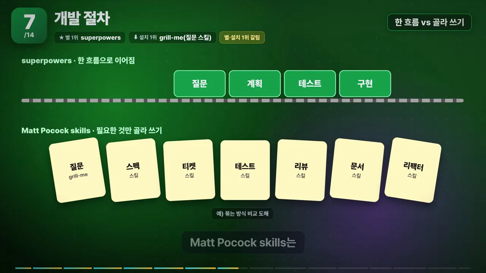
superpowers
무엇인가요 에이전트가 곧장 코드부터 짜지 않게 질문 → 계획 → 테스트 → 구현을 한 흐름으로 잇는 스킬 프레임워크예요.
써 보면
- 원하는 걸 질문으로 확인하고, 작게 쪼갠 계획을 세우고, 테스트부터 쓰게 만들어요. 별 30만 1천으로 개발 절차 분야 1위예요. (AI 코딩 도구 분야별 1위 14개, 대안과…)
- 플레이북의 plan.md 단계를 대신할 수 있어요. 이미 쓰고 있다면 그대로 써도 된다고 해요. (Claude Code로 돌리는 AI 네이티브…)
- GPT(Generative Pre-trained Transformer) 5.5 이후 모델에서는 토큰과 시간을 너무 많이 써서 뺐고, 빼도 차이가 없었다고 해요. Compound Engineering 안에 같은 과정이 이미 들어 있어서예요. (Buzz 도입 전후 비교)
- "작동할 거예요" 대신 "테스트 스위트를 실행했어요. 34개 중 34개 통과"처럼 실행한 명령과 결과를 증거로 붙여 답하게 돼요. Superpowers 전체가 아니라 이 폴더 하나만 가져와도 돼요. (쓰레기 코드 없애는 법)
- 설치해 두면 작업에 맞는 스킬이 알아서 붙어, 질문으로 요구사항을 구체화하고 테스트 먼저 짜는 절차를 체계적으로 따르게 돼요. (유명 AI 코딩 스킬 7개, 단계별로 비교하기)
주의 영상에서는 써 보고 뺀 하네스로 나와요.
소개한 영상 AI 코딩 도구 분야별 1위 14개, 대안과… 05:03 · Claude Code로 돌리는 AI 네이티브… 07:50 · Buzz 도입 전후 비교 14:14 · 쓰레기 코드 없애는 법 08:42 · 유명 AI 코딩 스킬 7개, 단계별로 비교하기 00:00
Agent Skills (Addy Osmani)
무엇인가요 계획을 대화 밖 파일로 옮겨 두는 코딩 에이전트용 스킬 모음이에요. `/spec`, `/plan`, `/build` 순서로 일해요.
써 보면
- 한두 시간 작업하다 Claude가 앞 내용을 잊는 문제를 막아요. 세션이 엉키면 새 세션에서 이어 가고, 스펙 단계에서 중복 예약·환불·시간대 같은 엣지 케이스를 먼저 물어요. (Claude와 함께 쓸 GitHub 레포 10개)
- 요구사항을
SPEC.md로 정리하고, 작은 조각을 구현·테스트·커밋한 뒤 넘어가게 해요. AI가 단계를 건너뛸 때 댈 핑계와 반박까지 적어 둬서 테스트를 건너뛰기 어렵게 만들어요. (맷 포콕 vs 애디 오스마니 vs 피스택) - 요구사항부터 구현·테스트까지 실무 원칙을 넓게 적용하고, TDD(Test-Driven Development) 외에 코드 리뷰·보안 점검·브라우저 테스트 스킬을 따로 쓸 수 있어요. (유명 AI 코딩 스킬 7개, 단계별로 비교하기)
- 폴더 구조를 적고 스펙·계획·빌드·테스트·리뷰를 슬래시 명령으로 나눠 순서를 고정한 예시예요. 발표자는 이 순서를 스펙 파일과 완료 조건으로 옮겼어요. (인테리어 렌더링 하네스 설계)
주의 발표자는 Superpowers보다 입문자가 따라가기 쉽다고 해요. 하네스 설계 참고 사례로 나와요.
소개한 영상 Claude와 함께 쓸 GitHub 레포 10개 05:20 · 맷 포콕 vs 애디 오스마니 vs 피스택 00:00 · 유명 AI 코딩 스킬 7개, 단계별로 비교하기 00:00 · 인테리어 렌더링 하네스 설계 05:00
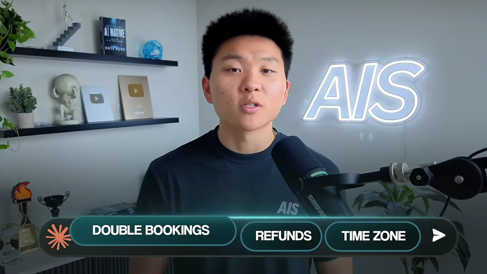
pstack
무엇인가요 Cursor 엔지니어 Lauren Tan이 에이전트가 실패하는 모습을 관찰해 쌓은 스킬 플러그인이에요. cursor/plugins 저장소의 pstack 폴더에 있어요.
써 보면
- 검증 스킬과 기능 지도를 만들어 주는 스킬, eval 플레이북이 들어 있어요. 발표자는 이런 스킬로 5개월 동안 PR(Pull Request) 3,000개 넘게 머지했다고 해요(발표자 주장). (에이전트를 믿고 맡기기까지)
- /arena는 여러 에이전트의 안 중 나은 안에 다른 안의 좋은 부분을 합치고, /poteto-mode는 재현 → 로그 → 수정 → 재확인 순으로 실패 0/4를 통과 4/4로 바꾸는 걸 보여 줘요. (맷 포콕 vs 애디 오스마니 vs 피스택)
- 목표와 완료 조건을 주면 맞는 플레이북을 골라 실행하고, /arena로 여러 에이전트의 설계안을 합치고, /interrogate로 Claude·Grok 같은 다른 모델이 독립 리뷰해요. (유명 AI 코딩 스킬 7개, 단계별로 비교하기)
create-verification-skill은 내 프로젝트에 맞는 검증 스킬을 만들고,maintain-verification-skill은 앱이 바뀌면 그 스킬을 최신으로 맞춰요. 매번 똑같이 하는 확인은 스크립트로 굳혀 스킬 안에 넣어서, 준비된 스크립트를 돌리는 게 AI에게 가장 쉬운 길이 되게 해요. (AI 코딩의 마지막 문제 (로렌 탄 × 맷 포콕))- 원칙 스킬도 들어 있어요.
principle-build-the-lever는 손으로 하지 말고 도구부터 만들기,principle-encode-lessons-in-structure는 같은 지시를 두 번째 쓰게 되면 린트·스크립트로 바꾸기,principle-fix-root-causes는 증상 말고 원인 고치기예요.poteto-mode의 Autopilot-full은 PR마다 검증 AI를 붙여 통과한 것만 반영해요. (AI 코딩의 마지막 문제 (로렌 탄 × 맷 포콕)) - 처음 해 볼 일로는
automate-me를 꼽아요. 지난 AI 대화에서 내가 끼어들어 바로잡은 순간을 찾아 나만의 스킬로 만들어 줘요. 계획은 Matt Pocock의grill-me로 다듬고 실행은 pstack에 맡겨도 된다고 해요. (AI 코딩의 마지막 문제 (로렌 탄 × 맷 포콕))
주의 Cursor용 플러그인이에요. 저장소에 라이선스 파일이 없어요. 발표자는 그대로 믿지 말고 포크해서 자기 기준을 스킬로 적으라고 해요. pstack은 독립 저장소가 아니라 cursor/plugins 안의 폴더예요. 저장소 전체 라이선스 표시가 없어요. 저장소 전체가 아니라 pstack 폴더예요. 라이선스는 표준 SPDX(Software Package Data Exchange)로 잡히지 않아요.
소개한 영상 에이전트를 믿고 맡기기까지 13:18 · 맷 포콕 vs 애디 오스마니 vs 피스택 00:00 · 유명 AI 코딩 스킬 7개, 단계별로 비교하기 00:00 · AI 코딩의 마지막 문제 (로렌 탄 × 맷 포콕) 01:24
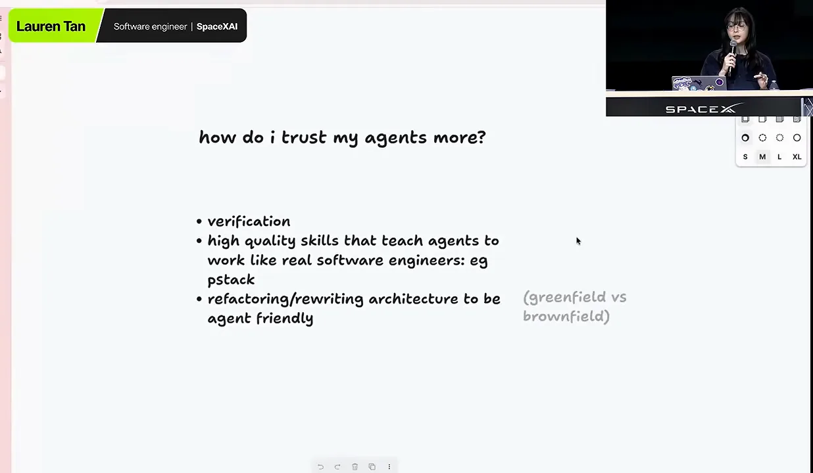

ECC (Everything Claude Code)
무엇인가요 Claude Code용 스킬·훅·명령 모음이에요. 그중 codebase-onboarding 스킬은 남의 프로젝트를 2분 만에 훑어볼 안내서를 만들어요.
써 보면
- 단서 파일만 훑어 '무엇을 하려면 어디를 보면 되는지' 표와
CLAUDE.md를 만들어, 다음부터 AI도 그 프로젝트 방식대로 코드를 짜요. 기존CLAUDE.md는 덮어쓰지 않고 보태요. (남의 코드 수천 줄, 순식간에 파악하는 스킬) - 딱 맞으면 설치(Adopt), 비슷하면 얇게 감싸기(Extend), 정말 없을 때만 직접 짜기(Build)로 정해서 직접 짜기가 마지막 선택이 돼요. 예시에서는 깨진 링크 검사를 textlint-rule-no-dead-link(9/10점) 설치로 끝내 직접 짠 코드가 0줄이었어요. (코딩하기 전에 먼저 찾게 하는 스킬, sea…)
- 시키지 않아도 계획→테스트→구현→리뷰→검증→기억→개선 순서로 일하게 해 줘요. (주식 분석 AI가 깃허브 2위? 지금 뜨는…)
주의 저장소 주소가 github.com/affaan-m/ECC로 바뀌었어요. 스킬 원문에는 영상에 없는 네 번째 선택지 Compose도 있어요.
소개한 영상 남의 코드 수천 줄, 순식간에 파악하는 스킬 00:00 · 코딩하기 전에 먼저 찾게 하는 스킬, sea… 00:00 · 주식 분석 AI가 깃허브 2위? 지금 뜨는… 04:26
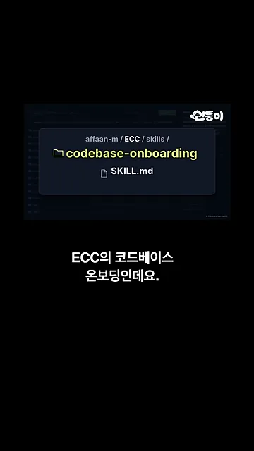
SKILL.md를 강조한 화면이에요. 남의 코드 수천 줄, 순식간에 파악하는 스킬 00:10에서 보기Anthropic 지식 노동 플러그인
무엇인가요 Anthropic이 공개한 Cowork·Claude용 플러그인 모음이에요. 영업, 고객지원, 법무, 재무 같은 직무별 플러그인이 들어 있어요.
써 보면
- 영업 플러그인을 고객 CRM(Customer Relationship Management)에 연결하면 통화 준비 시간이 20분에서 2분으로 줄고 후속 연락이 당일에 나간다고 해요(발표자 주장). (무료 깃허브 레포 8개로 만드는 서비스 사업)
- 접근성 검토 스킬이 Figma 화면 하나에서 22건(심각 3, 주요 13, 경미 6)을 WCAG(Web Content Accessibility Guidelines) 기준과 함께 찾았어요. 발표자는 같은 플러그인의 디자인 시스템 관리 스킬은 믿지 않는다고 해요. (AI로 디자인하기)
- 영업 플러그인은 고객 관리 도구, 메일, 통화 기록을 모아 미팅 준비 자료를 만들고, 영상 시점부터 문장마다 출처 링크를 붙여요. 소상공인 플러그인은 밀린 대금 독촉부터 현금 흐름 예측까지 맡지만, 메일 발송과 결제는 내가 허락해야 진행돼요. 외부 회사 것까지 120개가 넘고 코드 없이 문서로만 되어 있어 고쳐 쓰기 쉬워요. (이번 주 깃허브 트렌딩 결산 TOP 10)
소개한 영상 무료 깃허브 레포 8개로 만드는 서비스 사업 06:08 · AI로 디자인하기 01:10:14 · 이번 주 깃허브 트렌딩 결산 TOP 10 05:35
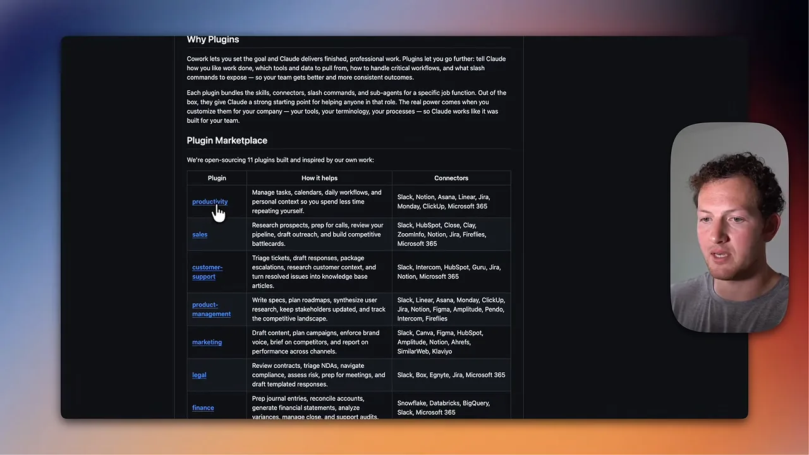

Feature Dev (claude-code 플러그인)
무엇인가요 Anthropic 공식 Claude Code 저장소에 든 개발 플러그인이에요. /feature-dev로 기존 코드 탐색, 설계안 비교, 구현, 리뷰를 한 흐름으로 해요.
써 보면
- 기존 코드 구조를 먼저 살피고 여러 아키텍처 안을 장단점과 함께 내놓으며, 리뷰 에이전트 셋이 단순성·버그·규칙 준수를 나눠 검토해요. (유명 AI 코딩 스킬 7개, 단계별로 비교하기)
- 규칙을 어기면 실패하는 검사를 따로 두고 그 검사를 약하게 만들지 말라고 적은, '규칙과 검사를 짝으로' 두는 방식을 발표자가 그대로 가져왔어요. (인테리어 렌더링 하네스 설계)
주의 저장소 전체가 아니라 plugins/feature-dev 폴더예요. 저장소 라이선스는 표준 SPDX로 잡히지 않아요. 도구로 설치한 게 아니라 하네스 설계 참고 사례로 나와요.
소개한 영상 유명 AI 코딩 스킬 7개, 단계별로 비교하기 00:00 · 인테리어 렌더링 하네스 설계 04:16
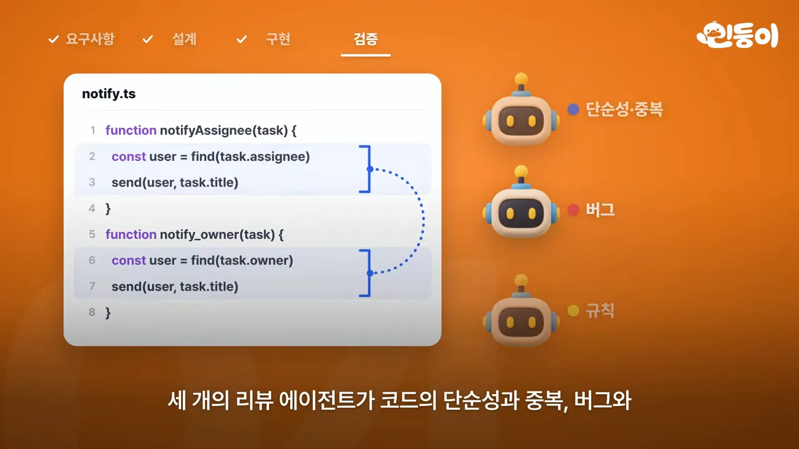
humanizer
무엇인가요 AI가 쓴 글에서 티 나는 표현을 찾아 사람 글처럼 고쳐 주는 스킬이에요.
써 보면
- super-build의 검사 단계와 super-review에서 돌아서, 에이전트가 어려운 말을 늘어놓은 보고를 걸러 내요. (스스로 개선하는 소프트웨어 공장, super…)
- 'X가 아니라 Y' 문형, 뜸 들이는 도입부, 셋씩 묶는 버릇, 과한 홍보 단어를 덜어 내요. 웹사이트 문구나 콜드 메일을 붙여 넣고 humanize 하라고 하면 돼요. (Claude와 함께 쓸 GitHub 레포 10개)
주의 영상은 humanizer 저장소를 밝히지 않아요. 같은 이름의 대표 저장소(blader/humanizer)로 연결했어요.
소개한 영상 스스로 개선하는 소프트웨어 공장, super… 04:03 · Claude와 함께 쓸 GitHub 레포 10개 04:16
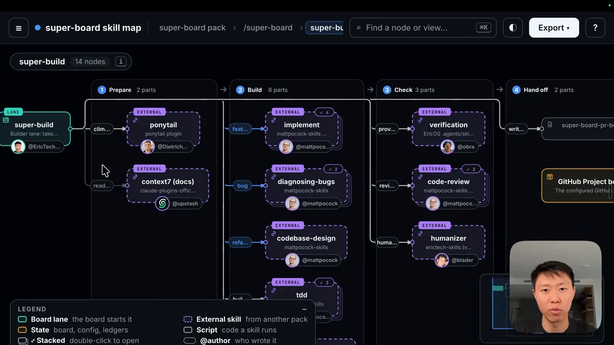
Anthropic 공식 플러그인 목록
무엇인가요 Claude Code에서 /plugin을 열면 보이는 Anthropic 관리 플러그인 목록이에요. code-review, ralph-loop, security-guidance 같은 플러그인이 들어 있어요.
써 보면
- 설치 전에 명령·훅·매 턴 토큰을 미리 봐요. code-review는 에이전트 다섯이 보고 확신 80점 넘는 문제만 남기고, security-guidance는 고칠 때·커밋할 때 위험 패턴을 짚고(설치 24만), ralph-loop는 멈출 때마다 같은 지시를 다시 넣어 반복시켜요. (AI 코딩 도구 분야별 1위 14개, 대안과…)
- 살아남은 발견만 쉬운 영어 보고서로 받고, 패치까지 쓰게 할 수 있어요. 발표자는 모든 프로젝트에 넣으라고 해요. (Claude와 함께 쓸 GitHub 레포 10개)
주의 ralph-loop는 반복 한도 기본값이 무한이라 --max-iterations를 꼭 정하라고 해요. 공식 플러그인 디렉터리 저장소의 plugins/claude-security 폴더예요. 저장소는 Apache-2.0이지만 이 플러그인 자체는 Anthropic 독점 라이선스예요.
소개한 영상 AI 코딩 도구 분야별 1위 14개, 대안과… 02:12 · Claude와 함께 쓸 GitHub 레포 10개 08:02
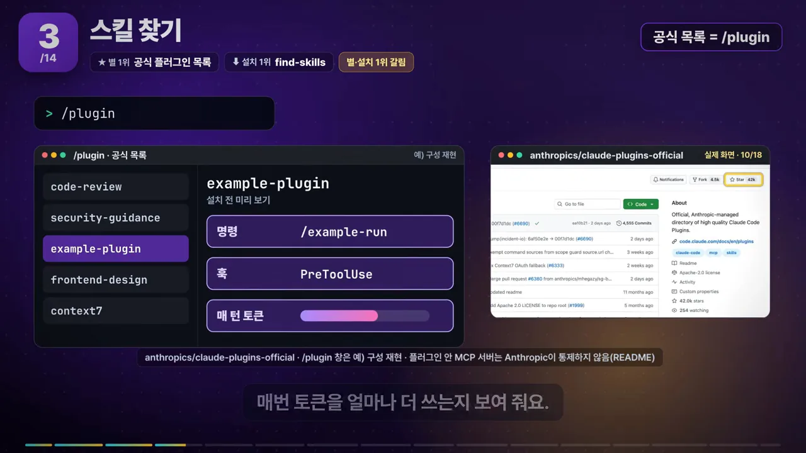
Compound Engineering
무엇인가요 Plan → Work → Review → Compound를 반복하며 푼 문제를 기록해 다음 작업에 쓰게 하는 Every의 공식 플러그인이에요. Claude Code·Codex·Cursor 등에서 써요.
써 보면
- 빼고 나니 모델이 테스트를 먼저 짜지 않아서 TDD가 빠졌어요. 다시 넣기엔 너무 무거워서 TDD와 "docs/solutions/ 먼저 읽기" 같은 원칙만
AGENTS.md로 옮겼어요. (Buzz 도입 전후 비교) - 개발하며 얻은 경험을 다음 작업에 쌓아 가고 싶을 때 쓰라고 소개돼요. (유명 AI 코딩 스킬 7개, 단계별로 비교하기)
주의 영상에서는 무거워서 뺀 하네스로 나와요.
소개한 영상 Buzz 도입 전후 비교 14:14 · 유명 AI 코딩 스킬 7개, 단계별로 비교하기 08:36
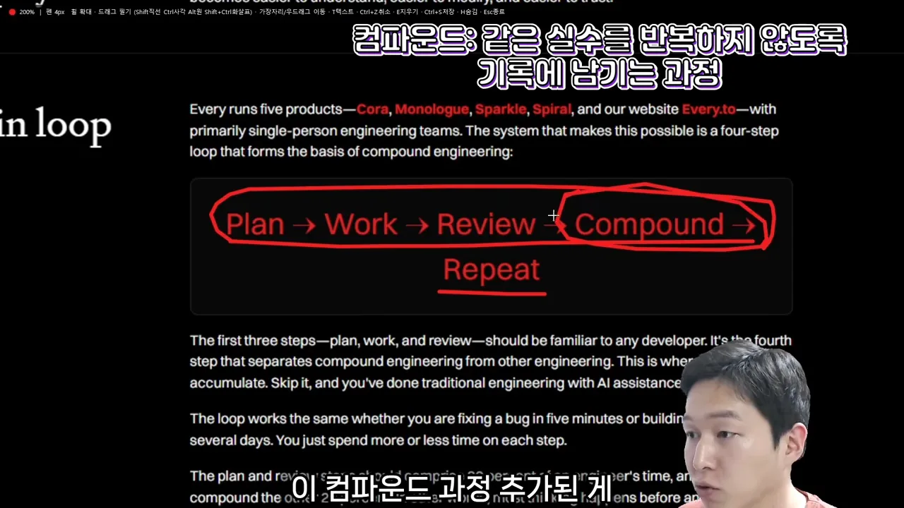
Supabase Postgres 규칙 스킬
무엇인가요 Supabase의 에이전트 스킬 모음이에요. 그중 Postgres 규칙 스킬은 연결 도구가 아니라 쿼리 모범 사례 모음이에요.
써 보면
- 인덱스가 빠져 테이블을 통째로 훑는(Seq Scan) 실수 같은 걸 쿼리를 짤 때 미리 잡아요. 설치 45만으로 DB(Database) 분야 설치 1위예요. (AI 코딩 도구 분야별 1위 14개, 대안과…)
- 사용자가 자기 데이터만 보게 하는 규칙 같은 Supabase의 보안 규칙을 Claude가 알고 백엔드를 만들어요. (Claude와 함께 쓸 GitHub 레포 10개)
주의 영상은 저장소 이름을 말하지 않아요. Supabase 공식 저장소로 연결했어요. 커넥터는 읽기 전용으로 두고, 출시 전 테스트 사용자로 다른 사람 데이터가 안 보이는지 확인하라고 해요.
소개한 영상 AI 코딩 도구 분야별 1위 14개, 대안과… 06:15 · Claude와 함께 쓸 GitHub 레포 10개 06:57
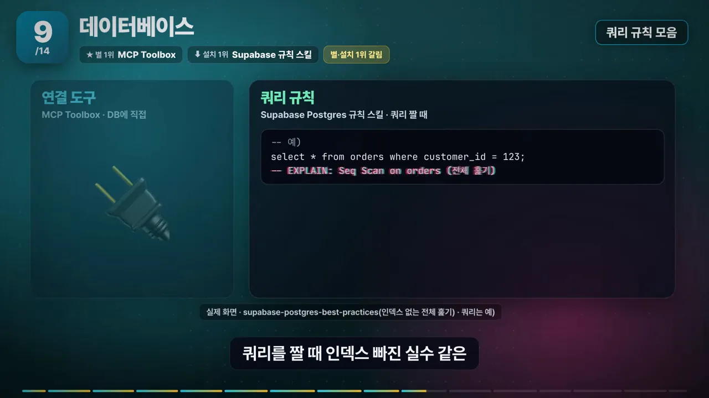
EXPLAIN 결과 Seq Scan이 빨갛게 표시된 화면이에요. AI 코딩 도구 분야별 1위 14개, 대안과… 06:15에서 보기gstack
무엇인가요 YC(Y Combinator) 대표 개리 탄의 Claude Code 설정 묶음이에요. CEO(Chief Executive Officer)·엔지니어·디자이너·QA(Quality Assurance) 역할의 슬래시 명령으로 일해요.
써 보면 /office-hours로 '만들 필요가 있나'부터 묻고, plan-ceo/eng/design-review로 계획을 여러 관점에서 검토하고, /review와 /qa로 코드와 실제 동작을 나눠 확인해요.
소개한 영상 유명 AI 코딩 스킬 7개, 단계별로 비교하기 00:00
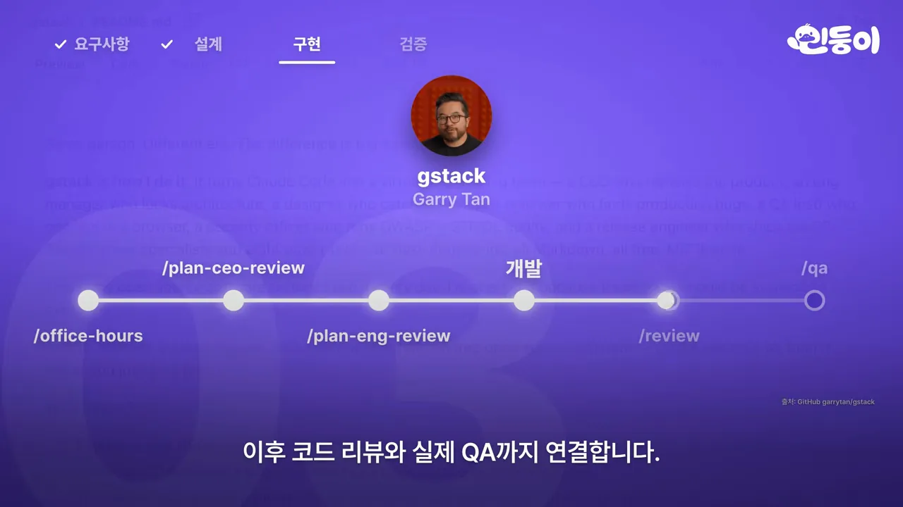
claude-code-best-practice
무엇인가요 Claude Code 사용 모범 사례를 모은 저장소예요.
써 보면 settings.json의 ask 목록에 rm, chmod, npm 같은 명령을 넣어 위험한 명령은 실행 전에 꼭 묻게 하는 예시로 쓰여요. 발표자는 이 일엔 필요 없어 뺐어요.
주의 노트에는 저장소 소유자가 없어 이름으로 찾아 연결했어요. 하네스 설계 참고 사례로 나와요.
소개한 영상 인테리어 렌더링 하네스 설계 04:30

CLI-Anything
무엇인가요 블렌더·GIMP(GNU Image Manipulation Program)처럼 마우스로 쓰던 프로그램에 AI가 쓸 명령어 입구(CLI(Command Line Interface))를 만들어 주는 오픈소스예요. 공식 허브에 103개 도구가 있어요.
써 보면 Claude Code 같은 AI가 화면을 찍어 클릭하는 대신 명령어로 프로그램을 직접 써요. 공식 시연에선 블렌더로 드론 3D 모델을 단계별로 쌓아 올려요.
주의 실제 프로그램을 불러 쓰니 블렌더 등은 컴퓨터에 깔려 있어야 해요.
소개한 영상 클로드 코드가 블렌더를 직접 쓰게 하는 도구… 00:00
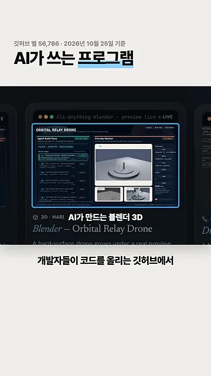
find-skills (Vercel skills)
무엇인가요 Vercel의 스킬 도구 저장소이고, find-skills는 '엑셀 정리하는 스킬 있어?'처럼 물으면 스킬 장터를 검색해 주는 스킬이에요.
써 보면 설치 1,000 미만이나 별 100 미만을 걸러 내고 설치 명령까지 골라 줘요. 설치 391만으로 전체에서 가장 많아요.
소개한 영상 AI 코딩 도구 분야별 1위 14개, 대안과… 01:54

GitHub MCP 서버
무엇인가요 GitHub 공식 MCP 서버예요. 에이전트가 GitHub를 직접 읽고 이슈·PR·Actions를 다뤄요.
써 보면 '실패한 Actions 원인 찾아서 이슈로 정리해 줘' 같은 일을 에이전트가 해요. 도구가 90개가 넘어 필요한 묶음만 켜거나 읽기 전용으로 쓸 수 있어요.
소개한 영상 AI 코딩 도구 분야별 1위 14개, 대안과… 05:21

Google Workspace CLI
무엇인가요 Claude가 드라이브, Gmail, 캘린더, 문서, 시트, 슬라이드를 직접 다루게 하는 명령줄 도구예요. 40개 넘는 에이전트 스킬이 함께 들어 있어요.
써 보면 Claude Code든 Codex든 어떤 에이전트에서도 구글 업무를 처리해요. 주간 보고서, 청구서, 후속 메일 자동화로 이어 가기 좋다고 해요.
주의 로그인용 Google Cloud 프로젝트를 만들어야 해요.
소개한 영상 Claude와 함께 쓸 GitHub 레포 10개 01:28
Claude SEO
무엇인가요 주소 하나로 내 사이트가 검색에 잘 걸리는지 점검하는 Claude Code용 무료 플러그인이에요. 최대 17개 에이전트가 사이트를 나눠 훑으며 속도·구조·콘텐츠 신뢰도를 보고, ChatGPT나 Perplexity 같은 AI 검색에 인용되기 쉬운지도 따져요.
써 보면 10~15분이면 무엇부터 고칠지 순서대로 정리한 보고서가 나오고, API 키도 따로 필요 없어요. 만든 사람은 자기 사이트를 첫날부터 이 도구로 점검했고, 12주 만에 구글 검색 클릭 1만 800번을 받았다고 밝혔어요(만든 사람 주장).
소개한 영상 이번 주 깃허브 트렌딩 결산 TOP 10 04:56

Claude Video (/watch)
무엇인가요 Claude에게 영상을 '보게' 하는 스킬이에요. /watch가 영상을 내려받고 프레임을 뽑고 말을 글로 옮겨 Claude에게 넘겨요.
써 보면 링크만 주면 제목·설명밖에 모르던 Claude가 장면과 자막까지 분석해요. 발표자는 남의 영상 인트로와 전개를 벤치마킹할 때 자주 써요.
소개한 영상 콘텐츠 크리에이터에게 꼭 필요한 클로드코드 스킬 00:12

MCP Toolbox for Databases
무엇인가요 Google이 만든, 에이전트를 회사 데이터베이스에 연결해 직접 질의하게 하는 MCP 서버예요.
써 보면 '지난주 매출 합계 뽑아 줘'라고 하면 DB에 직접 물어보고 답을 가져와요. 별 1만 7천으로 DB 분야 1위예요.
주의 저장소 이름이 googleapis/mcp-toolbox로 바뀌었어요. Google은 읽기 전용 계정으로 연결하라고 권해요.
소개한 영상 AI 코딩 도구 분야별 1위 14개, 대안과… 05:57
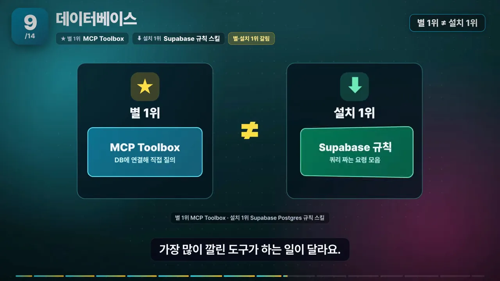
AWS MCP 서버 모음
무엇인가요 서비스마다 따로 된 'AWS MCP' 서버 60여 개를 내 컴퓨터에서 돌리는 오픈소스 모음이에요.
써 보면 '이 프로젝트 배포하면 한 달에 얼마야?'를 실제 가격표로 계산하는 식으로 일해요. 별 9,800으로 클라우드 분야 1위예요.
주의 Agent Toolkit과 같이 켜면 도구가 겹치니 하나만 쓰라고 해요.
소개한 영상 AI 코딩 도구 분야별 1위 14개, 대안과… 06:52
mcp-atlassian
무엇인가요 Confluence와 Jira용 비공식 MCP 서버예요.
써 보면 회사 자체 서버(데이터센터)에 붙여야 할 때 공식 원격 서버 대신 쓰는 대안이에요.
주의 비공식 프로젝트예요. 노트에는 링크가 없어 저장소 이름으로 찾았어요.
소개한 영상 AI 코딩 도구 분야별 1위 14개, 대안과… 05:37
DBHub
무엇인가요 execute_sql과 search_objects 도구 두 개로 시작하는 가벼운 데이터베이스 MCP 서버예요.
써 보면 연결만 가볍게 하고 싶을 때 MCP Toolbox 대신 써요. Claude Code 공식 문서에도 MCP 연결 예시로 나와요.
소개한 영상 AI 코딩 도구 분야별 1위 14개, 대안과… 06:27

Agent Toolkit for AWS
무엇인가요 아마존이 지난 5월 낸 후속 도구예요. 아마존이 운영하는 원격 서버 하나에 권한 통제와 사용 기록을 더했어요.
써 보면 내 컴퓨터에 서버 수십 개를 띄우지 않고 원격 서버 하나로 AWS(Amazon Web Services) 작업을 해요.
주의 노트에는 링크가 없어 저장소 이름으로 찾았어요. 옛 서버 모음과 같이 켜지 말라고 해요.
소개한 영상 AI 코딩 도구 분야별 1위 14개, 대안과… 06:52
Microsoft Azure 스킬
무엇인가요 Microsoft가 낸 Azure용 에이전트 스킬과 MCP 설정 모음이에요.
써 보면 배포 전에 계획 파일부터 쓰고 승인을 받게 해요(계획 → 승인 → 배포). 설치 56만으로 클라우드 분야 설치 1위예요.
주의 노트에는 링크가 없어 저장소 이름으로 찾았어요. 영상이 말한 설치 수는 이 저장소가 아니라 설치 채널 기준이에요.
소개한 영상 AI 코딩 도구 분야별 1위 14개, 대안과… 06:34
Atlassian 공식 MCP 서버
무엇인가요 Jira와 Confluence에 연결하는 Atlassian 공식 원격 MCP 서버예요.
써 보면 Jira·Confluence를 쓰는 팀이 에이전트에 붙여 써요.
주의 쓸 때마다 Rovo 사용량 크레딧이 들어요.
소개한 영상 AI 코딩 도구 분야별 1위 14개, 대안과… 05:39
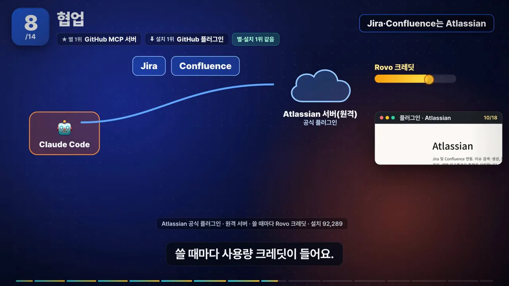
openclaw-kakao (kmsg 스킬)
무엇인가요 kmsg CLI로 카카오톡 메시지를 읽고 보내게 해 주는 에이전트 스킬 저장소예요.
써 보면 에이전트가 kmsg를 바로 쓸 수 있게 해, 카톡 전송을 스킬로 붙일 수 있어요.
주의 노트에는 소유자가 없어 검색으로 찾았어요. 화면 README 제목은 'for Claude Code', 현재 설명은 'for openclaw'예요. 라이선스가 명시돼 있지 않아요.
소개한 영상 헤르메스 에이전트 5개로 뉴스 큐레이션부터… 17:12
prompts.chat (옛 awesome-chatgpt-prompts)
무엇인가요 ChatGPT가 공개되고 닷새 뒤인 2022년 12월 5일에 f/awesome-chatgpt-prompts로 시작한 오픈소스 프롬프트 모음이에요. 텍스트·이미지·비디오 프롬프트와 SKILL.md가 든 클로드 스킬까지 있고, MCP 서버로 코딩 에이전트에 붙일 수 있어요.
써 보면 터미널에 claude mcp add --transport http prompts.chat https://prompts.chat/api/mcp 한 줄을 넣으면 연결돼요. 코덱스는 같은 주소를 ~/.codex/config.toml에 적어요. 검색·가져오기는 가입도 키도 없이 돼요. "경쟁사 분석 프롬프트 찾아 줘"라고 하면 search_prompts로 후보를 추리고, ${industry} 같은 빈칸 값을 물어 채운 뒤 보고서까지 써 줘요. 스킬은 .claude/skills/ 아래에 폴더째 넣어 줘요.
주의 한국어 검색어는 결과가 거의 안 나와요. 프롬프트를 고쳐 주는 improve_prompt는 API 키를 받아야 열려요. 마음대로 써도 되는 CC0(Creative Commons Zero)는 프롬프트 쪽이고, 사이트 소스 코드는 MIT예요.
소개한 영상 prompts.chat MCP 연결법 00:00

토큰 절약·맥락 관리
에이전트가 읽는 양을 줄이거나, 필요한 맥락만 골라 넣어 주는 도구예요. 같은 일을 더 적은 토큰으로 하게 만들어서 비용과 사용량 한도를 아껴요.
이 묶음에는 레포 18개가 있어요. 여러 영상이 소개한 레포를 앞에, 그다음은 별이 많은 순서로 놓았어요.
caveman
무엇인가요 AI 답변에서 인사말과 되풀이를 빼고 코드·숫자·오류 문구는 남기는 토큰 절약 스킬이에요.
써 보면
- 답변 쪽 토큰을 줄여요. 별 11만 3천, 설치 58만으로 둘 다 1위예요. (AI 코딩 도구 분야별 1위 14개, 대안과…)
- JetBrains 측정에서 광고한 65%가 아니라 출력 토큰 8.5%쯤만 줄었어요. 그것도 스킬을 강제로 켠 상한선이에요. (Claude와 함께 쓸 GitHub 레포 10개)
- 공식 예시에서 같은 해결책 설명이 63토큰에서 20토큰으로, /ultracave 모드에선 14토큰까지 줄었어요. caveman compress로 orders.json이 16,098토큰에서 1,091토큰이 된 화면도 나와요. (꼭 알아야 할 토큰 절약 도구 깃허브 TOP 7)
- 제로초는
AGENTS.md에서CAVEMAN.md·PONYTAIL.md·RTK.md세 개를 불러와 쓰는데, 이 셋을 쓰면 비싼 모델(Astra)을 써도 토큰이 확실히 덜 든다며 강하게 추천해요(발표자 주장). 품질이 떨어지면 다시 빼라고 해요. (Buzz 도입 전후 비교) - 모델이 핵심 단어만 주고받게 해서 토큰과 비용이 줄어든다고 해요. 영상은 '진공 압축팩'에 비유해요(README는 약 65% 절감을 주장해요). (내 컴퓨터에서 돌아가는 AI 에이전트 오픈소…)
주의 그냥 '간결하게 답해'라고 한 것보다 3%만 더 줄어든다고 제작자가 README에 적어 놨어요.
소개한 영상 AI 코딩 도구 분야별 1위 14개, 대안과… 04:26 · Claude와 함께 쓸 GitHub 레포 10개 09:12 · 꼭 알아야 할 토큰 절약 도구 깃허브 TOP 7 01:47 · Buzz 도입 전후 비교 21:12 · 내 컴퓨터에서 돌아가는 AI 에이전트 오픈소… 01:06

rtk
무엇인가요 테스트나 git의 긴 명령 결과를 에이전트가 읽기 전에 걸러 주는 CLI 프록시예요.
써 보면
- 답이 아니라 명령 결과 쪽 토큰을 줄여요. (AI 코딩 도구 분야별 1위 14개, 대안과…)
- JetBrains 측정에서 거의 아끼지 못했어요. 낮은 추론 강도에서는 오히려 7.6% 더 비쌌어요. (Claude와 함께 쓸 GitHub 레포 10개)
- 테스트 100개 중 2개 실패라면 "98 passed" 한 줄과 실패 2개만 남겨요. 공식 설명으로는 출력이 최대 90%까지 줄어요. (꼭 알아야 할 토큰 절약 도구 깃허브 TOP 7)
- 제로초는
AGENTS.md에서CAVEMAN.md·PONYTAIL.md·RTK.md세 개를 불러와 쓰는데, 이 셋을 쓰면 비싼 모델(Astra)을 써도 토큰이 확실히 덜 든다며 강하게 추천해요(발표자 주장). 품질이 떨어지면 다시 빼라고 해요. (Buzz 도입 전후 비교) - 명령 출력 토큰이 60~90% 줄어요. 저장소의 30분 작업 기준 표에선 테스트 90%, 전체 118,000 토큰이 약 24,000 토큰으로 80% 줄었어요. (클로드 코드 토큰 60~90% 줄이는 무료…)
주의 광고는 60~90% 절감이에요. 절감률은 터미널 출력 기준이라 실제 요금은 덜 줄어요. Claude Code의 파일 읽기는 rtk를 거치지 않아요. 이름이 같은 다른 도구가 있으니 rtk gain으로 확인해요.
소개한 영상 AI 코딩 도구 분야별 1위 14개, 대안과… 04:26 · Claude와 함께 쓸 GitHub 레포 10개 09:16 · 꼭 알아야 할 토큰 절약 도구 깃허브 TOP 7 02:54 · Buzz 도입 전후 비교 21:12 · 클로드 코드 토큰 60~90% 줄이는 무료… 01:36
ponytail
무엇인가요 코드를 쓰기 전에 "정말 써야 하나"를 7단계 사다리로 묻는 스킬이에요. 필요성 → 기존 코드 → 표준 라이브러리 → 플랫폼 기능 → 이미 깔린 의존성 → 한 줄 → 최소 코드 순서예요.
써 보면
- super-build가 구현 전에 거치는 단계예요. 발표자는 AI가 중복 코드를 끝없이 쓰는 걸 막고, 코드가 줄면 토큰과 시간도 준다고 말해요. (스스로 개선하는 소프트웨어 공장, super…)
- JetBrains 측정에서 세 레포 중 유일하게 돈을 아꼈어요. 작업당 약 10%로, 광고한 20%의 절반이에요. (Claude와 함께 쓸 GitHub 레포 10개)
- 제작자 예시에서 직접 만든 날짜 선택창 335줄이 <input type="date"> 10줄로 줄었어요. Claude Code 작업 39개 비교에서 코드 53%, 토큰 45%가 줄었다고 해요(제작자 수치). (꼭 알아야 할 토큰 절약 도구 깃허브 TOP 7)
- 제로초는
AGENTS.md에서CAVEMAN.md·PONYTAIL.md·RTK.md세 개를 불러와 쓰는데, 이 셋을 쓰면 비싼 모델(Astra)을 써도 토큰이 확실히 덜 든다며 강하게 추천해요(발표자 주장). 품질이 떨어지면 다시 빼라고 해요. (Buzz 도입 전후 비교)
주의 발표자는 윈도우에서 메시지마다 몇 초씩 멈추는 버그가 열려 있다고 해요.
소개한 영상 스스로 개선하는 소프트웨어 공장, super… 05:31 · Claude와 함께 쓸 GitHub 레포 10개 09:22 · 꼭 알아야 할 토큰 절약 도구 깃허브 TOP 7 00:28 · Buzz 도입 전후 비교 21:12

SKILL.md의 사다리 일곱 단계 화면이에요. 스스로 개선하는 소프트웨어 공장, super… 05:31에서 보기claude-mem
무엇인가요 작업하면서 읽고 고친 내용을 자동으로 기록·요약해 두는 Claude Code 기억 플러그인이에요.
써 보면
- 새 세션을 열면 '어제 고친 버그' 같은 기록이 타임라인으로 들어오고, 여러 세션을 가로질러 찾아볼 수 있어요. 별 10만 1천으로 1위예요. (AI 코딩 도구 분야별 1위 14개, 대안과…)
- 발표자가 5월에 추천했지만 지금은 미루라고 해요. 기본 설정으로 사용 데이터를 밖으로 보내기 때문이에요. (Claude와 함께 쓸 GitHub 레포 10개)
- 영상은 이 저장소의 settings.json이 node_modules, package-lock.json 읽기를 막아(deny) 쓸모없는 내용이 컨텍스트를 채우지 않게 한 점을 참고해요. (인테리어 렌더링 하네스 설계)
주의 요약에도 AI 모델을 써요. 설치할 때 어떤 모델과 요금으로 요약하는지 확인하라고 해요. 발표자가 당분간 쓰지 말라고 한 저장소예요. 하네스 설계 참고 사례로 나와요.
소개한 영상 AI 코딩 도구 분야별 1위 14개, 대안과… 01:30 · Claude와 함께 쓸 GitHub 레포 10개 09:45 · 인테리어 렌더링 하네스 설계 04:49
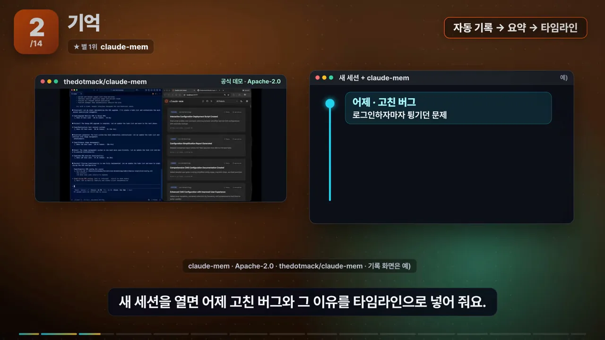
Context7
무엇인가요 질문 끝에 use context7을 붙이면 그 라이브러리 지금 버전의 공식 문서에서 필요한 부분만 찾아 답 옆에 붙여 주는 도구예요.
써 보면
- AI가 옛 문법을 쓰거나 없는 함수를 지어내는 일이 줄어요. 별 6만 3천, 설치 42만으로 둘 다 분야 1위예요. 무료는 한 달 1,000번까지예요. (AI 코딩 도구 분야별 1위 14개, 대안과…)
- 강의는 설정과 컨텍스트를 덜 쓰는 CLI + 스킬 방식을 골라요. 외부 자원을 붙일 때 MCP보다 CLI 스킬이 인기를 얻는 예로 들어요. (코딩 에이전트와 함께하는 스펙 주도 개발 (…)
- 빌드 에이전트가 Vercel, React, NestJS 같은 의존성의 실제 문서를 보고 쓰는 법을 안 다음에 코드를 써요. (스스로 개선하는 소프트웨어 공장, super…)
소개한 영상 AI 코딩 도구 분야별 1위 14개, 대안과… 00:42 · 코딩 에이전트와 함께하는 스펙 주도 개발 (… 53:25 · 스스로 개선하는 소프트웨어 공장, super… 04:03

Serena
무엇인가요 내 컴퓨터의 내 코드를 함수·클래스 단위로 찾아 고치게 해 주는 MCP 도구예요.
써 보면
- Context7이 남의 라이브러리 문서를 찾는다면 Serena는 내 코드를 찾아요. 같은 분야로 묶이지만 하는 일이 달라요. (AI 코딩 도구 분야별 1위 14개, 대안과…)
- "로그인" 글자 검색 대신 진짜 login() 함수와 그걸 부르는 파일만 짚어서, 엉뚱한 파일을 열며 쓰던 토큰이 줄어요. 파일이 많은 큰 프로젝트일수록 효과가 크다고 해요. (꼭 알아야 할 토큰 절약 도구 깃허브 TOP 7)
- rtk가 못 막는 파일 읽기 토큰을 줄여요. 터미널 출력은 rtk, 코드 읽기는 Serena가 나눠 맡아 새는 구멍 두 개를 막는다고 해요. (클로드 코드 토큰 60~90% 줄이는 무료…)
주의 라이선스가 표준 형식으로 잡히지 않아요(NOASSERTION). Serena 앱 본체는 GPL-3.0-or-later예요(SolidLSP만 MIT). 라이선스가 표준 SPDX로 잡히지 않아요(README 기준 MIT로 알려져 있으니 LICENSE를 확인해요).
소개한 영상 AI 코딩 도구 분야별 1위 14개, 대안과… 00:54 · 꼭 알아야 할 토큰 절약 도구 깃허브 TOP 7 06:31 · 클로드 코드 토큰 60~90% 줄이는 무료… 05:52
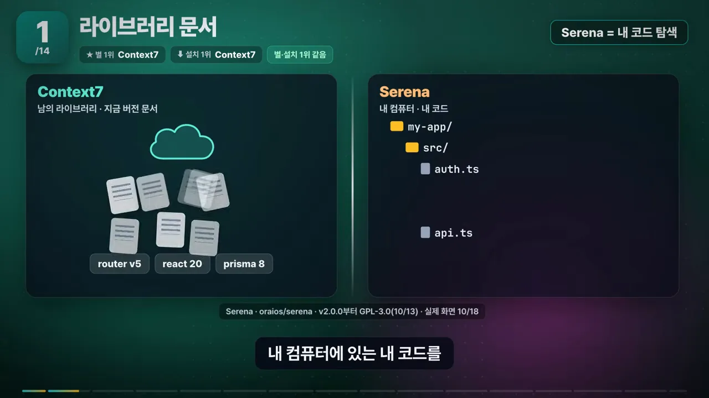
graphify
무엇인가요 내 코드 전체를 파일·함수 호출 관계까지 이은 '지도(지식 그래프)'로 만들어 두는 오픈소스 도구예요. /graphify 스킬로 Claude Code 등에 붙어요.
써 보면
- Claude가 새 대화마다 파일을 다시 읽는 대신 지도에 먼저 묻고 필요한 곳만 읽어 토큰이 덜 들어요. 49배·499배 절감은 써 본 사람들의 주장이에요. (클로드 코드 토큰을 줄이는 무료 도구 gra…)
- 코드뿐 아니라 문서·PDF(Portable Document Format)·이미지·영상까지 프로젝트 전체를 연결 지도 하나로 엮어요. 코드 지도는 AI 모델 없이 내 컴퓨터에서 만들어 비용이 들지 않고, Claude Code·Codex·Cursor 등 20개 넘는 도구에서 써요. 만든 쪽이 100만 줄짜리 프로젝트(ERPNext)에 질문 여섯 개를 던졌더니 핵심 사실을 찾아내는 비율이 71%에서 82%로 올랐어요. (이번 주 깃허브 트렌딩 결산 TOP 10)
주의 PyPI 패키지 이름은 y가 두 개인 graphifyy예요. 'LLM 없이'는 코드에만 해당하고 문서·PDF·이미지는 모델을 거쳐요.
소개한 영상 클로드 코드 토큰을 줄이는 무료 도구 gra… 00:00 · 이번 주 깃허브 트렌딩 결산 TOP 10 02:47
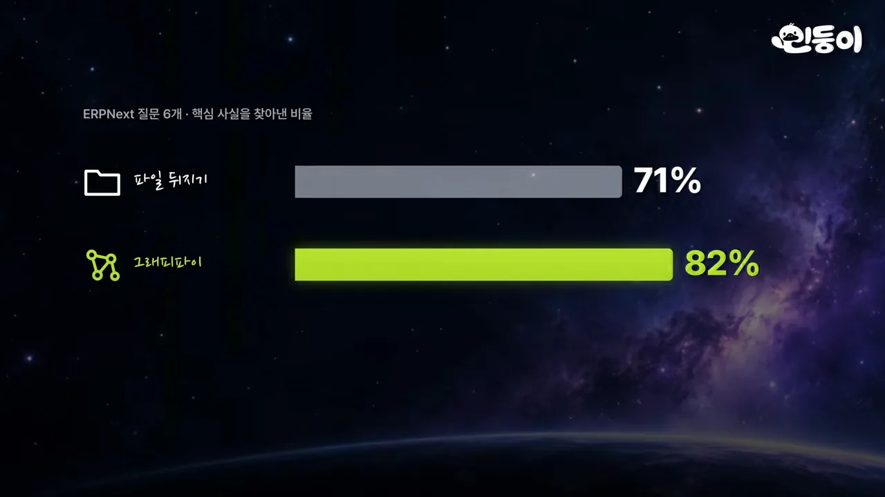
headroom
무엇인가요 내 컴퓨터에 프록시를 두고 API로 나가는 요청 전체를 압축하는 도구예요. 원본은 내 컴퓨터에 남겨 두고 필요하면 다시 꺼내요.
써 보면
- 에이전트가 모델에 보내는 요청 전체의 토큰을 줄여요. (AI 코딩 도구 분야별 1위 14개, 대안과…)
- 로그 예시에서 10,144토큰이 1,260토큰이 됐는데 꼭 필요한 'FATAL' 줄은 그대로 남았어요. headroom wrap claude 한 줄로 Claude Code에 붙어요. (꼭 알아야 할 토큰 절약 도구 깃허브 TOP 7)
주의 사용 기록 전송이 기본으로 켜져 있어요. 노트에는 링크가 없어 저장소 이름으로 찾았고, chopratejas/headroom이 headroomlabs-ai/headroom으로 옮겨진 걸 확인했어요.
소개한 영상 AI 코딩 도구 분야별 1위 14개, 대안과… 04:26 · 꼭 알아야 할 토큰 절약 도구 깃허브 TOP 7 04:15
Context Mode
무엇인가요 도구 출력을 샌드박스에 가둬 컨텍스트 창을 아끼고 세션 기억을 남기는 도구예요.
써 보면
- 발표자가 5월에 추천했지만 지금은 미루라고 해요. 사용량을 크게 태울 수 있는 버그가 열려 있대요. (Claude와 함께 쓸 GitHub 레포 10개)
- 공개 예시에서 파일 47개를 읽느라 쌓이던 700KB가 실행 1번으로 3.6KB가 됐어요(영상은 "700k→3.6k"라고 읽었지만 단위는 KB예요). (꼭 알아야 할 토큰 절약 도구 깃허브 TOP 7)
주의 발표자가 당분간 쓰지 말라고 한 저장소예요. 영상은 저장소 이름을 말하지 않아 GitHub 검색으로 찾았어요. 라이선스는 Elastic License 2.0이라 관리형 서비스로 제공하는 데 제한이 있어요. Elastic License 2.0이라 이걸로 호스팅 서비스를 만들어 파는 건 제한돼요.
소개한 영상 Claude와 함께 쓸 GitHub 레포 10개 09:45 · 꼭 알아야 할 토큰 절약 도구 깃허브 TOP 7 05:27
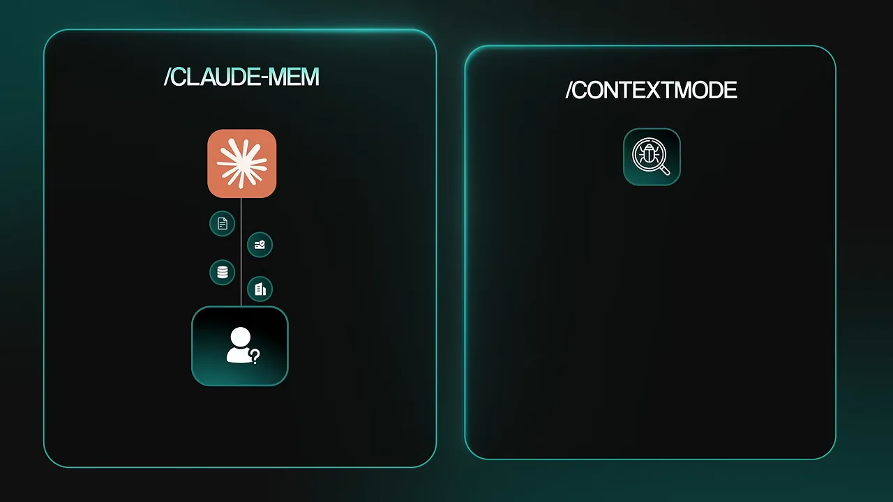
Codebase Memory MCP
무엇인가요 코드 전체의 호출 관계를 그래프로 만들어 로컬 SQLite에 저장하는 MCP 서버예요.
써 보면 'Index this project' 한마디 뒤로는 파일을 하나씩 읽는 대신 그래프에서 찾아 읽기 토큰이 줄고, 함수 변경의 영향 경로와 안 쓰는 함수 후보도 찾아 줘요.
소개한 영상 클로드 코드 고수들이 먼저 설치하는 깃허브… 00:52
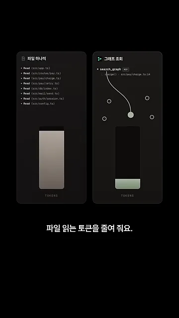
Codeburn
무엇인가요 Claude Code·Cursor·Codex 같은 코딩 도구의 토큰 사용량과 비용을 내 컴퓨터에서 추적하는 무료 도구예요.
써 보면 토큰이 어디로 새는지 보여 주고, 쓰지도 않는데 메시지마다 불러오는 MCP 서버 같은 낭비를 짚어 줘요.
주의 영상은 저장소 이름을 말하지 않아 GitHub 검색으로 찾았어요.
소개한 영상 Claude와 함께 쓸 GitHub 레포 10개 09:07
Trail-Code (옛 Graft)
무엇인가요 내 컴퓨터의 코드를 미리 분석해 어떤 함수가 어디서 불리는지 정리해 두는 코딩 에이전트용 도구예요.
써 보면 질문할 때마다 관련 파일 위치가 같이 붙어, 영상 화면에선 읽은 파일 수가 10개에서 2개로 줄었어요. 코드를 고치면 영향받는 파일도 알려 줘요.
주의 영상 속 이름 Graft는 Trail-Code로 바뀌었어요. 처음 설치할 때 지난 대화 기록을 읽느라 사용량이 나가요.
소개한 영상 클로드 코드 고수들이 먼저 설치하는 깃허브… 00:00
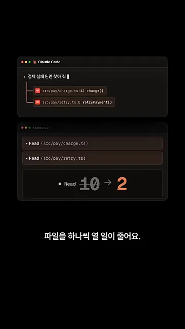
Billion Context
무엇인가요 지난 대화를 계층형 요약으로 접어 저장하는 컨텍스트 압축 플러그인이에요. 에이전트와 모델 API 사이에 끼는 프록시로 동작해요.
써 보면 월요일에 준 지시를 금요일에도 같은 세션에서 이어 갈 수 있다고 해요(발표자 주장). README는 토큰을 5배 덜 쓴다고 적어요.
주의 GitHub API상 라이선스가 표준 SPDX로 잡히지 않아요(NOASSERTION). 쓰기 전에 LICENSE 파일을 확인해요.
소개한 영상 내 컴퓨터에서 돌아가는 AI 에이전트 오픈소… 01:06

Token Optimizer
무엇인가요 요청마다 같이 실려 가는 CLAUDE.md·스킬·MCP 도구 설명·MEMORY.md를 점검해서 어디가 무거운지 대시보드로 보여 주는 Claude Code 플러그인이에요. /token-optimizer로 시작해요.
써 보면 대시보드 예시에서 세션 오버헤드 30.9K 중 약 7.3K를 아낄 수 있다고 보여 줘요. 이미 읽은 파일은 바뀐 부분만 다시 보여 주고, 자동 압축 직전에 작업 상태를 적어 둬요.
주의 PolyForm Noncommercial 라이선스예요(소규모 사업자 추가 허용 조항 있음). 업무용이면 조건을 먼저 읽어야 해요.
소개한 영상 꼭 알아야 할 토큰 절약 도구 깃허브 TOP 7 07:39
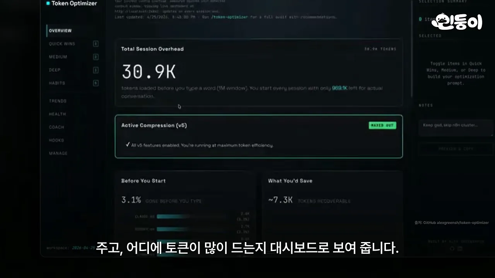
Attention Span
무엇인가요 에이전트가 어떻게 답할지 정하는 출력 스타일 마크다운 모음이에요. Spartan·Rundown·Attention-kind 등이 있고, Claude Code는 출력 스타일로, Codex·OpenCode는 AGENTS.md 링크로 설치해요.
써 보면 "PostgreSQL과 MongoDB 중 뭘 쓸까?" 답이 400단어 넘던 게 Attention-kind를 켜면 94단어로 줄고 정보는 같아요. 발표자는 구현 계획을 끝까지 지치지 않고 읽게 됐다고 해요.
주의 AGPL-3.0이에요.
소개한 영상 쓰레기 코드 없애는 법 02:00
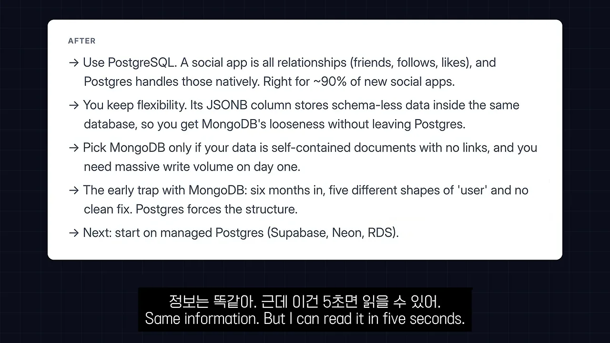
Chisle
무엇인가요 에이전트가 쓰는 말과 읽는 도구 출력을 함께 줄여 토큰을 아끼는 Claude Code 플러그인이에요. 스킬 4개와 훅 3개가 들어 있어요.
써 보면 작성자 예시에서 답변이 약 1,500토큰에서 600토큰으로 줄었어요. caveman·ponytail과의 비교에서도 전체 토큰을 가장 적게 썼다고 해요(작성자 벤치마크).
소개한 영상 코딩 에이전트의 빈틈을 메우는 GitHub… 02:55
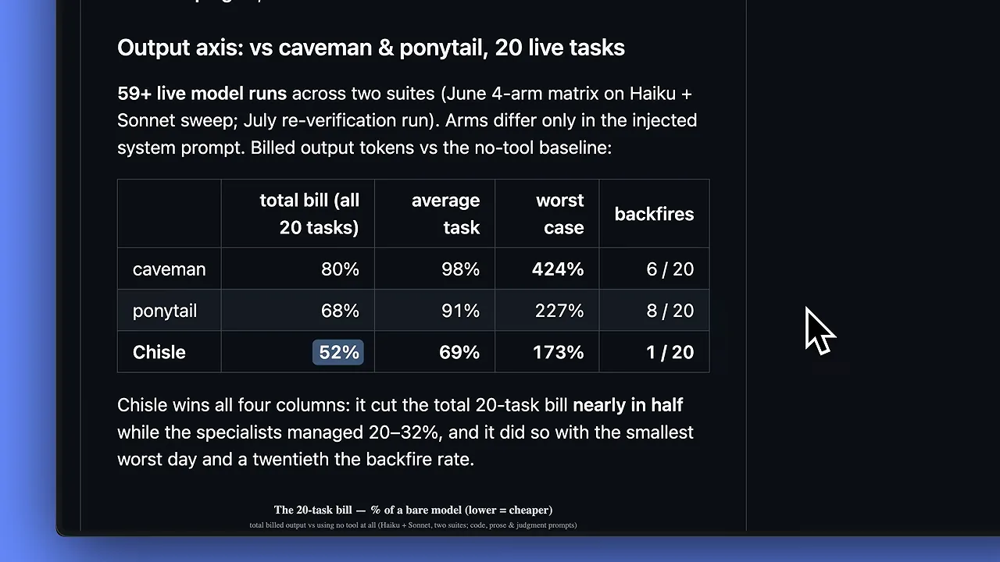
Graphicle
무엇인가요 에이전트에게 저장소의 코드 그래프와 영구 메모리를 함께 주는 Rust 도구예요. Claude Code, Codex, Cursor 등 MCP 클라이언트에 붙어요.
써 보면 코드 한 줄을 고칠 때 다른 어디에 영향이 가는지 지도를 보며 알 수 있다고 해요.
주의 영상 슬라이드 표기는 'Graphical'이에요. 노트는 Graphicle로 추정해 연결했어요.
소개한 영상 내 컴퓨터에서 돌아가는 AI 에이전트 오픈소… 12:56

TokenEconomizer
무엇인가요 Microsoft와 버클리 대학교가 낸 Claude Code·Codex 플러그인이에요. 같은 저장소에서 세션을 거듭할수록 저장소 다시 배우기, 안 쓰는 도구, 헛도는 루프 세 가지 낭비를 배워서 줄여요.
써 보면
- 툴 프루닝은 오래 안 쓴 도구를 다음 세션부터 빼고, 루프 가드는 같은 실패를 되풀이하는 턴에 방향을 한 번 틀어 줘요. 둘은 설치하면 바로 켜져요. 저장소에서 통하는 사실(
python -m pytest같은 명령)을 한 줄씩 기억하는 마이크로 스킬은 기본으로 꺼져 있어요. - 논문은 SWE-Bench 과제 277개에서 평균 비용을 18.4~30.9% 줄였어요. 다만 처음부터 싸지는 않아서, 첫 과제들은 7~38% 더 비쌌고 6번째 과제쯤에야 모든 저장소가 더 싸졌어요.
- 발표자 실측에선 실리는 도구가 56개에서 12개로, 첫 요청 입력 토큰이 36% 줄었어요. 줄어든 몫의 약 84%는 MCP가 아니라 안 쓰는 기본 도구에서 나왔어요. 그런데 줄어든 토큰 대부분이 원래 싼 캐시 읽기라 비용은 9.5%만 줄었어요.
주의 플러그인이 클론 폴더에서 돌아가서 그 폴더를 지우면 안 돼요. git worktree 사본에 깔면 설정이 원래 저장소에 써져요. 마이크로 스킬을 켜면 남의 저장소가 낸 명령 출력이 내 세션 첫머리에 들어갈 수 있어서 켤지는 직접 정하게 했어요.
소개한 영상 MS가 알려주는 AI 아껴 쓰는 법 00:00

에이전트 프레임워크·자동화
에이전트를 만들거나 여러 에이전트를 함께 굴리는 도구예요. 상시 켜 두는 비서, 여러 역할을 나눈 개발팀, 브라우저를 대신 쓰는 에이전트가 여기 있어요.
이 묶음에는 레포 27개가 있어요. 여러 영상이 소개한 레포를 앞에, 그다음은 별이 많은 순서로 놓았어요.
REA
무엇인가요 앱을 바이너리 수준까지 분석해서 증거를 AI 에이전트에게 넘기는 CLI 겸 MCP 서버예요. Hopper·Ghidra·'IDA·JS' 분석기·브라우저를 언제 어떻게 쓸지 스킬로 알려 줘요.
써 보면
- `npx rea-agents setup` 한 줄로 설치하고, Wispr Flow를 분석해 로컬 받아쓰기 앱 Utter를 새로 만들었어요. 발표자는 컨텍스트가 늘수록 결과가 원본에 가까워진다고 말해요. (REA로 소프트웨어를 몇 분 만에 따라 만들기)
- 전문가만 하던 앱 조사를 30분 대화로 시작해요. 발표자는 약 15달러짜리 맥 앱 Vitals를 30분 만에 다시 만들고, Rabbit R1의 운영체제도 새로 짰어요(발표자 주장). (REA로 앱을 뜯어보고 내 버전 만들기)
- 공개 기록에 따르면 연 144달러짜리 받아쓰기 앱 Typeless를 분석한 지 24분 48초 만에 로그인·구독 없는 무료 맥 앱으로 다시 만들었고, CapCut 구조를 연구해 맥 전용 편집기도 나왔어요(발표자 소개). (깃허브 100개 중 끝까지 남은 오픈소스 7개)
- 기능을 분석해 비슷한 프로그램을 만들게 도와, 포토샵·프리미어 프로를 대신하는 무료 앱들이 나왔다는 소식이 돌았다고 소개돼요(발표자 주장). (해외에서 난리 난 무료 CAD, SolidC…)
- 앱 안을 직접 뜯어 소스 코드를 보는 도구라 발표자가 위험하다고 했던 도구로 다시 나와요. 화면만 보고 새로 짜는 웹사이트 버전이 AI Website Cloner Template(5절)이에요. (AI 웹사이트 클로너)
주의 Hopper는 상용 도구라 체험판도 제작사 조건을 따라야 해요. REA 면책 문서는 독점 소프트웨어 복제나 보호된 코드·에셋 재현은 돕지 않는다고 적어 둬요. 서버에 있는 로직과 데이터는 가져올 수 없어요. 공개하거나 팔기 전에 원본 앱의 약관과 라이선스부터 확인하라고 해요(Vitals 약관은 리브랜딩 금지). 영상은 SolidCraft를 REA로 만들었다고 하지만 SolidCraft README는 클린룸 구현이라고 밝혀요.
소개한 영상 REA로 소프트웨어를 몇 분 만에 따라 만들기 00:06 · REA로 앱을 뜯어보고 내 버전 만들기 03:35 · 깃허브 100개 중 끝까지 남은 오픈소스 7개 06:44 · 해외에서 난리 난 무료 CAD, SolidC… 00:00 · AI 웹사이트 클로너 00:00
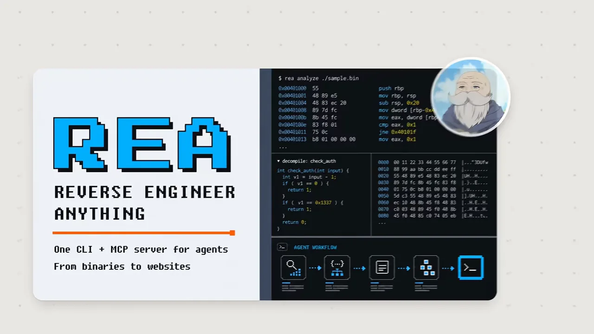
Hermes Agent
무엇인가요 Nous Research가 만든 오픈소스 개인 에이전트예요. 텔레그램·디스코드·슬랙에서 대화하고, 스킬과 메모리를 쌓고, 예약 작업을 돌려요.
써 보면
- 브라이언은 출근길에 텔레그램의 Hermes에게 "내일 계획을 세워 보자"고 하면 캘린더와 할 일을 보고 질문과 추천을 받아요. 새벽 2시 회고도 그 위에서 돌아가는 것으로 보여요. (LLM 위키와 RAG는 무엇이 다를까요)
- 제로초는 VPS(Virtual Private Server)마다 Hermes를 깔아 검은 터미널 대신 한국말로 서버를 다뤄요. 새 VPS를 들이면 Hermes부터 깔고 Buzz에 참여시키면 한곳에서 관리할 수 있다고 해요. (Buzz 도입 전후 비교)
- 출근길 텔레그램으로 오늘 계획을 물으면 캘린더·할 일·지난 기록을 보고 우선순위를 답하고, 집 맥미니의 옵시디언 플래너에 채워 넣어요. 매일 새벽 2시 자동 회고도 Hermes가 해요. (모두가 '나를 아는 AI OS'를 설계하는…)
- 샘 호트만은 다섯 에이전트에게 일을 나눠 맡기고 피드백을 기억시켜요. 스킬만 갖추면 85점쯤에서 시작해 메모리로 90점 위로 올리고, 일주일쯤 지나면 스스로 기억을 정리하고 스킬을 고친다고 해요. (헤르메스 에이전트 5개로 뉴스 큐레이션부터…)
소개한 영상 LLM 위키와 RAG는 무엇이 다를까요 07:48 · Buzz 도입 전후 비교 03:25 · 모두가 '나를 아는 AI OS'를 설계하는… 05:22 · 헤르메스 에이전트 5개로 뉴스 큐레이션부터… 00:52
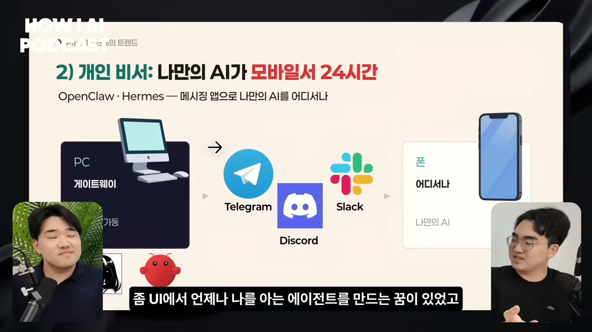
OpenClaw
무엇인가요 메신저와 연결해 어떤 OS(Operating System)에서든 일을 시키는 오픈소스 AI 에이전트예요.
써 보면
- VPS2(Virtual Private Server 2)에 Hermes와 함께 깔아서, 하나가 업데이트하다 고장 나면 다른 하나에게 고쳐 달라고 할 수 있게 해 둬요. 지금 구조에서는 Hermes 보조 역할이에요. (Buzz 도입 전후 비교)
- 휴대폰에서도 "나를 아는 AI"를 부를 수 있게 돼요. 24시간 켜 둘 맥미니가 품절될 만큼 인기였고, GPTers에서는 오픈클로 기반 에이전트 넷이 팀처럼 협업한다고 소개해요. (모두가 '나를 아는 AI OS'를 설계하는…)
소개한 영상 Buzz 도입 전후 비교 03:25 · 모두가 '나를 아는 AI OS'를 설계하는… 05:22
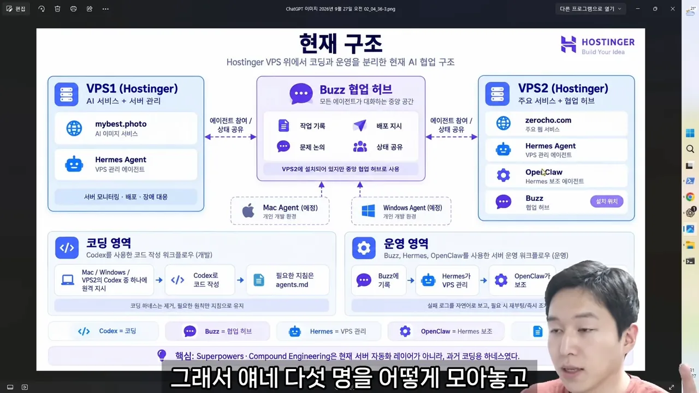
Browser Use
무엇인가요 API가 없는 웹사이트에도 로그인해 사람처럼 클릭하는 오픈소스 AI 브라우저 에이전트예요.
써 보면
- 매일 시청 인허가 포털을 확인하고 시트를 갱신해 변경 시 문자를 보내는 봇을 만들어요. 포털을 새로고침하던 시간이 사라지고 공사를 하루 이틀 당길 수 있다고 해요. (무료 깃허브 저장소 8개로 만드는 AI 대행…)
- 다음에 뭘 누를지 판단까지 스스로 해요. 별 11만 8천으로 브라우저 분야 1위예요. (AI 코딩 도구 분야별 1위 14개, 대안과…)
주의 노트에는 링크가 없어 저장소 이름으로 찾았어요. 사용 기록 전송이 기본으로 켜져 있어요.
소개한 영상 무료 깃허브 저장소 8개로 만드는 AI 대행… 17:53 · AI 코딩 도구 분야별 1위 14개, 대안과… 08:41
Orca
무엇인가요 같은 일을 Claude Code, Codex, Cursor 같은 여러 회사 에이전트에게 동시에 시키는 데스크톱 앱이에요. 에이전트마다 작업 폴더가 따로 있어요.
써 보면
- 결과를 나란히 비교해 제일 나은 것을 골라요. 올해 3월에 나와 별 9만 6천으로 분야 1위예요. (AI 코딩 도구 분야별 1위 14개, 대안과…)
- 터미널, 코드 편집기, 브라우저를 앱 하나에 모았어요. 터미널을 여러 개로 나누고, 내장 VS Code 편집기로 파일을 바로 고치고, 파일이나 이미지를 끌어다 에이전트에게 넘겨요. 앱 안 브라우저에서 버튼 하나를 누르면 그 부분 코드와 캡처가 에이전트에게 가고, 고친 코드에 줄마다 코멘트를 달아 돌려보낼 수도 있어요. (이번 주 깃허브 트렌딩 결산 TOP 10)
- Claude·Codex 사용량을 계정별로 보여 주고, 휴대폰 앱으로 완료 알림을 받아 다음 지시까지 보낼 수 있어요. 앱은 무료이고 쓰던 구독을 그대로 연결해요. (이번 주 깃허브 트렌딩 결산 TOP 10)
주의 노트에는 링크가 없어 저장소 이름으로 찾았어요. 나눠 시키는 것만 필요하면 Claude Code 기본 하위 에이전트로도 돼요.
소개한 영상 AI 코딩 도구 분야별 1위 14개, 대안과… 03:20 · 이번 주 깃허브 트렌딩 결산 TOP 10 00:51
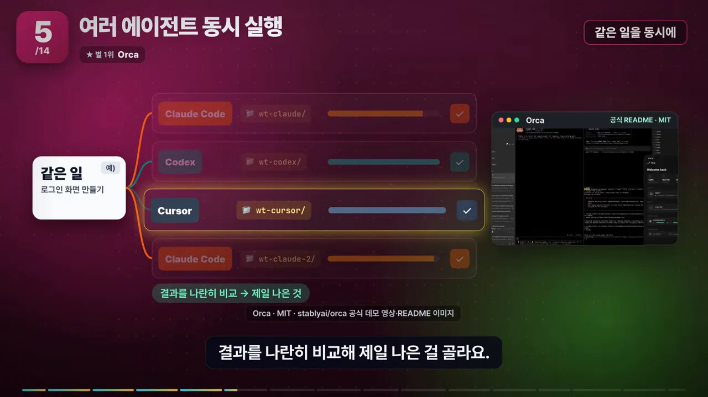
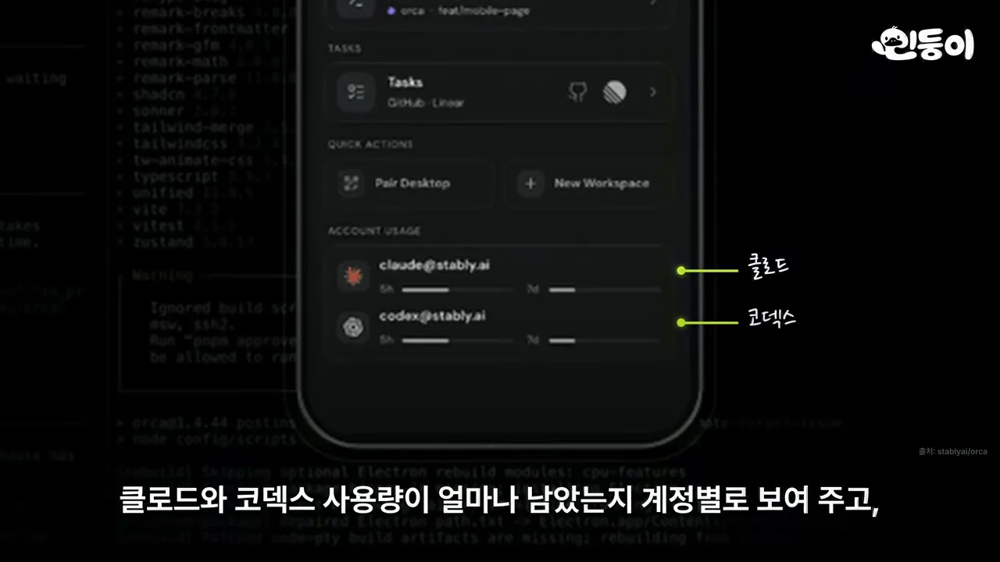
Agent Reach
무엇인가요 에이전트가 Reddit, X, YouTube, LinkedIn 채용 공고 등을 명령 하나로 API 비용 없이 읽게 해 주는 도구예요.
써 보면
- 고객 제품을 찾는 공개 게시글과 답글 초안을 매일 받는 '구매 의도 알림' 서비스를 만들 수 있어요. 발표자가 가장 먼저 시작하라고 꼽은 서비스예요. (무료 깃허브 레포 8개로 만드는 서비스 사업)
- 대부분 API 요금 없이 명령 한 줄로 에이전트에게 인터넷을 보는 눈을 붙여요. (주식 분석 AI가 깃허브 2위? 지금 뜨는…)
주의 별도 로그인 계정을 쓰고, X 연동은 아직 실험 단계라고 해요. 크롬의 로그인 정보를 복사해 쓰니 부계정을 쓰라고 권해요.
소개한 영상 무료 깃허브 레포 8개로 만드는 서비스 사업 09:50 · 주식 분석 AI가 깃허브 2위? 지금 뜨는… 01:35
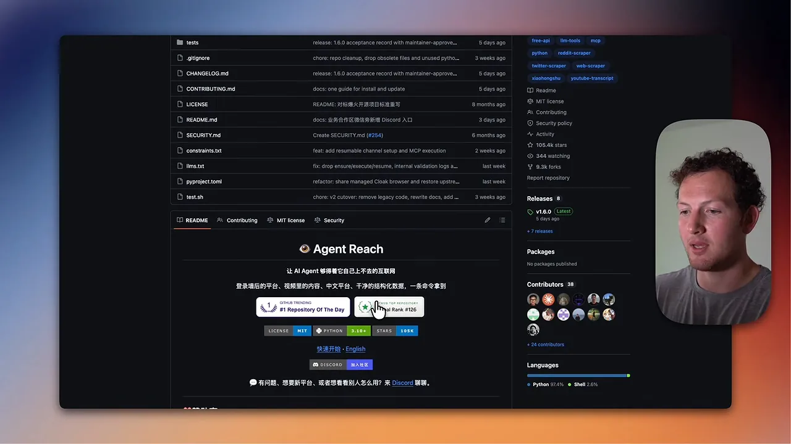
Ruflo
무엇인가요 Claude Code나 Codex에 붙여서 AI 에이전트 여러 개를 설계·코딩·테스트 역할로 나눠 한 개발팀처럼 굴리는 오케스트레이션 도구예요. 지난 작업을 기억하고, 전용 콘솔로 진행 상황과 비용을 보여 줘요.
써 보면
- 같은 기능을 architect·coder·tester가 나눠 맡고, 기억 기능 덕분에 같은 조사를 3번에서 1번으로 줄인다고 보여 줘요. 대신 에이전트가 늘수록 토큰 비용도 커져서, 작은 수정은 에이전트 하나가 낫다고 해요. (계속 트렌딩에 뜨는 AI 개발팀 오픈소스,…)
- 큰 일을 AI 하나에 통째로 맡기지 않고 코딩·테스트·보안·문서를 맡은 에이전트로 팀을 꾸려요. 팀 상황과 토큰·비용은 대시보드로 봐요. 다만 영상 시점 이틀 동안 나온 업데이트 다섯 번이 대부분 보안 구멍을 막는 수정이었어요. (이번 주 깃허브 트렌딩 결산 TOP 10)
주의 예전 이름은 Claude Flow예요. 설치 명령도 npx claude-flow@latest init에서 npx ruflo@latest init으로 바뀌었어요.
소개한 영상 계속 트렌딩에 뜨는 AI 개발팀 오픈소스,… 00:00 · 이번 주 깃허브 트렌딩 결산 TOP 10 02:15

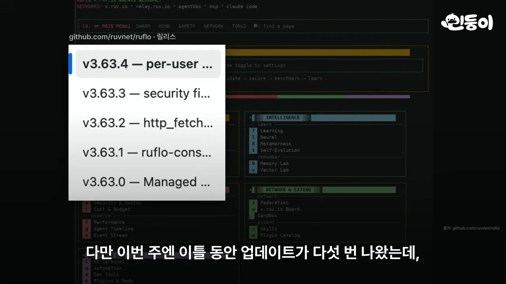
super-board
무엇인가요 GitHub 프로젝트 보드 하나로 AI 에이전트 개발팀을 굴리는 스킬 묶음이에요. 문제를 티켓으로 모으고 Build → QA → Review 레인이 차례로 처리해요.
써 보면
- 설치 → `/super-board onboard` → `/super-board run` 세 단계면 최대 3개 정도의 에이전트가 Ready 칸의 티켓을 알아서 비워요. 진행 기록은 GitHub 이슈 댓글과 PR로 남아요. (스스로 개선하는 소프트웨어 공장, super…)
- 보안 티켓 16장이 닫히고 프로덕션에 머지됐어요. Claude 사용량이 바닥나 이 단계는 Codex로 돌렸어요. (보안 감사 스킬로 진짜 버그 21개를 찾은 과정)
주의 발표자(Eric Tech)가 직접 만든 저장소예요.
소개한 영상 스스로 개선하는 소프트웨어 공장, super… 00:08 · 보안 감사 스킬로 진짜 버그 21개를 찾은 과정 03:49
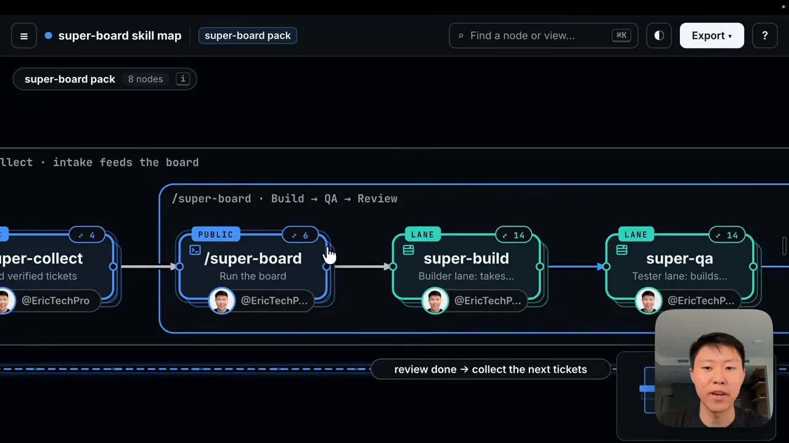
OpenCode
무엇인가요 Claude Code 같은 AI 코딩 에이전트를 오픈소스로 만든 거예요. 75곳이 넘는 회사의 모델과 로컬 모델 중에서 골라 쓰고, ChatGPT나 GitHub Copilot 구독으로 로그인할 수도 있어요.
써 보면 계정 없이 쓰는 무료 모델이 들어 있어서, 영상 시점에는 DeepSeek V4.1 Flash와 GLM(General Language Model)을 기간 한정으로 무료로 쓸 수 있었어요. 2.2 버전부터는 데스크톱 앱 플러그인을 직접 만들어 공유할 수 있어요.
소개한 영상 이번 주 깃허브 트렌딩 결산 TOP 10 01:38
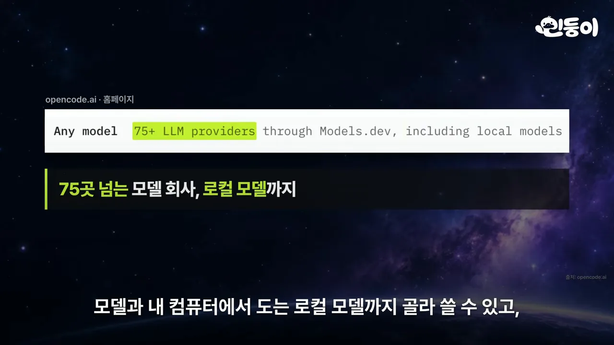
Firecrawl
무엇인가요 웹사이트 주소를 주면 광고와 메뉴를 걷어 내고 AI가 바로 읽을 본문만 마크다운으로 돌려주는 도구예요.
써 보면 에이전트가 웹 페이지를 깨끗한 본문으로 받아요. 별 19만 3천으로 웹 검색 분야 1위예요. 기본은 클라우드로 요청하고 무료는 월 1,000 크레딧이에요.
주의 AGPL-3.0 라이선스예요.
소개한 영상 AI 코딩 도구 분야별 1위 14개, 대안과… 08:22
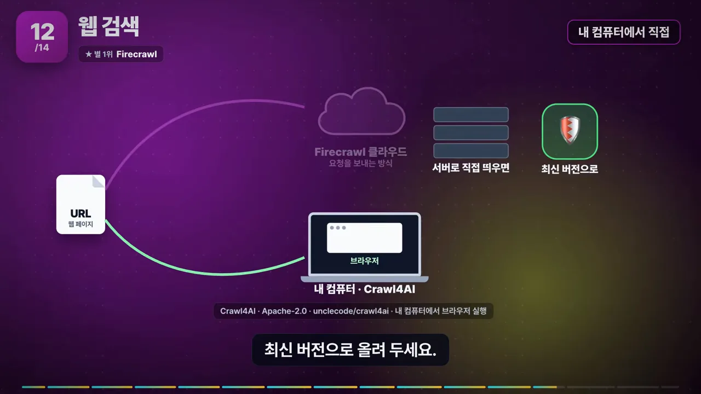
Agency Agents
무엇인가요 개발·디자인·마케팅 등 분야별 전문 에이전트 수백 개를 모은 저장소예요. 에이전트마다 일하는 순서와 결과물 기준이 정해져 있어요.
써 보면 'UI Designer 에이전트로 랜딩 페이지 시안 잡아 줘'처럼 이름으로 부르거나, 일만 말하면 Claude가 알맞은 에이전트를 골라 맡겨요.
주의 명령어로 설치하면 ~/.claude/agents/의 같은 이름 파일을 경고 없이 덮어써요. 먼저 백업해요.
소개한 영상 클로드 코드 고수들이 먼저 설치하는 깃허브… 00:30

Paperclip
무엇인가요 회사 조직도처럼 에이전트에 PM·리뷰어 같은 위계를 주고 프로젝트를 관리하는 오픈소스 앱이에요.
써 보면 5개월 전에는 "PM이 리뷰어에게 대본 검토를 시키는" 구조를 짰지만, 혼자 일하는 규모에서는 위계가 필요 없고 무겁게 느껴져서 Buzz로 갈아탔어요.
주의 영상에서는 써 보고 뺀 도구로 나와요.
소개한 영상 Buzz 도입 전후 비교 01:16
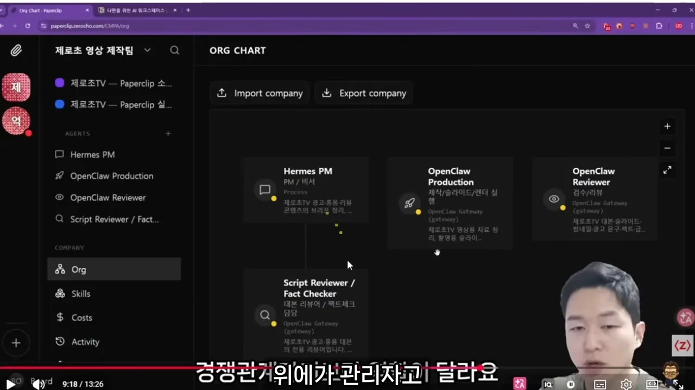
Crawl4AI
무엇인가요 내 컴퓨터에서 브라우저를 직접 돌려 웹을 긁는 무료 파이썬 라이브러리예요.
써 보면 클라우드로 보내지 않고 비용 없이 웹 본문을 가져와요.
주의 서버로 띄워 쓴다면 최신 버전으로 올려 두라고 해요. 지난 두 달 사이 보안 문제가 여러 건 고쳐졌어요.
소개한 영상 AI 코딩 도구 분야별 1위 14개, 대안과… 08:22
Chrome DevTools MCP
무엇인가요 조작보다 진단이 중심인 Chrome 개발자 도구용 MCP 서버예요.
써 보면 느린 페이지, 네트워크 요청, 콘솔 오류를 에이전트가 직접 봐요.
주의 사용 기록 전송이 기본으로 켜져 있어요.
소개한 영상 AI 코딩 도구 분야별 1위 14개, 대안과… 09:02

agent-browser
무엇인가요 판단은 Claude Code에 맡기고 클릭만 해 주는 Vercel의 브라우저 자동화 명령줄 도구예요.
써 보면 Claude Code가 웹 페이지를 직접 조작하게 해요. 설치 116만으로 브라우저 분야 설치 1위예요.
소개한 영상 AI 코딩 도구 분야별 1위 14개, 대안과… 09:02
Playwright MCP
무엇인가요 Playwright로 브라우저를 조작하는 MCP 서버예요. 테스트 쪽 기능이 강해요.
써 보면 '로그인 화면 열림 · 버튼 클릭 동작 · 결과 문구 확인' 같은 테스트 점검을 에이전트가 해요.
소개한 영상 AI 코딩 도구 분야별 1위 14개, 대안과… 09:02
Buzz
무엇인가요 Block(잭 도시의 회사)이 만든, 사람과 AI 에이전트가 같은 팀원으로 일하는 셀프 호스팅 "Slack 같은 공간"이에요.
써 보면 내 VPS에 설치하니 이용료가 없고 대화 기록이 전부 내 서버에 남아요. 서버 네 대의 에이전트가 Buzz에서 서로 불러 대화하고 파일을 주고받으며, 마베봇은 세 시간마다 운영 현황을 올려요. 다만 봇이 대답을 안 하는 문제가 자주 있었어요.
소개한 영상 Buzz 도입 전후 비교 08:02
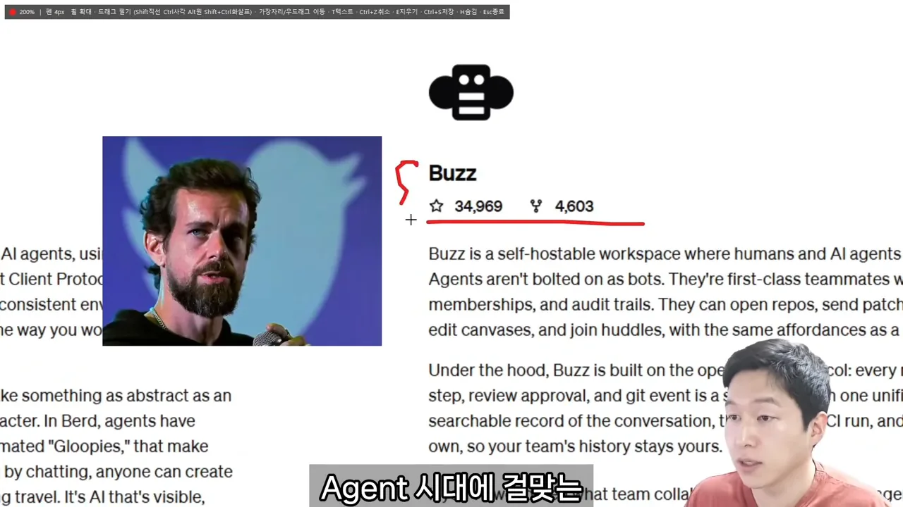
Pipecat
무엇인가요 실시간 음성 에이전트를 만드는 오픈소스 프레임워크예요. Vapi나 Bland의 무료 대안으로 내 서버에서 돌려요.
써 보면 영업시간 뒤 전화를 받아 예약하거나 급한 건을 넘기고 사장에게 요약 문자를 보내는 AI 접수원을 만들어, 밤·주말 전화를 놓치지 않게 해요.
주의 노트에는 링크가 없어 저장소 이름으로 찾았어요.
소개한 영상 무료 깃허브 저장소 8개로 만드는 AI 대행… 10:34
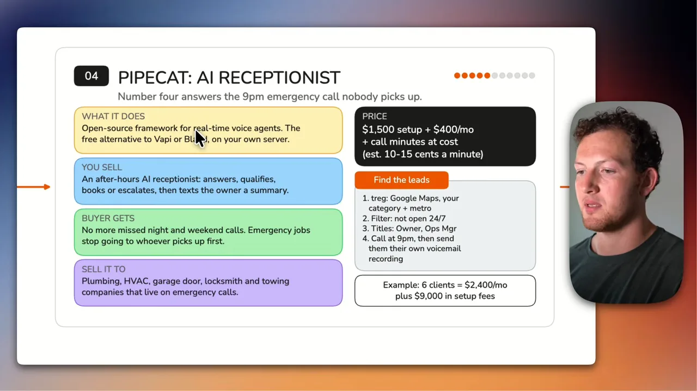
Apify MCP 서버
무엇인가요 Claude를 인스타그램, 틱톡, 아마존 같은 사이트용 스크래퍼 수천 개에 연결하는 MCP 서버예요.
써 보면 Claude 혼자서는 막히던 사이트의 데이터를 가져와요. "시카고 베이커리 중 소개란에 웹사이트가 없는 곳"을 물으면 몇 분 뒤 스프레드시트가 나와요.
주의 커넥터는 오픈소스지만 스크래퍼는 Apify 클라우드에서 돌아 비용이 들 수 있어요. 무료 플랜은 매달 5달러어치 크레딧이에요.
소개한 영상 Claude와 함께 쓸 GitHub 레포 10개 02:07
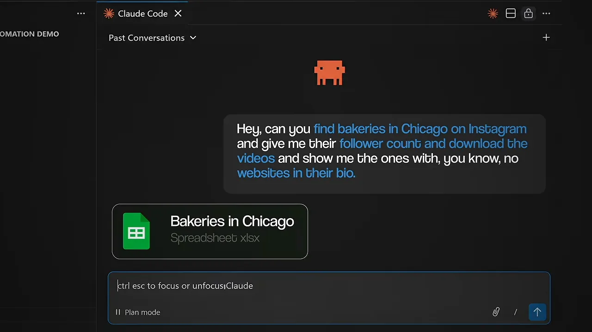
Cindy
무엇인가요 게임사 XD(Experience Design)가 만든 무료 오픈소스 AI 비서 앱이에요.
써 보면 Claude Code로 계획하다 Codex로 넘겨도 작업 공간과 메모리가 이어지고, 반복 업무를 예약해 결과를 메신저로 받아요.
주의 노트에는 저장소 링크가 없고 마지막 카드 화면에만 makecindy/cindy가 적혀 있어요.
소개한 영상 주식 분석 AI가 깃허브 2위? 지금 뜨는… 01:35
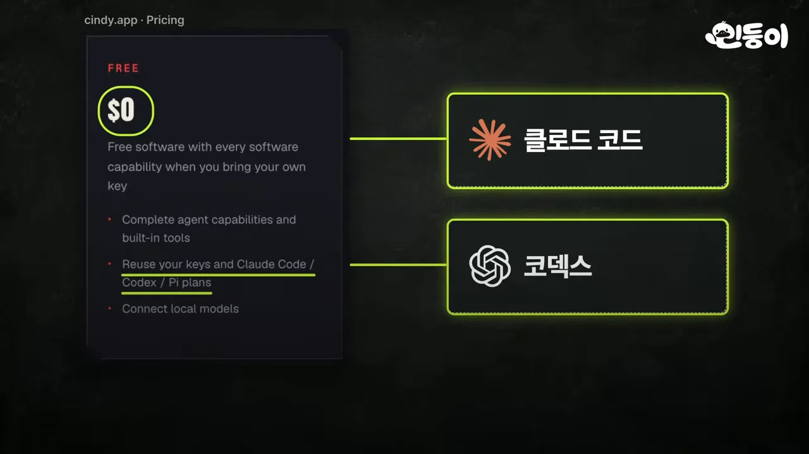
Ouroboros
무엇인가요 만들기 전에 스스로 질문해 계획을 세우고, 다 만든 뒤 그 계획대로 되는지 검사하는 에이전트 도구예요.
써 보면 앱의 목적이 달라질 수 있는 결정은 멈추고 사용자에게 물어요. 실패한 부분만 고쳐 검사를 다시 돌리고, 진척이 없으면 왜 멈췄는지 알려 줘요.
소개한 영상 코딩 에이전트의 빈틈을 메우는 GitHub… 07:08

ThinkRail
무엇인가요 JetBrains가 만든 가벼운 AI 코딩 IDE(Integrated Development Environment)예요. pi 코딩 에이전트를 중심으로 작업해요.
써 보면 작업마다 프로젝트 복사본(worktree)을 만들어 에이전트끼리 코드를 건드리지 않게 하고, 토큰·비용을 실시간으로 보여 줘요.
주의 지금은 Pi 에이전트 하나만 연결돼요.
소개한 영상 주식 분석 AI가 깃허브 2위? 지금 뜨는… 02:54
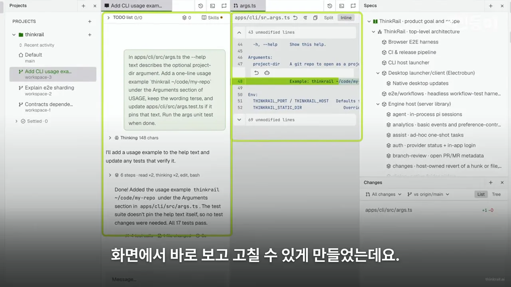
openbot
무엇인가요 Claude Code·Codex·Gemini·Grok에 각자 대화방과 작업 공간을 주고 팀원처럼 굴리는 로컬 데스크톱 워크스페이스예요.
써 보면 여러 에이전트에게 조사→개발→검토로 일을 넘기게 할 수 있어요.
주의 개발 미리보기 단계라 첫 동의 뒤엔 묻지 않고 파일을 고쳐요. 따로 만든 폴더에서 시험하라고 해요. 라이선스는 표준 SPDX로 잡히지 않아요.
소개한 영상 주식 분석 AI가 깃허브 2위? 지금 뜨는… 02:54

Scout
무엇인가요 실제 브라우저를 열고 클릭, 입력, 스크롤까지 하는 오픈소스 브라우저 에이전트예요.
써 보면 API가 없는 오래된 사이트나 사내 시스템에서도 에이전트가 직접 일을 처리할 수 있다고 해요.
주의 Outcrawl 저장소를 자동으로 미러링한 저장소예요.
소개한 영상 내 컴퓨터에서 돌아가는 AI 에이전트 오픈소… 09:46
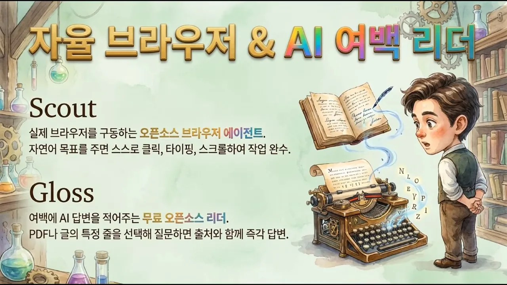
yobiru
무엇인가요 중앙 서버나 계정 없이 Tailscale 망으로 여러 기기와 클라우드의 에이전트를 직접 이어 메시지·데이터·파일을 주고받게 하는 도구예요.
써 보면 노트북 에이전트가 정리한 데이터를 클라우드 에이전트에게 넘기고 일을 인계할 수 있고, 중앙 서버가 없어 단일 장애점도 없다고 해요.
주의 영상 슬라이드 표기는 'Yo'예요.
소개한 영상 내 컴퓨터에서 돌아가는 AI 에이전트 오픈소… 16:03
Qwen Audio Agent
무엇인가요 음성 대화를 컴퓨터에서 일하는 에이전트에 이어 주는 오픈소스 프로그램이에요. 음성 프런트엔드(DashScope의 qwen-audio-3.0-realtime-plus)가 대화를 맡고, Claude Code가 백엔드에서 코딩을 맡아요. 둘 사이는 로컬 게이트웨이가 ACP(Agent Client Protocol) 어댑터로 이어요.
써 보면
- Claude Code가 일하는 동안 따로 질문하고, 말을 끊고, 요구사항을 바꿀 수 있어요. 빌드 중에 바꾼 지시는 대기(Queued) 상태로 들어갔다가 첫 빌드가 끝난 뒤 후속 작업으로 처리됐어요.
- 설정의 핵심은
config.env하나예요. 작업 폴더는 터미널을 연 위치가 아니라QWAUDIO_WORKSPACE값이 정해요. 요구사항 설명이나 설계 질문은 음성이, 파일 경로·코드·오류 메시지는 글이 낫다고 해요.
주의 "접수했어요"는 반영됐다는 뜻이 아니라서 작업 카드, 앱, diff로 직접 확인해요. 음성 답을 끊어도, 마이크를 꺼도 코딩 작업은 계속 돌고, 작업을 취소해도 이미 고친 파일은 되돌아가지 않아요. 비용은 DashScope 음성 쪽과 Claude 쪽 두 군데서 나가요.
소개한 영상 Qwen Audio Agent로 말하면서 코딩하기 00:00

Claw Office
무엇인가요 여러 컴퓨터에서 도는 에이전트 수십 개를 3D 사무실 한 화면에서 보고 다루는 도구예요. 코난쌤이 공개된 소스 코드를 가져와 고쳐서 GitHub에 올렸어요.
써 보면 컴퓨터마다 구역이 있고 에이전트가 책상에 앉은 직원으로 보여요. 머리 위 색으로 일하는지·쉬는지·내 도움이 필요한지, 책상 색으로 OpenClaw·Claude Code·Codex 중 어떤 도구인지 알 수 있어요. 원본보다 램을 덜 먹게 했고, 보기만 되던 걸 직접 제어할 수 있게 바꿨어요.
주의 잔버그가 있을 수 있어서 이슈나 PR로 알려 달라고 해요. 정리 노트가 README를 확인해 보니 OpenClaw Control UI 안에서 도는 플러그인이라 OpenClaw와 Node 최신 버전이 필요해요. 원본은 AgentSystemLabs의 Agent Office예요.
소개한 영상 ChatGPT 대신 Opus 5.5만 쓰는 이유 02:59

디자인·UI
AI가 만든 화면이 뻔해 보이지 않게 돕는 디자인 스킬과 UI 라이브러리예요. 스타일 규칙, 컴포넌트, 애니메이션 효과를 에이전트가 가져다 쓰게 해요.
이 묶음에는 레포 26개가 있어요. 여러 영상이 소개한 레포를 앞에, 그다음은 별이 많은 순서로 놓았어요.
임페커블 (Impeccable)
무엇인가요 이미 만든 화면의 문제를 진단하고 글씨·여백·색을 고치게 하는 디자인 다듬기 스킬이에요.
써 보면
- '뭔가 별로야'라는 막연한 불만이 화면 위 구체적인 수정 위치로 바뀌어요. (2026년 개발자들이 고른 디자인 스킬·자료…)
- 위계·간격·서체·접근성·빈 상태까지 점검하고 고쳐서 괜찮은 초안을 전문가 수준으로 끌어올린다고 해요(발표자 주장). '더 대담하게', '더 차분하게'처럼 방향만 말해도 돼요. (Claude Design 실력을 올리는 25…)
- 발표자의 `/ui-refine-loop`가 진단 → 고치기 → 스타일 → 모션 → 다듬기를 Impeccable로 돌려요. 몇 바퀴 돌면 처음보다 훨씬 나은 화면이 나온다고 해요(발표자 주장). (스스로 개선하는 소프트웨어 공장, super…)
- 타이포그래피·색·공간·반응형·인터랙션·모션·UX(User Experience) 글쓰기 일곱 영역에서 AI 티를 찾아 없애요. 라이브 모드에서는 화면의 컴포넌트를 눌러 그 자리에서 고쳐요. (클로드에게 디자인 취향을 입히는 3단계)
- "더 세련되게" 같은 막연한 요청 대신 첫 화면은 bolder, 정보 많은 곳은 quieter처럼 원하는 부분만 콕 집어 고칠 수 있어요. (개발자들이 선택한 깃허브 디자인·모션 도구…)
주의 발표자는 Anthropic 기본 frontend-design 스킬이나 'UI UX' Pro Max보다 한 단계 위라고 봐요.
소개한 영상 2026년 개발자들이 고른 디자인 스킬·자료… 01:09 · Claude Design 실력을 올리는 25… 06:43 · 스스로 개선하는 소프트웨어 공장, super… 10:09 · 클로드에게 디자인 취향을 입히는 3단계 03:55 · 개발자들이 선택한 깃허브 디자인·모션 도구… 01:57

앤트로픽 프론트엔드 디자인 (frontend-design)
무엇인가요 앤트로픽 공식 스킬 저장소이고, 그중 frontend-design 스킬이 폰트·색·배치의 방향을 먼저 세우게 해요.
써 보면
- 같은 '예쁘게' 지시에도 분위기가 일관돼요. 핵심 색을 이름 붙인 hex 값 4~6개로 못 박으라고 적혀 있어서, 다시 만들어도 같은 분위기가 나와요. (2026년 개발자들이 고른 디자인 스킬·자료…)
- 크림색 배경+주황 강조(
#F4F1EA,#D97757) 같은 뻔한 조합을 빼게 해요. 설치 113만으로 디자인 분야 설치 1위예요. (AI 코딩 도구 분야별 1위 14개, 대안과…) - AI가 만든 웹사이트의 "AI 티"를 줄여 줘요. 스킬 파일 하나라 Codex나 Cursor에도 넣을 수 있고, 처음이라면 이것부터 시작하라고 해요. (개발자들이 선택한 깃허브 디자인·모션 도구…)
주의 저장소 전체 라이선스 표기가 없어요. 스킬마다 라이선스가 다를 수 있어요. 저장소 전체 라이선스는 없고 스킬마다 따로예요. 저장소에는 다른 스킬도 많이 들어 있어요.
소개한 영상 2026년 개발자들이 고른 디자인 스킬·자료… 01:26 · AI 코딩 도구 분야별 1위 14개, 대안과… 09:29 · 개발자들이 선택한 깃허브 디자인·모션 도구… 00:19

UI UX Pro Max
무엇인가요 만들 서비스를 말하면 79가지 스타일, 192가지 팔레트, 74가지 폰트 조합 중에서 어울리는 조합을 골라 주는 디자인 스킬이에요.
써 보면
- 빈 화면에서 막히지 않고 바로 출발점이 생겨요. '카페 주문 앱'을 넣자 Warm Minimal 스타일, Espresso 팔레트, Pretendard 폰트가 뽑혀 시안에 그대로 쓰였어요. (2026년 개발자들이 고른 디자인 스킬·자료…)
- 'SaaS 대시보드, 차분하게'를 넣으면 색 조합 후보가 펼쳐져요. 피할 것을 적는 frontend-design과 방향이 반대예요. 별 13만 7천으로 디자인 분야 1위예요. (AI 코딩 도구 분야별 1위 14개, 대안과…)
- "금융 대시보드"라고만 해도 어울리는 색·폰트·차트를 골라 사이트 전체 규칙으로 묶어 줘요. (개발자들이 선택한 깃허브 디자인·모션 도구…)
소개한 영상 2026년 개발자들이 고른 디자인 스킬·자료… 00:00 · AI 코딩 도구 분야별 1위 14개, 대안과… 09:44 · 개발자들이 선택한 깃허브 디자인·모션 도구… 00:45
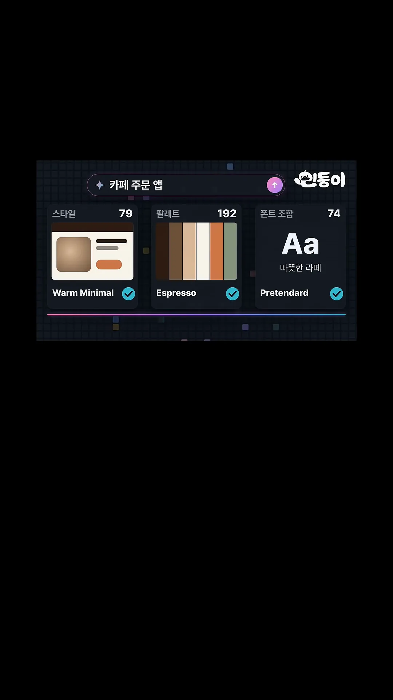
테이스트 스킬 (taste-skill)
무엇인가요 코딩 에이전트에 디자인 감각을 주는 스킬이에요. 시각적 방향을 먼저 정하고, 어울리는 이미지를 찾고, 브라우저에서 결과를 확인하는 순서로 일을 시켜요.
써 보면
- '감각 있게 해 줘' 같은 막연한 지시가 실제 작업 단계로 바뀌어요. 화면 크기별로 직접 열어 확인하는 단계까지 순서에 들어 있어요. (2026년 개발자들이 고른 디자인 스킬·자료…)
- Argus 사이트를 다섯 스타일로 만들 때 Impeccable 결과와 나란히 뽑아 비교했어요. 발표자는 Impeccable의 대안으로 추천해요. (클로드에게 디자인 취향을 입히는 3단계)
- 같은 포트폴리오도 숫자만 바꾸면 여백 넓은 차분한 디자인이 되거나 비대칭에 움직임 많은 디자인이 돼요. 영상은 이미 있는 페이지를 "고치는" 쪽에 분류해요. (개발자들이 선택한 깃허브 디자인·모션 도구…)
주의 영상은 별이 6만 6천 개 가까이라고 했지만 지금은 10만 개가 넘어요. 지금 기본 버전(v2)은 숫자 대신 연구한 디자인 방향을 골라 주는 방식으로 바뀌었어요. 영상의 숫자 방식은 Leonxlnx/taste-skill-classics로 옮겨졌어요.
소개한 영상 2026년 개발자들이 고른 디자인 스킬·자료… 00:43 · 클로드에게 디자인 취향을 입히는 3단계 06:19 · 개발자들이 선택한 깃허브 디자인·모션 도구… 01:11
에밀 코왈스키 스킬
무엇인가요 에밀 코왈스키가 공개한 디자이너·엔지니어용 스킬 모음이에요. 애니메이션을 만드는 animate와 검토하는 review-animations 등이 들어 있어요.
써 보면
- 툭툭 끊기는 버튼·메뉴 움직임의 타이밍과 반응을 다듬어, 누를 때의 손맛까지 챙기게 해요. 이미 만든 움직임을 점검하는 데도 써요. (2026년 개발자들이 고른 디자인 스킬·자료…)
- 팝업·메뉴가 나오고 멈추는 작은 차이를 다듬고, 어색한 움직임이나 오히려 빼야 할 움직임을 찾아 줘요. (개발자들이 선택한 깃허브 디자인·모션 도구…)
소개한 영상 2026년 개발자들이 고른 디자인 스킬·자료… 00:36 · 개발자들이 선택한 깃허브 디자인·모션 도구… 03:22

React Bits
무엇인가요 움직이는 글자, 유리 카드, 커서 효과처럼 고급 사이트에서 볼 법한 애니메이션 React 컴포넌트 모음이에요.
써 보면
- 효과를 말로 설명하는 대신 코드를 Claude에 주거나 디자인 시스템에 저장해 두면, 다음 작업에서도 같은 효과를 다시 써요. (Claude Design 실력을 올리는 25…)
- 사이트에서 움직임을 보고 골라 AI 코딩 도구에 넣어 달라고 하면 돼요. 포트폴리오나 랜딩 페이지에 특히 좋다고 해요. (개발자들이 선택한 깃허브 디자인·모션 도구…)
주의 GitHub 라이선스가 표준 형식으로 잡히지 않아요(NOASSERTION). 상업적으로 쓰기 전 LICENSE 파일을 확인하세요. MIT + Commons Clause라서 컴포넌트 자체를 파는 건 막혀 있어요.
소개한 영상 Claude Design 실력을 올리는 25… 08:04 · 개발자들이 선택한 깃허브 디자인·모션 도구… 03:49

홀마크 (Hallmark)
무엇인가요 AI가 늘 같은 뼈대로 만드는 페이지에서 벗어나게 하는 안티 AI 슬롭 디자인 스킬이에요.
써 보면
- 큰 제목 아래 카드 세 개 같은 복붙 구조 대신, 페이지 뼈대부터 다르게 설계하게 해요. (2026년 개발자들이 고른 디자인 스킬·자료…)
- 백지 대신 고를 수 있는 출발점이 생기고, 검사 기능이 AI 티 나는 패턴과 모바일에서 잘리는 화면을 잡아내요. (개발자들이 선택한 깃허브 디자인·모션 도구…)
소개한 영상 2026년 개발자들이 고른 디자인 스킬·자료… 01:00 · 개발자들이 선택한 깃허브 디자인·모션 도구… 01:33
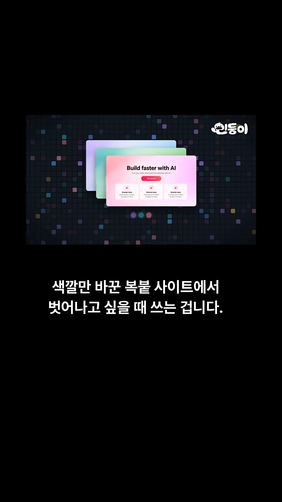
img2threejs
무엇인가요 이미지 한 장을 분석해 물건의 3D 형태를 만들고, Three.js에서 돌아가는 코드로 내보내는 도구예요.
써 보면
- 배경을 지운 의자 사진 한 장으로 거의 그대로인 3D 모델이 나왔어요. 복잡한 키보드도 후속 요청 한 번에 어긋남이 고쳐지고 건반 소리·조명까지 붙었어요. (사진 한 장으로 Three.js 3D 모델…)
- 3D 프로그램을 배우지 않고 랜딩 페이지에 돌려 볼 수 있는 3D 모델을 넣어요. 다만 토큰을 많이 쓰고, G63 차량 예시는 3시간 넘게 걸렸어요. (코딩 에이전트의 빈틈을 메우는 GitHub…)
소개한 영상 사진 한 장으로 Three.js 3D 모델… 00:00 · 코딩 에이전트의 빈틈을 메우는 GitHub… 00:36

Open Design
무엇인가요 웹사이트·앱·발표 자료·이미지·모션 그래픽까지 한곳에서 만드는 오픈소스 디자인 작업 공간이에요. Claude Code·Codex·Cursor를 붙여 쓰고 HyperFrames로 MP4(MPEG-4 Part 14)도 뽑아요.
써 보면 홈페이지를 만든 뒤 같은 브랜드 규칙으로 발표 자료를 바로 뽑는 식으로, 디자인 작업 전체를 한곳에 모아요.
소개한 영상 개발자들이 선택한 깃허브 디자인·모션 도구… 02:55

diagram-design
무엇인가요 코딩 에이전트에 깔아 두고 한 문장만 치면 흐름도·사분면·타임라인 같은 도식을 HTML(HyperText Markup Language) 파일 하나로 그려 주는 스킬이에요. 도식 양식이 40가지 넘어요.
써 보면 "입고 → 검수 → 출고" 한 문장으로 흐름도가 나오고, 회사 사이트 주소를 주면 글꼴과 배색까지 맞춰요. 발표자는 문서용 도식이 필요할 때마다 이걸 먼저 찾아요.
소개한 영상 깃허브 100개 중 끝까지 남은 오픈소스 7개 02:37
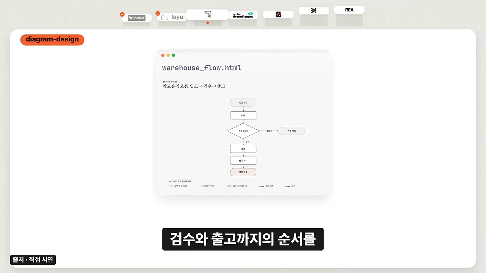
AI Website Cloner Template
무엇인가요 Next.js 프로젝트 틀에 Claude Code용 복제 명령어 /clone-website를 넣어 둔 템플릿이에요. 주소를 주면 에이전트가 Map → Observe → Build → Compare 네 단계로 사이트를 살펴보고, Next.js와 Tailwind로 고칠 수 있는 컴포넌트를 새로 짜요. 발표자는 REA(4절)의 웹사이트 버전이라고 소개해요.
써 보면 Observe 단계에서 데스크톱·모바일 화면을 끝까지 스크롤하고 메뉴·탭·마우스 오버를 하나하나 눌러 보며 이미지·폰트 파일도 내려받아요. Compare 단계에서는 원본과 나란히 캡처해 다른 곳을 고치기를 반복해요. 공개된 Supabase 홈페이지로 시험하니 상단 메뉴, 큰 문구, 코드 블록, 글씨가 써지는 효과까지 거의 똑같이 나왔어요. 원본 코드를 빼 오지 않고 화면을 보고 새로 짜서, 겉모습은 비슷해도 코드는 다를 수 있어요. 발표자는 잘 만든 사이트를 복제해 간격·글자 크기·섹션 순서를 공부하는 쓰임을 가장 값지게 봐요.
주의 README가 피싱·사칭, 남의 디자인을 내 것처럼 쓰기, 이용 약관 위반을 직접 금지해요. Node.js 24 이상과 Claude Code의 브라우저 사용 설정이 필요해요. 에이전트 접속을 알아채고 막는 사이트가 많아(흔히 429 에러) Supabase처럼 술술 되는 경우는 드물어요.
소개한 영상 AI 웹사이트 클로너 01:55

버셀 웹 디자인 가이드라인 (web-design-guidelines)
무엇인가요 버셀이 낸 에이전트 스킬 모음이고, 그중 web-design-guidelines 스킬이 웹 화면의 사용성 규칙을 점검해요.
써 보면 보기엔 멀쩡한데 쓰기 불편한 곳을 잡아요. 키보드 조작, 입력 오류 표시 같은 항목을 접근성·포커스·폼·애니메이션·다크 모드·다국어 등으로 나눠 확인해요.
주의 규칙 원문은 별도 저장소 vercel-labs/web-interface-guidelines(MIT)에 있어요. agent-skills 저장소에는 라이선스 표기가 없어요.
소개한 영상 2026년 개발자들이 고른 디자인 스킬·자료… 00:27
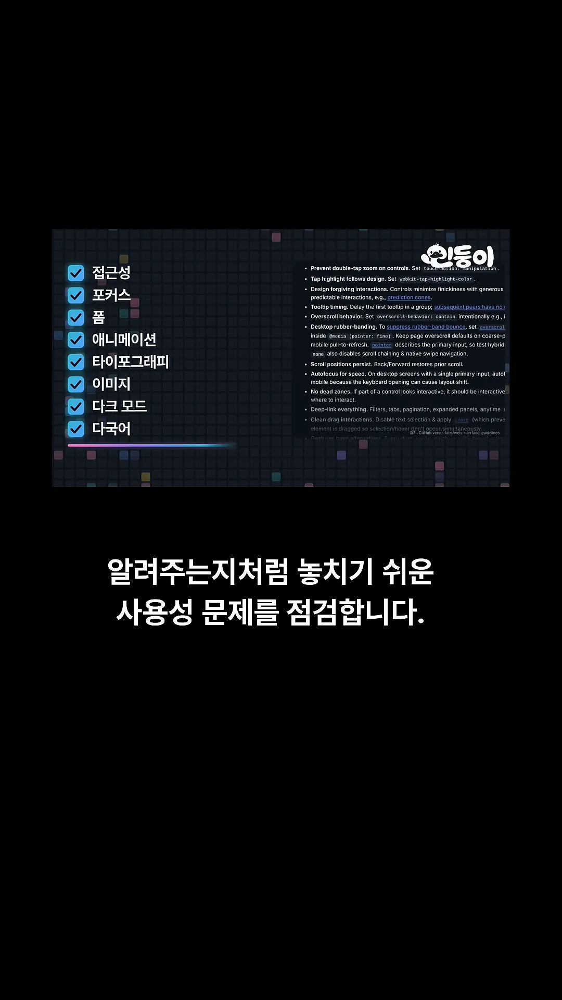
Responsively
무엇인가요 사이트 주소를 넣으면 폰·태블릿·노트북 화면을 나란히 띄워 함께 스크롤하게 해 주는 반응형 개발용 브라우저 앱이에요.
써 보면 MCP 서버를 연결하면 에이전트가 화면별 스크린샷을 직접 보고, 깨진 곳을 고친 뒤 다시 찍어 크기마다 확인해요.
주의 AGPL-3.0 라이선스예요.
소개한 영상 AI 에이전트의 디자인을 끌어올리는 깃허브… 03:18

SolidCraft
무엇인가요 Rust로 만든 무료 오픈소스 파라메트릭 CAD예요. 오토데스크 퓨전과 레이아웃·메뉴·단축키가 거의 같고, 데스크톱·브라우저·MCP를 지원해요.
써 보면 퓨전 사용자는 바로 쓸 수 있고, Codex에 MCP로 붙이자 PDF 도면 27장을 20분 남짓에 모델로 만들었어요. 용량도 약 400MB로 가벼워요.
주의 나온 지 2주 남짓한 초기 프로젝트라 곡면 각인·조립·메시 등이 아직 안 되고 버그가 많아요. 퓨전과 너무 닮아 앞날은 지켜봐야 해요.
소개한 영상 해외에서 난리 난 무료 CAD, SolidC… 00:00

ai-design-skills (landing-page-design)
무엇인가요 랜딩 페이지 하나를 질문 → 구조 → 문구 → 디자인 체계 순서로 처음부터 끝까지 설계하는 디자인 스킬이에요. Claude Code와 Codex에서 써요.
써 보면 "제안 하나·대상 하나·행동 하나"부터 정하고 글꼴·색·크기·여백을 템플릿 하나로 묶어 페이지 전체에 똑같이 적용해요. 추상적 문구 대신 장점이 보이는 문구를 쓰고 로딩·오류 화면까지 챙겨요. 다만 규칙이 엄격해 모든 사이트에 맞지는 않아요.
소개한 영상 깃허브 트렌딩 1위 AI 디자인 스킬, 무엇… 00:00
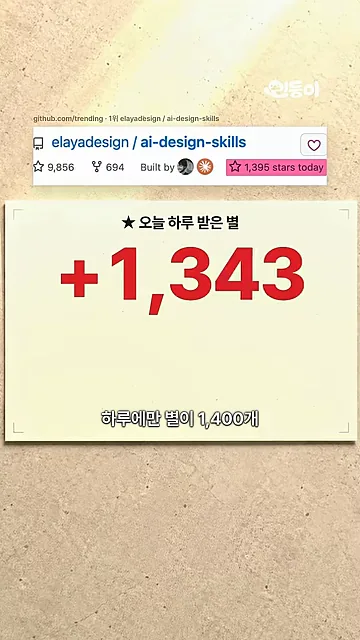
UI Skills
무엇인가요 여러 작성자의 디자인 스킬을 모은 라이브러리예요. MCP나 CLI로 연결하면 에이전트가 맞는 스킬을 검색해 가져와요.
써 보면 "UI Skills로 디자인해 줘"라고 하면 에이전트가 298개 중 맞는 스킬을 찾아 추린 뒤 그 지침대로 사이트를 만들어요.
소개한 영상 코딩 에이전트의 빈틈을 메우는 GitHub… 04:44
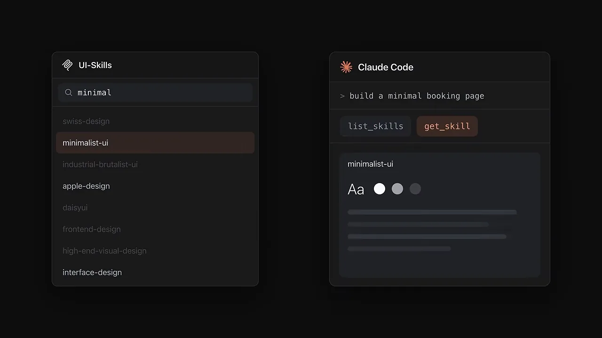
야쿠프 크레헬 스킬 (jakubkrehel/skills)
무엇인가요 디자인 엔지니어 야쿠프 크레헬(Jakub Krehel)이 블로그에 써 온 화면 디테일을 스킬 14개로 묶은 모음이에요. 화면을 새 스타일로 갈아엎지 않고, AI가 대충 넘긴 디테일만 정확한 숫자로 바로잡아요.
써 보면
- 버튼을 누르면 0.95배가 아니라 딱 0.96배로 줄어요. 카드 안의 카드는 바깥 모서리를 안쪽 반지름에 여백을 더한 값으로 깎아요. 안쪽 12px, 여백 8px이면 바깥은 20px이에요. 깊이는 1px 테두리 대신 옅은 그림자를 여러 겹 겹쳐서 내요.
better-interface는 다 만든 화면을 접근성·배치·문구·글자·색·마감 여섯 분야로 훑어 급한 것부터 줄 세운 보고서를 줘요.variant는 같은 부품을 세 가지 버전으로 만들어 실제 페이지에서 넘겨 보며 고르게 해요.
주의 Claude Code나 Codex에 "야쿠프 크레헬 스킬 설치해 줘"라고 하면 npx skills add jakubkrehel/skills가 실행돼요. 영상은 별이 9천 개를 넘겼다고 하는데, 영상 속 README 화면에는 6,717로 찍혀 있어요.
소개한 영상 0.01 디테일까지 잡는 디자인 스킬 00:00
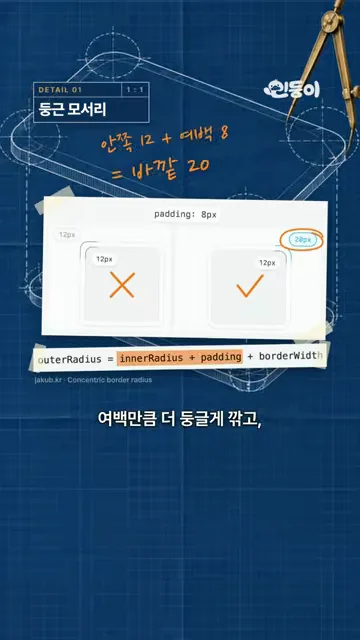
App Store Screenshots
무엇인가요 실제 앱 화면을 앱 스토어 페이지용 이미지로 바꿔 주는 스킬이에요. 내 컴퓨터에 작은 편집기 앱을 띄워요.
써 보면 스토어가 요구하는 기기별 크기를 따로 찾지 않고, 편집기에서 바로 받아 zip 하나로 올려요. 프로젝트가 남아 앱이 바뀌면 다시 고칠 수 있어요.
소개한 영상 AI 에이전트의 디자인을 끌어올리는 깃허브… 07:12
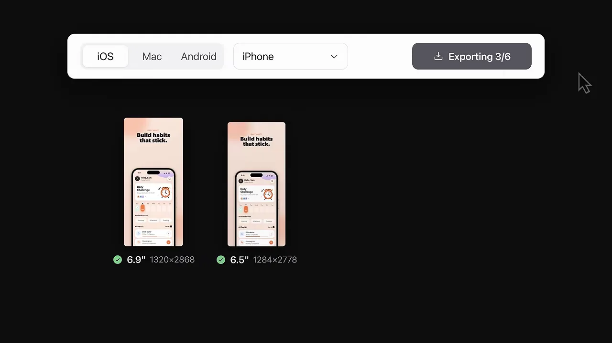
shaders
무엇인가요 React·Vue·Svelte·Solid·JS(JavaScript)에서 컴포넌트처럼 가져다 쓰는 WebGPU 빛·셰이더 효과 모음이에요. 기본 효과가 200개 넘어요.
써 보면 밋밋한 카페 홈페이지에 "매장 홈페이지 대문에 이 조명 깔아 줘" 한 문장을 넣자 부드럽게 움직이는 빛 배경으로 바뀌었어요. 색·속도는 shaders.com 편집기에서 조절해요.
소개한 영상 깃허브 100개 중 끝까지 남은 오픈소스 7개 00:41

Dembrandt
무엇인가요 페이지를 브라우저로 열어 실제로 쓰인 색·글꼴·간격 같은 스타일 값을 뽑아 DESIGN.md로 저장하는 도구예요.
써 보면 에이전트가 스크린샷을 보고 값을 짐작하지 않고 실제 숫자를 따라 만들어요. Gumroad 값을 뽑아 만든 랜딩 페이지가 분위기를 확실히 닮았고, 수정 전후 값을 비교해 실수로 바뀐 디자인도 잡아요.
소개한 영상 AI 에이전트의 디자인을 끌어올리는 깃허브… 05:52

Genjutsu
무엇인가요 사람의 디자인 감각을 담은 스킬 묶음이에요. 부분을 바꾸는 cast, 페이지 하나를 만드는 paint, 에이전트 팀을 담은 bunshin이 있어요.
써 보면 bunshin은 페이지마다 서브 에이전트를 붙여 동시에 만들고 검토·수정을 몇 바퀴 돌려요(문제 9개→3개→사소한 것만). 화려한 스타일에선 AI 티가 빠졌지만 미니멀 스타일에선 차이가 작았어요.
주의 라이선스가 표준 형식으로 잡히지 않아요(NOASSERTION). 모든 스타일에서 효과가 있진 않았어요.
소개한 영상 AI 에이전트의 디자인을 끌어올리는 깃허브… 04:22

SwiftUI Skills
무엇인가요 iOS 26의 기본 버튼·메뉴와 Liquid Glass를 Apple 방식대로 쓰게 하는 SwiftUI 스킬 두 개예요.
써 보면 흐림 효과로 흉내 낸 투명 버튼 대신 진짜 네이티브 앱에 훨씬 가까운 화면이 나와요.
소개한 영상 코딩 에이전트의 빈틈을 메우는 GitHub… 08:46
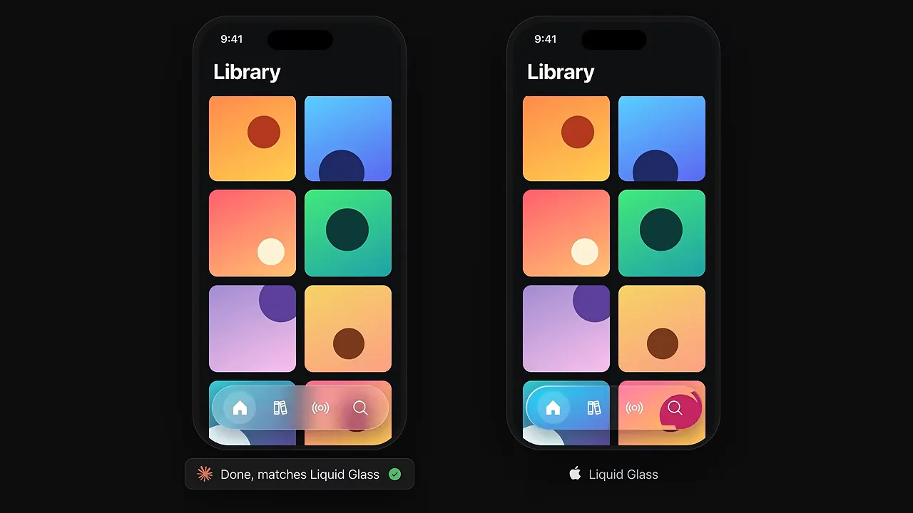
Awwwards MCP
무엇인가요 에이전트가 Awwwards 수상작 사이트를 찾아 스크린샷과 링크로 보여 주고, 고른 사이트의 디자인 정보와 움직임까지 읽어 오게 하는 MCP 서버예요.
써 보면 AI 티 나는 기본 스타일 대신 진짜 참고 사이트로 시작해요. 데모에서 여러 수상작의 부분을 골라 섞자 애니메이션이 MCP 없는 첫 버전보다 훨씬 나아졌어요.
주의 실시간 캡처를 켜려면 Playwright와 Chromium을 약 120MB 따로 설치해야 해요. 쓸 만한 도구가 기본으로 꺼져 있어 설정을 바꾸라고 해요.
소개한 영상 AI 에이전트의 디자인을 끌어올리는 깃허브… 00:00

img2threejs showcase
무엇인가요 img2threejs로 만든 Three.js 모델을 모아 둔 데모 갤러리 저장소예요.
써 보면 발표자는 이 링크를 코딩 에이전트에 주고 '읽고, 통합하고, 시험 방법을 알려 줘' 한 문장으로 설치를 끝냈어요.
주의 영상 속 주소 hoainho/img2threejs-showcase는 img2threejs/img2threejs-showcase로 옮겨졌어요. 라이선스 표기가 없어요.
소개한 영상 사진 한 장으로 Three.js 3D 모델… 01:05
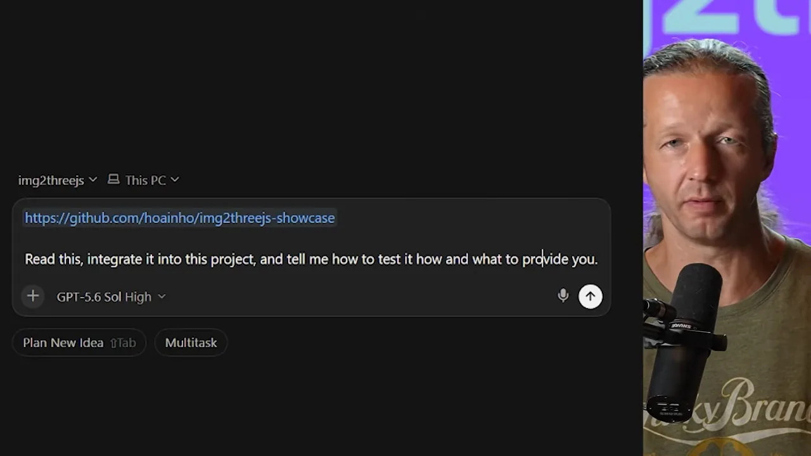
audit-design-system (Edenspiekermann Skills)
무엇인가요 디자인 에이전시 Edenspiekermann이 공개한 스킬 모음이에요. audit-design-system은 공유 컴포넌트 누락, 로컬 덮어쓰기, 연결 안 된 토큰을 찾아요.
써 보면 디자인 시스템에 연결되지 않은 요소를 심각도별로 잘 찾아 줘요. 그냥 프롬프트로 만든 감사 스킬보다 낫다는 평가예요.
주의 라이선스 표기가 없어요. Figma 플러그인에 포함되지 않아 따로 내려받아 올려야 해요.
소개한 영상 AI로 디자인하기 01:13:14
SKILL.md 화면이에요. AI로 디자인하기 1:13:14에서 보기ComfySims
무엇인가요 발표자가 만든 오픈소스예요. ComfyUI 위에서 집 청사진을 3D로 세우고, 아마존·이케아 가구 링크를 실제 크기 3D로 만들어 배치해요.
써 보면 집 안을 360도로 둘러보며 사진이나 영상으로 렌더링할 수 있어요. 에이전트가 MCP로 조작해요.
주의 노트에는 링크가 없어 검색으로 찾았어요(발표자 계정의 저장소). GPL-3.0이라 배포 시 소스 공개 의무가 있어요.
소개한 영상 인테리어 렌더링 하네스 설계 00:00

영상·모션·3D·CAD
코드로 영상과 모션 그래픽을 만들거나, 3D 모델과 CAD 도면을 다루는 도구예요. 편집 프로그램 대신 에이전트에게 말로 시키는 흐름이 많아요.
이 묶음에는 레포 20개가 있어요. 여러 영상이 소개한 레포를 앞에, 그다음은 별이 많은 순서로 놓았어요.
HyperFrames
무엇인가요 HTML로 그래픽을 쓰면 영상으로 렌더링해 주는, 에이전트용 영상 제작 도구예요.
써 보면
- Claude가 고른 순간에 맞춘 애니메이션 클립을 만들어 편집기 타임라인에 그대로 올려요. 발표자는 영상 속 애니메이션을 이렇게 만들었다고 해요. (Claude Design 실력을 올리는 25…)
- Claude가 매번 영상 코드를 처음부터 짜지 않고 이미 돌아가는 구조에서 시작해요. 발표자는 이걸로 16초 60fps 쇼릴부터 68초 이야기 영상까지 만들었어요. (Claude로 0원에 모션 그래픽 영상 만들기)
- Nate는 팟캐스트 브리프만 주고 15초 감사 애니메이션을 받았어요. 손으로 키프레임을 잡으면 한 시간은 걸릴 분량이고, 실제 유튜브 영상도 8번째 버전까지 다듬어 냈다고 해요. (Nate Herk가 보여 준 Claude C…)
- 원본 클립을 넣고 "자막이랑 타이틀 카드 붙여 줘"라고 하면 몇 분 뒤 완성본이 나와요. 렌더링 비용이 없어 월정액 콘텐츠 패키지를 팔 수 있다고 봐요. (Claude와 함께 쓸 GitHub 레포 10개)
- 같은 날씨 앱 프롬프트를 Codex에 주니 HyperFrames로 만들었지만 결과는 더 밋밋했어요. 프레임워크를 쓰려면 커넥터나 플러그인으로 연결하라고 해요. (Opus 5.5로 모션 그래픽 영상 만들기)
- "10초 제품 소개, 제품명 뒤에 기능 세 개가 차례로"처럼 장면을 말로 설명하면 AI가 움직임을 만들고 MP4로 내보내요. React면 Remotion, HTML이면 HyperFrames라고 정리해요. (개발자들이 선택한 깃허브 디자인·모션 도구…)
- 학원 홈페이지 주소와 /product-launch-video 명령만 넣었는데, 따로 편집하지 않아도 자연스러운 전환의 겨울 특강 소개 영상이 완성됐어요. 한 달 내려받기 271만 번이에요. (깃허브 100개 중 끝까지 남은 오픈소스 7개)
- 말로만 시킨 챕터 인트로("핵심 정리")와 구독·좋아요 아웃트로가 HyperFrames로 나왔고, 렌더링하면 바로 영상 파일이 돼요. (Claude로 영상 편집과 모션 그래픽 만들기)
주의 발표자는 Remotion보다 Hyperframes가 더 잘 맞았다고 해요.
소개한 영상 Claude Design 실력을 올리는 25… 12:29 · Claude로 0원에 모션 그래픽 영상 만들기 07:12 · Nate Herk가 보여 준 Claude C… 37:16 · Claude와 함께 쓸 GitHub 레포 10개 00:24 · Opus 5.5로 모션 그래픽 영상 만들기 03:40 · 개발자들이 선택한 깃허브 디자인·모션 도구… 04:44 · 깃허브 100개 중 끝까지 남은 오픈소스 7개 03:43 · Claude로 영상 편집과 모션 그래픽 만들기 03:11

Remotion
무엇인가요 React 코드로 영상을 만드는 프레임워크예요.
써 보면
- Opus 5.5가 영상을 만드는 네 길 중 "프레임워크" 경로로 소개해요. 커넥터나 플러그인으로 연결하면 모델이 처음부터 그리는 대신 Remotion으로 만들어요. (Opus 5.5로 모션 그래픽 영상 만들기)
- 순위 애니메이션이나 통계 그래프를 템플릿으로 한 번 짜 두면, 숫자와 문구만 바꿔 같은 형식의 영상을 계속 뽑아요. 매주 같은 포맷 영상에 강해요. (개발자들이 선택한 깃허브 디자인·모션 도구…)
- 코드도 언어라서 Claude가 정확하게 읽고, 고치고, 다시 렌더링할 수 있어요. 내 영상 포맷의 레이어(자막·컷·효과음·그래픽)를 글로 풀어 주면 Claude가 빠짐없이 반영해요. (Claude로 영상 편집과 모션 그래픽 만들기)
주의 Remotion 자체 라이선스예요. 개인과 소규모 회사는 무료지만 일정 규모 이상 회사는 유료 회사 라이선스가 필요해요. 자체 Remotion License예요. 개인·소규모 팀은 무료지만 일정 규모 이상 회사는 유료 라이선스가 필요해요.
소개한 영상 Opus 5.5로 모션 그래픽 영상 만들기 01:16 · 개발자들이 선택한 깃허브 디자인·모션 도구… 04:27 · Claude로 영상 편집과 모션 그래픽 만들기 01:59
FFmpeg
무엇인가요 영상·오디오를 다루는 오픈소스 도구예요. 영상에선 프레임을 이어 붙여 MP4로 내보내요.
써 보면
- 프레임을 MP4로 묶고, 끝내기 전 컨택트 시트를 뽑아 스스로 검토·재렌더링하는 루프에 써요. (Claude가 자바스크립트로 영상을 만드는 법)
- 쪼갠 프레임을 스크롤 위치에 맞춰 바꿔, 영상을 반복 재생하는 대신 사용자가 스크롤로 차를 돌려 보는 히어로를 만들었어요. (AI로 디자인하기)
- 브라우저가 프레임마다 찍은 스크린숏(16초 60fps면 960장)을 이어 붙여 MP4 한 편으로 만들어요. (Claude로 0원에 모션 그래픽 영상 만들기)
주의 GitHub 저장소는 공식 git의 미러예요. 라이선스는 'LGPL/GPL' 조합이라 표준 형식으로 잡히지 않아요. 노트에는 저장소 링크가 없어 이름으로 찾았어요. GitHub 저장소는 공식 git의 미러예요. GitHub 저장소는 공식 git 서버의 미러예요. 라이선스는 LGPL(GNU Lesser General Public License) 2.1 이상이고, 일부 구성은 GPL(GNU General Public License)이에요.
소개한 영상 Claude가 자바스크립트로 영상을 만드는 법 02:30 · AI로 디자인하기 01:48:38 · Claude로 0원에 모션 그래픽 영상 만들기 06:56
Whisper
무엇인가요 OpenAI가 공개한 무료 오픈소스 음성 인식 모델이에요.
써 보면
- 단어 단위 타임스탬프가 붙은 대본을 뽑아서, 애니메이션을 말하는 순간에 정확히 맞출 수 있어요. (Claude Design 실력을 올리는 25…)
- REA로 만든 Utter 앱이 Whisper를 맥에서 직접 돌려서 목소리가 인터넷으로 나가지 않아요. 짧은 테스트는 0.5초도 안 걸렸다고 해요(발표자 주장). (REA로 소프트웨어를 몇 분 만에 따라 만들기)
소개한 영상 Claude Design 실력을 올리는 25… 12:17 · REA로 소프트웨어를 몇 분 만에 따라 만들기 07:21

OpenMontage
무엇인가요 제작 파이프라인 12종과 도구 100개가 들어 있는 에이전트형 영상 제작 시스템이에요.
써 보면
- 주제 한 줄을 넣으면 조사·대본·내레이션·배경음악·자막·렌더·품질 검수까지 한 번에 돌려요. 발표자 팀은 내 영상을 예시로 주자 효과음이 83개에서 229개로 늘어난 판을 받았어요. (Claude로 영상 편집과 모션 그래픽 만들기)
- 마음에 드는 릴스를 주면 구성을 분석해 베끼지 않은 기획안부터 보여 주고, 대본·장면은 내가 승인해야 넘어가며, 돈 드는 기능은 예상 비용부터 보여 줘요. (클로드 코드 고수들이 먼저 설치하는 깃허브…)
주의 AGPL-3.0이에요.
소개한 영상 Claude로 영상 편집과 모션 그래픽 만들기 03:11 · 클로드 코드 고수들이 먼저 설치하는 깃허브… 01:07

Brag
무엇인가요 프로젝트를 읽고 앱의 디자인과 문구로 출시 영상을 계획해 만들어 주는 도구예요. HyperFrames를 쓰는 full 모드와 자유도가 높은 slim 모드가 있어요.
써 보면
- 20초 안팎의 MP4와 커버 이미지, 함께 올릴 짧은 글이 한 번에 나와요. slim 모드는 훅으로 시작해 full 모드보다 훨씬 나았어요(큰 모델과 쓸 때). (AI 에이전트의 디자인을 끌어올리는 깃허브…)
- 명령 하나로 음악과 공유 문구, 포스터까지 챙겨 줘요. 이번 실험은 32분, API 요금 5.5달러, 화면 확인 19번이었어요. (코드만으로 영상을 만드는 Claude Cod…)
주의 영상이 실제 앱 녹화가 아닐 수 있어요. 없던 클릭을 넣기도 하니 영상 속 기능이 앱에 진짜 있는지 확인해야 해요.
소개한 영상 AI 에이전트의 디자인을 끌어올리는 깃허브… 08:14 · 코드만으로 영상을 만드는 Claude Cod… 04:25

어썸 오퍼스 5.5 비디오스
무엇인가요 Claude Opus 5.5로 만든 모션 그래픽 영상과 그때 쓴 프롬프트를 함께 모아 둔 자료 모음이에요.
써 보면
- '멋있게' 대신 마음에 드는 예시를 골라 그 프롬프트에서 출발할 수 있어요. 결과를 보고 지시문을 거꾸로 배울 수 있어요. (2026년 개발자들이 고른 디자인 스킬·자료…)
- 프롬프트 700개 이상, 그중 400개 이상은 재현 결과까지 볼 수 있어서 마음에 드는 작품의 프롬프트를 가져와 내 아이디어로 바꿔 쓰면 돼요. (개발자들이 선택한 깃허브 디자인·모션 도구…)
주의 스킬이 아니라 참고 자료 모음이에요.
소개한 영상 2026년 개발자들이 고른 디자인 스킬·자료… 01:37 · 개발자들이 선택한 깃허브 디자인·모션 도구… 05:32
animate
무엇인가요 발표자가 공개한 Claude Code 스킬이에요. cut paper, crosshatch, riso 등 일곱 가지 기본 스타일로 자바스크립트 모션 영상을 만들고, 레퍼런스로 나만의 스타일도 만들어요.
써 보면
- 질문에 답하고 스토리보드를 승인하는 것만으로 같은 품질의 영상을 반복해 만들어요. Playwright·FFmpeg 검토 루프가 자동으로 돌아요. (Claude가 자바스크립트로 영상을 만드는 법)
- 종이를 오려 붙인 그림책 스타일 영상을 만들었고, 문장이 사실인지 웹 검색으로 확인까지 했어요. (코드만으로 영상을 만드는 Claude Cod…)
주의 아직 작업 중인 스킬이라고 해요.
소개한 영상 Claude가 자바스크립트로 영상을 만드는 법 11:43 · 코드만으로 영상을 만드는 Claude Cod… 01:34
Playwright
무엇인가요 브라우저 자동화·테스트 프레임워크예요. 영상에선 헤드리스 브라우저로 프레임을 그리는 데 써요.
써 보면 Claude가 영상을 직접 '보지' 못해도, Playwright가 그린 프레임 이미지를 하나씩 보며 잘못된 곳을 찾아 고쳐요.
주의 노트에는 저장소 링크가 없어 이름으로 찾았어요.
소개한 영상 Claude가 자바스크립트로 영상을 만드는 법 02:30
GSAP
무엇인가요 스크롤에 따라 움직이는 섹션이나 드러나는 글자를 잘 처리하는 JavaScript 애니메이션 라이브러리예요.
써 보면 프롬프트에 'GSAP을 써라' 한 줄만 넣어도 모션 품질이 달라진다는 요령이에요.
주의 GitHub에 표준 라이선스 표기가 없어요. GSAP(GreenSock Animation Platform) 자체 무료 라이선스 조건을 확인하세요.
소개한 영상 Claude Design 실력을 올리는 25… 10:53
faster-whisper
무엇인가요 CTranslate2로 Whisper 음성 인식을 빠르게 돌리는 라이브러리예요. animate 스킬의 의존성이에요.
써 보면 내레이션에서 단어 타임스탬프를 뽑아 단어에 맞춰 장면을 바꾸게 해요.
소개한 영상 Claude가 자바스크립트로 영상을 만드는 법 13:07
ACE-Step 1.5
무엇인가요 노트북에서 돌리는 무료 오픈소스 음악 생성 모델이에요. 가사와 스타일을 주면 노래를 만들어요.
써 보면 Suno 같은 유료 구독 없이 RAM(Random Access Memory) 16GB MacBook Air에서 노래를 만들었어요. Claude가 가사를 쓰고 12개 버전을 뽑아 하나씩 확인했어요.
주의 음악 모델이라 디스크를 꽤 차지해요. 설치 전에 여유 공간을 확인하라고 해요.
소개한 영상 Claude로 0원에 모션 그래픽 영상 만들기 08:44
lemo-opuscar
무엇인가요 코드로 만드는 영상 스타일 59가지를 모은 Claude Code용 라이브러리예요. 스타일마다 데모 영상, 연출 가이드, 제작 기법 문서가 있어요.
써 보면 모델이 스타일을 골라 빛 입자 일색이 아닌 다른 그림을 내요. 이번 실험에선 동판화 스타일을 골랐어요.
소개한 영상 코드만으로 영상을 만드는 Claude Cod… 01:34

mg-styles-15
무엇인가요 모션그래픽 스타일 15가지를 정리한 프로젝트예요. 스타일마다 프롬프트와 소스 코드가 공개돼 있어요.
써 보면 주제만 바꿔 같은 스타일로 만들 수 있어요. 이번엔 '형태 변형'을 골랐고 배경음악까지 코드로 짰어요.
소개한 영상 코드만으로 영상을 만드는 Claude Cod… 01:34

ClaudeAnimationBase
무엇인가요 붓으로 그린 듯한 손그림 애니메이션의 기본 틀이에요. p5.js·p5.brush, 감정 표현 31가지의 기본 캐릭터, 연출 가이드가 들어 있어요.
써 보면 수채화 질감이 다른 작품과 확실히 달랐어요. 다만 GPU(Graphics Processing Unit) 없는 환경에선 1시간 49분이 걸려 다른 작품의 세 배쯤이었어요.
주의 기본 캐릭터가 Claude Code 마스코트라 발표자는 다른 캐릭터로 바꿔 넣었어요.
소개한 영상 코드만으로 영상을 만드는 Claude Cod… 04:25

ANIMATION_GUIDE.md 상자예요. 코드만으로 영상을 만드는 Claude Cod… 05:28에서 보기ElevenLabs MCP
무엇인가요 ElevenLabs 공식 MCP 서버예요. animate 스킬이 내레이션용 커넥터로 쓸지 물어봐요.
써 보면 Claude가 ElevenLabs로 내레이션을 만들어 영상에 얹어요. 발표자는 내레이션은 ElevenLabs가 가장 좋다고 해요.
주의 저장소가 보관(archived) 상태예요. ElevenLabs는 유료 서비스예요.
소개한 영상 Claude가 자바스크립트로 영상을 만드는 법 13:07
motion-graphics
무엇인가요 설명 영상, 효과음 등 모션그래픽 스킬 6개를 묶은 Claude Code·Codex용 프로젝트예요.
써 보면 원테이크 설명 스킬로 수소 원자 하나가 빅뱅에서 사람 몸까지 가는 여행을 끊김 없이 그렸어요.
주의 라이선스가 표준 SPDX로 잡히지 않아요. 쓰기 전에 LICENSE를 확인해요.
소개한 영상 코드만으로 영상을 만드는 Claude Cod… 06:21

bang-motion
무엇인가요 브라우저 모션그래픽 스킬이에요. 결과물이 HTML 파일 하나로 나와요.
써 보면 '슬라이드 말고 영상처럼' 규칙을 모델이 스스로 점검해요. 문장이 한 글자씩 써지는 타이포그래피가 돋보였어요.
주의 설명서가 인도네시아어라 Claude도 인도네시아어로 생각하며 작업했어요.
소개한 영상 코드만으로 영상을 만드는 Claude Cod… 06:21
claude-motion-design
무엇인가요 HTML·Playwright·ffmpeg로 코드만으로 모션 디자인 영상을 만드는 Claude Code 스킬이에요. 만든 사람이 자기 서비스 출시 영상을 실제로 만든 스킬이에요.
써 보면 영상 전체를 시간 함수 하나로 그리고 박자에 맞춰 컷을 넣은 뒤, 비평 에이전트 심사를 받아요. 화면을 59번 확인해 다른 작품(17~30번)보다 훨씬 꼼꼼했어요.
소개한 영상 코드만으로 영상을 만드는 Claude Cod… 06:21

snapcn
무엇인가요 shadcn CLI로 설치하는 Remotion 비디오 컴포넌트 모음이에요. 텍스트 등장, 기기 프레임, 터미널 세션 같은 장면을 줘요.
써 보면 AI 채팅이나 터미널 세션이 돌아가는 제품 데모 영상을 코드 몇 줄로 만들 수 있다고 해요.
주의 영상 슬라이드 표기는 'Snap CN'이에요.
소개한 영상 내 컴퓨터에서 돌아가는 AI 에이전트 오픈소… 08:08
지식 관리·세컨드 브레인
노트, 문서, 녹음을 모아 AI가 찾아 쓰게 하는 도구예요. 옵시디언과 함께 쓰는 것, 팀 위키, 웹 페이지 스크랩 도구가 여기 있어요.
이 묶음에는 레포 13개가 있어요. 여러 영상이 소개한 레포를 앞에, 그다음은 별이 많은 순서로 놓았어요.
Obsidian Web Clipper
무엇인가요 웹 글을 마크다운으로 Obsidian 볼트에 저장하는 공식 브라우저 확장이에요.
써 보면
- 저장 폴더를 raw-sources로 지정해 두면 좋은 글을 버튼 하나로 원본 폴더에 넣고, Claude가 그걸 읽어 위키를 갱신해요. (Claude로 AI 세컨드 브레인 만들기)
- 브라이언은 'LLM Wiki — YouTube' 템플릿으로 영상 속성과 전체 자막을 raw 폴더에 저장한 뒤 인제스트 스킬로 위키에 연결해요. (LLM 위키와 RAG는 무엇이 다를까요)
주의 노트에는 저장소 링크가 없어 이름으로 찾았어요. 공식 소개 페이지에는 유튜브 자막 가져오기가 따로 적혀 있지 않아 템플릿 설정을 직접 확인해야 해요.
소개한 영상 Claude로 AI 세컨드 브레인 만들기 07:59 · LLM 위키와 RAG는 무엇이 다를까요 30:54

MinerU
무엇인가요 PDF·오피스 문서를 LLM이 읽기 좋은 Markdown·JSON(JavaScript Object Notation)으로 바꾸는 오픈소스 문서 OCR 도구예요.
써 보면 MinerU 2.5가 Mistral·Gemini 같은 상용 모델을 제치고 문서 OCR 1위라고 소개돼요. 무료가 유료를 이기는 몇 안 되는 분야래요.
주의 Apache 2.0에 조건을 붙인 자체 라이선스예요. MAU(Monthly Active Users) 1억 명 또는 월 매출 2천만 달러를 넘으면 별도 상업 라이선스가 필요하고, 서비스에 MinerU 사용을 밝혀야 해요.
소개한 영상 분야별 AI 최강 정리 (2026년 7월 기준) 01:10

Docling
무엇인가요 IBM(International Business Machines)이 만든 무료 문서 파서예요. PDF, 스캔본, 사진을 AI가 읽을 수 있는 깨끗한 데이터로 바꿔요.
써 보면 송장을 읽어 QuickBooks에 자동 입력하면 매주 몇 시간씩 드는 입력 작업이 사라지고 장부 마감이 빨라진다고 해요.
소개한 영상 무료 깃허브 저장소 8개로 만드는 AI 대행… 12:57

Screenpipe
무엇인가요 컴퓨터 화면과 소리를 계속 기록해 검색할 수 있게 만드는 앱이에요. MCP로 다른 AI 앱과 연결돼요.
써 보면 브라이언은 화면과 음성을 24시간 기록해 행동으로 남지 않은 "현실"까지 남겨요. 로컬 모델이 30분마다 요약을 만들고 AI 회고에서 꺼내 써요.
주의 저장소가 mediar-ai/screenpipe에서 screenpipe/screenpipe로 옮겨졌어요. 라이선스는 Screenpipe 상용 라이선스예요.
소개한 영상 LLM 위키와 RAG는 무엇이 다를까요 28:12
GitDiagram
무엇인가요 GitHub 저장소 구조를 다이어그램으로 그려 주는 오픈소스 서비스예요. 주소의 github.com을 gitdiagram.com으로 바꾸면 돼요.
써 보면 파일 세 개짜리 계산기 저장소도 누가 누구를 부르는지 화살표로 보여 줘서, 코드를 열기 전에 어느 파일부터 읽을지 정할 수 있어요.
주의 비공개 저장소는 GitHub 토큰을 따로 넣어야 해요.
소개한 영상 GitHub 주소 한 단어로 저장소 파악하기 00:03

Gitingest
무엇인가요 저장소 전체를 요약·폴더 구조·모든 파일 내용이 이어진 텍스트 한 덩어리로 묶어 주는 오픈소스 서비스예요. 주소의 hub를 ingest로 바꾸면 돼요.
써 보면 파일을 하나씩 복사할 필요 없이 Copy all 한 번으로 Claude 채팅에 붙이고 "이 저장소 구조 설명해 줘"라고 물을 수 있어요.
주의 비공개 저장소는 GitHub 토큰을 따로 넣어야 해요.
소개한 영상 GitHub 주소 한 단어로 저장소 파악하기 00:12
Omi
무엇인가요 목걸이형 AI 녹음기 Omi의 오픈소스 앱·펌웨어 저장소예요. 대화를 듣고 글로 바꿔 요약해요.
써 보면 브라이언은 24시간 녹음하다가 2분 침묵 뒤 목소리가 들리면 그 구간을 이벤트 하나로 잘라 요약하고, 원본 자막과 함께 옵시디언에 저장해요.
주의 노트에 링크가 없어 기기 이름으로 공식 저장소를 찾았어요.
소개한 영상 LLM 위키와 RAG는 무엇이 다를까요 22:32
Obsidian Git
무엇인가요 Obsidian 볼트를 Git으로 자동 커밋·동기화하는 무료 커뮤니티 플러그인이에요.
써 보면 15분마다 비공개 GitHub 저장소에 자동 커밋·푸시해 모든 기기에서 백업과 버전 기록이 생겨요. AI가 위키를 잘못 고쳐도 되돌릴 수 있어요.
소개한 영상 Claude로 AI 세컨드 브레인 만들기 11:18
SilverBullet
무엇인가요 [[메모 이름]]으로 메모끼리 잇는 마크다운·Lua 기반 개인 위키예요.
써 보면 링크를 건 메모가 상대 메모 아래 Linked Mentions에 모이고, 여러 메모에 흩어진 할 일을 쿼리 한 줄로 한 페이지에 모아요.
주의 노트에는 GitHub 링크가 없어 저장소를 찾아 연결했어요.
소개한 영상 제2의 두뇌부터 팀 위키까지, 무료 오픈소스… 00:33

Basic Memory
무엇인가요 AI가 기억할 내용을 내 컴퓨터의 마크다운 파일로 남기는 도구예요. MCP로 Claude, Codex, Cursor가 같은 메모를 읽고 써요.
써 보면 AI를 바꿔도 맥락이 남아요. 사람이 파일을 고치면 AI도 바로 알고, '어제 하던 거 이어서 하자'고 하면 관련 메모를 찾아 이어 가요.
주의 AGPL-3.0이에요.
소개한 영상 제2의 두뇌부터 팀 위키까지, 무료 오픈소스… 00:00
Claudemy
무엇인가요 주제만 주면 웹을 검색해 출처가 붙은 2분짜리 오디오 강의를 만드는 Claude Code 스킬이에요.
써 보면 출퇴근길에 듣는 나만의 강사처럼 쓸 수 있고, 정보마다 출처를 밝혀 환각을 줄였다고 해요.
주의 영상 슬라이드 표기는 'Claudomy'예요.
소개한 영상 내 컴퓨터에서 돌아가는 AI 에이전트 오픈소… 03:58
CMDS LLM Wiki
무엇인가요 구요한 대표가 공개한 LLM 위키 볼트 템플릿이에요. 카파시의 3층 패턴 위에 Claude Code·Codex 하네스와 온보딩 스킬을 얹었어요.
써 보면 읽은 글을 개념 카드로 '컴파일'해서, 한 번 묻고 답한 내용까지 위키에 쌓여 지식이 복리처럼 늘어난다고 해요. 받아서 '온보딩'이라고 하면 목적부터 물어봐요.
주의 라이선스가 명시돼 있지 않아요. 데이터는 비공개이고 볼트 설계만 공개됐어요.
소개한 영상 옵시디언 노트 1만 개와 녹음 1,400개를… 16:20
AKM Index (akm-eval)
무엇인가요 AI 에이전트와 함께 굴리는 지식관리 수준을 100점 만점으로 재는 자기 평가 스킬이에요. 프롬프트·컨텍스트·하네스·루프·이식성 다섯 영역을 봐요.
써 보면 설치하면 내 컴퓨터에서 한 번 세션 기록을 훑어 점수를 매기고, 결과도 로컬에만 남아요. 여러 에이전트를 쓰는 사람도 한 번에 진단할 수 있어요.
주의 노트에는 저장소 링크가 없고 화면에만 나와요. API로 확인해 연결했어요.
소개한 영상 옵시디언 노트 1만 개와 녹음 1,400개를… 44:20
보안·코드 품질
AI가 짠 코드의 구멍을 찾거나, 품질을 검사하고 검증하는 도구예요. 보안 감사 스킬, 코드 리뷰 봇, 수학적 검증 도구가 여기 있어요.
이 묶음에는 레포 18개가 있어요. 여러 영상이 소개한 레포를 앞에, 그다음은 별이 많은 순서로 놓았어요.
Security Audit Skill
무엇인가요 Cloudflare가 공개한 스킬로, Claude Code를 단계별 보안 감사 도구로 바꿔 줘요. 발견마다 확인됨·검증 필요·기각으로 나눠 기록해요.
써 보면
- AI로 만든 앱에서 노출된 API 키나 열린 DB를 먼저 찾아 쉬운 보고서로 정리해요. 1회 감사 1,500달러, 원가는 Claude 사용료 20~60달러라고 해요(발표자 주장). (무료 깃허브 레포 8개로 만드는 서비스 사업)
- 발표자의 6개월 된 서비스에서 후보 26개 중 21개가 진짜 취약점이었어요. 고친 뒤 다시 감사하자 작은 버그 2개만 남았어요. (보안 감사 스킬로 진짜 버그 21개를 찾은 과정)
- 여러 에이전트가 구역을 나눠 취약점을 찾아요. 의심되는 걸 찾으면 찾은 에이전트가 아닌 다른 에이전트가 정말 공격 가능한지 반박하며 다시 검증해요. 코드를 직접 돌려야 할 때는 인터넷이 막힌 격리 공간에서만 돌려요. 영상 시점 한 주에 별 1만 6천 개를 받아 트렌딩 1위였어요. (이번 주 깃허브 트렌딩 결산 TOP 10)
주의 서면 허락 없이 운영 중인 앱을 테스트하지 말라고 해요.
소개한 영상 무료 깃허브 레포 8개로 만드는 서비스 사업 03:16 · 보안 감사 스킬로 진짜 버그 21개를 찾은 과정 01:04 · 이번 주 깃허브 트렌딩 결산 TOP 10 06:14


Karpathy Skills
무엇인가요 Karpathy가 지적한 AI 코딩 문제를 규칙으로 옮긴 CLAUDE.md 한 장이에요. 코딩 전에 생각하기, 단순함 먼저, 수술처럼 고치기, 목표 중심 실행을 담았어요.
써 보면
- AI가 추측하지 않고 선택지를 드러내며, 필요한 줄만 바꾸고 "재현 테스트 → 통과 → 다른 것 안 깨졌는지"처럼 확인 가능한 목표를 향해 반복하게 해요. 다만 긴 세션에서는 지시가 무시될 수 있어요. (쓰레기 코드 없애는 법)
- 열어 보면 파일 한 장이 전부예요. 짜기 전에 먼저 묻고, 단순하게 짜고, 요청한 곳만 고치고, 끝났는지 확인할 기준부터 정하라는 원칙 네 가지예요. Claude Code 플러그인으로 바로 깔 수 있고 Cursor용 규칙도 들어 있어요. (이번 주 깃허브 트렌딩 결산 TOP 10)
주의 설치 명령에는 forrestchang/andrej-karpathy-skills로 적혀 있는데, 지금은 multica-ai로 옮겨져 리다이렉트돼요.
소개한 영상 쓰레기 코드 없애는 법 03:05 · 이번 주 깃허브 트렌딩 결산 TOP 10 04:17
CLAUDE.md·CURSOR.md·EXAMPLES.md와 215.4k stars 쓰레기 코드 없애는 법 03:05에서 보기SkillSpector
무엇인가요 엔비디아가 낸, 남이 만든 스킬을 설치하기 전에 검사해 위험도를 매기는 보안 스캐너예요.
써 보면
- 'HIGH·CRITICAL' 등급이면 '설치 금지'까지 판정해요. 스킬 100개 중 26개꼴로 취약점이 나왔다는 연구를 근거로 설치 전 검사를 권해요. (AI 코딩 도구 분야별 1위 14개, 대안과…)
- 스킬을 설치하기 전에 0~100점 위험 점수를 매겨 줘요. 엔비디아가 스킬 3만 1천여 개를 보니 26%에 취약점, 5%에 악의 의심이 있었대요. (주식 분석 AI가 깃허브 2위? 지금 뜨는…)
주의 노트에는 링크가 없어 저장소 이름으로 찾았어요.
소개한 영상 AI 코딩 도구 분야별 1위 14개, 대안과… 07:40 · 주식 분석 AI가 깃허브 2위? 지금 뜨는… 04:26

anti-slop
무엇인가요 에이전트가 자주 쓰는 나쁜 TypeScript·JavaScript 패턴을 잡는 Oxlint 규칙 모음이에요.
써 보면
- 스킬로 설치해 두면 작업마다 코드를 검사하고 고쳐요. 앱을 느리게 하는 불필요한 작업도 잡아내요. (코딩 에이전트의 빈틈을 메우는 GitHub…)
- 마크다운 지시와 달리 lint가 실패하면 통과할 때까지 고치게 돼서 모델이 무시할 수 없어요. npx skills add dmmulroy/anti-slop --skill install-anti-slop로 설치해요. (쓰레기 코드 없애는 법)
주의 작성자 취향이 담긴 규칙도 섞여 있어요. 규칙은 작성자 취향이라 팀에 맞게 고쳐 쓰는 걸 전제로 해요.
소개한 영상 코딩 에이전트의 빈틈을 메우는 GitHub… 11:43 · 쓰레기 코드 없애는 법 04:05
Ghidra
무엇인가요 NSA(National Security Agency)가 만들어 무료로 공개한 소프트웨어 리버스 엔지니어링 프레임워크예요.
써 보면 원래는 배우기 어려운 전문가 도구지만, REA로 연결하면 에이전트가 대신 돌리고 결과를 설명해 줘요.
소개한 영상 REA로 앱을 뜯어보고 내 버전 만들기 04:28
Anthropic Cybersecurity Skills (비공식)
무엇인가요 보안 업무 절차 스킬 800여 개를 모은 커뮤니티 스킬 모음이에요.
써 보면 별 3만 4천으로 보안 분야 별 1위예요. 보안 업무 절차를 스킬로 꺼내 쓸 수 있어요.
주의 이름에 Anthropic이 들어가지만 Anthropic 공식이 아니에요.
소개한 영상 AI 코딩 도구 분야별 1위 14개, 대안과… 07:52
Playwright CLI
무엇인가요 Microsoft가 만든 명령줄 도구로, 진짜 브라우저를 열어 앱을 클릭해 보고 다시 돌릴 수 있는 테스트를 써요.
써 보면 Claude가 "잘 돼요"라고 말만 하지 않고 실제로 눌러 보게 해요. MCP가 아니라 CLI라서 페이지 전체를 컨텍스트에 쏟지 않아 토큰도 덜 들고 빨라요.
소개한 영상 Claude와 함께 쓸 GitHub 레포 10개 07:34
PR-Agent
무엇인가요 GitHub 저장소에 붙여 두면 팀 PR마다 자동으로 리뷰 댓글을 다는 오픈소스 PR 리뷰어예요.
써 보면 PR 댓글에 /review만 써도 30초쯤 뒤 문제될 곳과 빠진 테스트를 달아 줘요. 별 1만 3천으로 코드 리뷰 분야 1위예요.
주의 저장소가 The-PR-Agent/pr-agent로 옮겨졌어요.
소개한 영상 AI 코딩 도구 분야별 1위 14개, 대안과… 02:56

garak
무엇인가요 NVIDIA(GPU 회사 이름)가 만든 LLM 취약점 스캐너예요. 탈옥·프롬프트 인젝션·데이터 유출·환각·유해 출력을 자동으로 찔러 봐요.
써 보면 탈옥 시도를 자동으로 돌려서 내 AI 서비스가 어떤 프롬프트에 뚫리는지 미리 검증할 수 있어요.
소개한 영상 에이전트에 권한을 다 열어 두면 어떻게 뚫리나요 18:10
claude-code-security-review
무엇인가요 Anthropic이 만든 보안 리뷰 GitHub Action이에요. 풀 리퀘스트의 바뀐 부분을 읽고 사용자 입력이 위험한 동작까지 가는지 따라가요.
써 보면 풀 리퀘스트마다 바뀐 줄에 심각도와 함께 보안 댓글을 달아요. 발표자는 전체 감사는 Cloudflare, PR마다 점검은 이쪽을 쓰라고 해요.
소개한 영상 보안 감사 스킬로 진짜 버그 21개를 찾은 과정 05:32

nono
무엇인가요 데몬이나 VM(Virtual Machine) 없이 Linux·macOS 커널 수준에서 프로그램의 접근 권한만 통제하는 에이전트 런타임 보안 도구예요.
써 보면 무거운 VM 대신 권한만 검사하는 얇은 막이라 지연이 거의 없이 에이전트를 가둘 수 있다고 해요(발표자 주장).
주의 영상 슬라이드 표기는 'No no'예요.
소개한 영상 내 컴퓨터에서 돌아가는 AI 에이전트 오픈소… 06:02

PyRIT
무엇인가요 Microsoft가 만든 생성형 AI 위험 식별용 오픈소스 프레임워크(Python Risk Identification Tool)예요.
써 보면 생성형 AI 시스템에 여러 공격을 넣어 보는 일을 대신해 줘서, 서비스를 내놓기 전에 위험을 미리 찾아낼 수 있어요. (README 기준)
주의 영상 자막에는 "파일"로 받아적혀 있어서 노트가 PyRIT로 추정한 거예요.
소개한 영상 에이전트에 권한을 다 열어 두면 어떻게 뚫리나요 18:10
Reticle
무엇인가요 에이전트가 "끝났다"고 한 뒤 앱을 브라우저에서 직접 써 보며 확인하게 하는 검증 도구예요.
써 보면 결제 버튼, 주문 저장처럼 화면 뒤에서 깨진 기능을 됐다·안 됐다·판단 불가로 판정하고, 실패하면 이유를 알려 줘 에이전트가 고치게 해요.
주의 패키지마다 라이선스가 달라요. SDK(Software Development Kit)는 앱에 넣을 수 있지만 서버와 엔터프라이즈 기능은 보호돼 있어요.
소개한 영상 코딩 에이전트의 빈틈을 메우는 GitHub… 01:37

Caliper
무엇인가요 스킬·MCP·지침을 켠 상태와 끈 상태로 에이전트를 여러 번 돌려 비교하는 평가 도구예요. grill과 evaluate 스킬이 들어 있어요.
써 보면 어떤 일에서 스킬이 믿을 만한지, 늘어난 토큰만큼 값어치가 있는지 보고서로 알려 줘요.
소개한 영상 코딩 에이전트의 빈틈을 메우는 GitHub… 10:07

oss-verify-proofs (Theorem)
무엇인가요 Anthropic과 Theorem이 OSS-Fuzz 라이브러리를 컴파일된 RISC-V 바이너리 수준에서 형식 검증한 증명을 공개한 저장소예요.
써 보면 123개 오픈소스 라이브러리를 분석해 고칠 필요 없다고 증명한 25개 라이브러리 60개 지점을 공개했다고 소개해요(영상 수치). 기계어 수준이라 언어에 덜 묶여요.
주의 도구라기보다 증명 결과 모음이에요. 원문에서 239는 버그 수가 아니라 충돌 없음을 증명한 진입점 수이고, 저장소에는 지금 26개 라이브러리·61개 진입점이 있어요.
소개한 영상 바이브 코딩이 망가질 때, 수학 검증 도구로… 02:16

agent-formal-verify
무엇인가요 코딩 에이전트에서 TLA(Temporal Logic of Actions)+ 모델 검사와 Lean 증명을 쓰게 해 주는 스킬이에요. 영상은 Codex용으로 소개해요.
써 보면 테스트로는 다 못 덮는 동시성·취소·재시작 같은 사건 순서에서 불변식이 지켜지는지 확인해 회귀 버그를 줄여요. 대신 느려지니 복잡한 작업에만 쓰라고 해요.
주의 GPL-3.0이에요.
소개한 영상 바이브 코딩이 망가질 때, 수학 검증 도구로… 04:25
proof-skills
무엇인가요 Claude Code에서 TLA+와 Lean 4로 형식 검증을 돌려 "어떤 순서로 일이 일어나도 이 규칙은 깨지지 않는다"를 증명하게 하는 스킬 묶음이에요.
써 보면 개발사 버그 사례 5개 실험에서 검증 시간은 약 2.4배, 토큰은 약 2.2배 늘었지만 검증 정도는 54%에서 98%로 올랐어요. 그래서 동시성처럼 복잡한 작업에만 켜도록 AGENTS.md에 규칙을 넣으라고 해요.
주의 README에는 비용이 "시간·토큰 모두 약 2배"로 적혀 있고, 54%·98%는 채점 항목 통과율 평균이에요.
소개한 영상 바이브 코딩이 망가질 때, 수학 검증 도구로… 04:25
pr-triage (kevmoo)
무엇인가요 Kevin Moore의 Dart 스크립트 저장소예요. 안의 pr-triage 스킬이 PR 리뷰 코멘트, 머지 충돌, 실패한 CI(Continuous Integration)를 모아 처리 계획을 내놓아요.
써 보면 Ivanna는 자기 코드 리뷰 스킬과 이 스킬을 두 에이전트에게 나눠 맡기고 서로의 보고서를 검토하게 하는데, 결과가 아주 좋다고 해요.
주의 저장소 전체가 아니라 skills/pr-triage 폴더예요.
소개한 영상 플러터 개발자의 AI 워크플로우 05:48
셀프 호스팅·돈 버는 서비스
유료 서비스를 대신할 오픈소스를 내 서버에 올려 쓰거나, 고객에게 서비스로 파는 데 쓰는 레포예요. 라이선스가 '남에게 서비스로 제공'을 막는 경우가 있어서 주의 표시를 꼭 보세요.
이 묶음에는 레포 11개가 있어요. 여러 영상이 소개한 레포를 앞에, 그다음은 별이 많은 순서로 놓았어요.
VoiceStudio
무엇인가요 ElevenLabs를 대신하는 무료 로컬 음성 도구예요. 목소리를 복제하고 영상을 646개 언어로 더빙할 수 있어요.
써 보면
- 크리에이터 영상을 본인 목소리로 스페인어 더빙해 주는 서비스를 셋업 1,000달러에 월 750달러로 팔 수 있다고 해요(발표자 주장). 로컬에서 돌려 원가는 거의 0이에요. (무료 깃허브 레포 8개로 만드는 서비스 사업)
- 병원 안내 음성처럼 처음 한 번만 녹음해 두면 그다음엔 글만 바꿔 넣으면 돼요. 같은 목소리로 646개 언어 더빙을 무료로 할 수 있다고 해요. (깃허브 100개 중 끝까지 남은 오픈소스 7개)
- 내 목소리나 사내 기밀 문서가 외부 서버로 나가지 않은 채 음성 복제·더빙을 할 수 있다고 해요. (내 컴퓨터에서 돌아가는 AI 에이전트 오픈소…)
주의 AGPL-3.0 라이선스예요. 목소리 복제는 서면 동의를 받은 뒤에만 하라고 해요. AGPL-3.0이라 고쳐서 서비스로 올리면 전체 소스를 공개해야 해요. 영상 슬라이드 표기는 'VOS Studio'예요. AGPL-3.0이라 수정해서 서비스로 내놓으면 소스를 공개해야 해요.
소개한 영상 무료 깃허브 레포 8개로 만드는 서비스 사업 00:34 · 깃허브 100개 중 끝까지 남은 오픈소스 7개 04:37 · 내 컴퓨터에서 돌아가는 AI 에이전트 오픈소… 03:58

Postiz
무엇인가요 Buffer나 Hootsuite 같은 SNS(Social Networking Service) 예약 게시 도구의 오픈소스판이에요. 인스타그램, 페이스북, 링크드인을 달력 하나에서 관리해요.
써 보면
- Claude가 손님 말투로 쓴 게시물을 예약해 두면 담당자 없이도 매주 피드가 살아 있어요. 서버 하나에 모든 손님을 올려 월 10달러쯤이라고 해요. (무료 깃허브 저장소 8개로 만드는 AI 대행…)
- 에이전트에게 '플랫폼별로 써서 예약해 줘'라고 맡길 수 있어요. 직접 설치하면 채널·글 수 무제한 무료예요. (주식 분석 AI가 깃허브 2위? 지금 뜨는…)
주의 AGPL-3.0 라이선스예요. AGPL-3.0이에요. SNS마다 개발자 앱 승인이 몇 주 걸릴 수 있고, 유료 클라우드($29/월부터)도 있어요.
소개한 영상 무료 깃허브 저장소 8개로 만드는 AI 대행… 05:07 · 주식 분석 AI가 깃허브 2위? 지금 뜨는… 05:41
Metabase
무엇인가요 오픈소스 BI(Business Intelligence) 도구예요. 회사 데이터에 연결해 대시보드를 만들어요.
써 보면 QuickBooks, CRM, 광고 계정을 핵심 숫자 5~10개짜리 대시보드 하나로 묶어, 사장님이 감 대신 숫자로 회사를 운영하게 해요. 매주 Claude가 요약 메일을 보내요.
주의 라이선스가 표준 형식으로 잡히지 않아요(NOASSERTION). 오픈소스판과 상용판 조건을 확인하세요.
소개한 영상 무료 깃허브 레포 8개로 만드는 서비스 사업 12:29
Paperless-ngx
무엇인가요 스캔하고, 글자를 읽고, 자동으로 태그를 붙이고, 본문까지 검색하는 문서 관리 시스템이에요.
써 보면 옛 서류를 디지털로 옮기면 어떤 파일이든 10초 만에 찾고, 서류 캐비닛을 치우고, 화재나 홍수에도 백업이 남는다고 해요.
주의 GPL-3.0 라이선스예요.
소개한 영상 무료 깃허브 레포 8개로 만드는 서비스 사업 14:55

Open SEO
무엇인가요 Semrush·Ahrefs의 오픈소스 대안이에요. Claude를 실제 키워드 데이터, 순위, 백링크에 연결해요.
써 보면 일반론 대신 어느 페이지가 어느 키워드에서 몇 위인지 알려 줘요. 에이전시는 이런 진단으로 월 SEO(Search Engine Optimization) 리테이너를 따낸다고 해요.
주의 영상은 저장소 이름을 말하지 않아 GitHub 검색으로 찾았어요(openseo.so 운영 저장소). 무료 체험 크레딧이 적고, 직접 호스팅하지 않으면 데이터가 그쪽 서버에 남아요.
소개한 영상 Claude와 함께 쓸 GitHub 레포 10개 08:35
Dub
무엇인가요 짧은 링크와 QR(Quick Response) 코드로 클릭과 전환을 추적하는 오픈소스 링크 어트리뷰션 플랫폼이에요.
써 보면 전단지·현장 간판·트럭 랩핑마다 다른 QR을 붙이면 어느 오프라인 채널이 손님을 데려오는지 보여요.
주의 저장소 이름이 dubinc/dub.link로 바뀌었어요. 라이선스가 표준 형식으로 잡히지 않아요(NOASSERTION). 셀프 호스팅이 무거워 클라우드 요금제로 시작하라고 해요.
소개한 영상 무료 깃허브 레포 8개로 만드는 서비스 사업 19:55
listmonk
무엇인가요 Mailchimp의 무료 오픈소스판 격인 셀프 호스팅 뉴스레터·메일링 리스트 관리 도구예요.
써 보면 예전 손님 명단에 '돌아오세요' 메일을 보내 재예약을 끌어내는 서비스를 셋업 750달러에 월 400달러로 팔 수 있다고 해요. 운영비는 월 15달러쯤이에요(발표자 주장).
주의 AGPL-3.0 라이선스예요.
소개한 영상 무료 깃허브 저장소 8개로 만드는 AI 대행… 01:02

Docmost
무엇인가요 노션·Confluence 대신 우리 서버에 직접 설치하는 오픈소스 팀 위키예요.
써 보면 docker compose up -d 한 줄로 띄우고, 동시 편집, 페이지 기록 복원, 노션 'ZIP' 가져오기, 스페이스별 권한을 무료로 써요.
주의 AGPL-3.0이에요. 페이지별 권한, SSO(Single Sign-On), Confluence 가져오기는 유료 Business 요금제예요.
소개한 영상 제2의 두뇌부터 팀 위키까지, 무료 오픈소스… 00:50

Invoice Ninja
무엇인가요 청구서·견적·온라인 결제를 다루는 소스 공개(source-available) 도구예요. 지금은 5버전이에요.
써 보면 결제 링크 달린 청구서와 3·7·14·30일 자동 독촉으로 돈이 더 빨리 들어오고, 사장님이 미수금을 쫓아다니지 않아도 된다고 해요.
주의 발표자는 오픈소스라고 하지만 Elastic License 2.0이에요. 제3자에게 호스팅·관리형 서비스로 제공하는 걸 금지해요.
소개한 영상 무료 깃허브 레포 8개로 만드는 서비스 사업 17:27

OpenSMS
무엇인가요 SIM(Subscriber Identity Module) 카드가 든 안드로이드 폰 안에 API 서버를 띄워, 들어온 요청을 그 폰의 문자로 보내 주는 오픈소스 앱이에요.
써 보면 Twilio 같은 건당 요금(영상 속 인도 국제 번호 0.0832달러) 없이 같은 네트워크의 노트북에서 curl 한 줄로 문자를 보냈어요.
주의 발표자가 직접 만든 저장소예요. Play 스토어 밖 APK(Android Package Kit)라 Play Protect를 잠시 끄고 SMS 권한의 제한된 설정을 풀어야 해요.
소개한 영상 안드로이드 폰을 SMS API 서버로 쓰기 01:00
kmsg
무엇인가요 macOS에서 손쉬운 사용 API로 카카오톡 앱을 조작해 메시지를 읽고 보내는 비공식 카카오톡 CLI이자 MCP 서버예요.
써 보면 헤르메스 스킬로 붙여 뉴스 요약을 채팅방 아이디로 카톡방에 자동으로 보내요. PlayMCP '나에게 보내기'의 200자 제한도 없어요.
주의 카카오 공식 도구가 아니에요. 계정 제한 같은 위험과 약관 준수 책임이 사용자에게 있어요.
소개한 영상 헤르메스 에이전트 5개로 뉴스 큐레이션부터… 13:13
모델·로컬 AI
AI 모델을 내 컴퓨터에서 돌리거나, 음성·이미지 같은 모델을 직접 쓰는 레포예요. 클라우드 요금 없이 돌리는 대신 기계 사양이 필요해요.
이 묶음에는 레포 10개가 있어요. 여러 영상이 소개한 레포를 앞에, 그다음은 별이 많은 순서로 놓았어요.
ComfyUI
무엇인가요 가장 많이 쓰는 오픈소스 AI 이미지 작업 도구예요. 빌린 GPU에서 같은 이미지 작업을 반복해 돌리는 흐름을 짜요.
써 보면 실제 상품 사진으로 라이프스타일 장면과 인포그래픽 7장 세트를 48시간 안에 만들어요. GPU 비용이 세트당 몇 달러라 마진이 98% 이상이라고 해요(발표자 주장).
주의 GPL-3.0 라이선스예요.
소개한 영상 무료 깃허브 저장소 8개로 만드는 AI 대행… 15:31

FreeLLMAPI
무엇인가요 34개 무료 LLM 제공자의 키를 모아 OpenAI 호환 주소 하나로 내보내고, 한 곳 한도가 차면 다음 제공자로 자동으로 넘기는 데스크톱 앱이에요.
써 보면 Claude Code의 주소를 이 앱으로 돌리면 Claude 구독 사용량 대신 무료 제공자 한도로 답을 받아요. 저장소 소개는 한 달 약 74억 토큰이라고 적어요. 약한 모델을 꺼 두는 게 품질을 정해요.
주의 자동 설정은 claude 명령 자체를 바꿔 버려서, 발표자는 claude-free라는 별도 명령을 만들었어요.
소개한 영상 Claude Code를 무료 모델로 돌리기 00:00
laya
무엇인가요 100개 넘는 언어의 메일·댓글·문의 글을 내 컴퓨터에서 한 번의 연산으로 분류·판정하는 오픈소스 AI 엔진이에요.
써 보면 발표자 영상 댓글을 넣자 질문·칭찬·요청으로 바로 모아 줬어요. 판정 속도는 건당 0.033초(저장소 수치)이고, 글이 밖으로 나가지 않는 게 남겨 둔 이유예요.
소개한 영상 깃허브 100개 중 끝까지 남은 오픈소스 7개 01:46

MLX
무엇인가요 Apple 머신러닝 연구팀이 만든 Apple Silicon 전용 배열 프레임워크예요. CPU(Central Processing Unit)와 GPU가 공유 메모리에서 복사 없이 함께 계산해요.
써 보면 Mac에서 Gemma 4 12B, gpt-oss 20B, Gemma 4 31B를 MLX(Apple의 머신러닝 프레임워크 이름)로 돌린 그룹에서는 세 모델 모두 M5 Pro가 RTX Spark(N1X(RTX Spark 칩의 모델명))를 앞섰어요.
주의 리뷰어가 벤치마크 도구로 쓴 것이고, 저장소를 따로 소개하지는 않아요.
소개한 영상 RTX Spark vs 가장 빠른 MacBo… 11:32
WhisperX
무엇인가요 통화를 글로 옮기면서 누가 말했는지까지 표시하는 무료 음성 인식 도구예요. 단어 단위 타임스탬프를 줘요.
써 보면 녹음된 통화를 Claude가 채점해 예약 성공률, 놓친 업셀, 상담원별 코칭 메모를 담은 주간 점수표를 만들어요. GPU 비용은 월 20달러쯤이라고 해요.
소개한 영상 무료 깃허브 저장소 8개로 만드는 AI 대행… 07:27
SAM 3 (SAM 3.1)
무엇인가요 Meta의 Segment Anything Model 3 공식 저장소예요. 짧은 문구로 지정한 대상을 사진·영상에서 찾아 분리해요.
써 보면 배경 제거·물체 분리 분야 1위로 꼽혀요. 채널도 영상 속 얼굴을 흐리게 처리할 때 쓴다고 해요.
주의 Meta 자체 SAM(Segment Anything Model) 라이선스예요(표준 SPDX 아님). 영상의 SAM 3.1은 이 저장소의 개선 체크포인트예요.
소개한 영상 분야별 AI 최강 정리 (2026년 7월 기준) 00:35
awesome-free-llm-apis
무엇인가요 영구 무료 티어가 있는 'LLM API' 목록을 정리한 저장소예요.
써 보면 카드 없이 가입되는 곳, 무료 체험만 되는 곳, 월 1,000회 같은 한도가 붙은 곳을 한눈에 비교해 FreeLLMAPI에 넣을 제공자를 고를 수 있어요.
주의 목록일 뿐이에요. 무료 모델은 등급이 낮은 편이라 잘못 고르면 되돌리느라 시간이 더 든다고 해요.
소개한 영상 Claude Code를 무료 모델로 돌리기 03:22
Kokoro-82M
무엇인가요 내 컴퓨터에서 돌리는 무료 오픈 음성 합성(TTS(Text To Speech)) 모델이에요.
써 보면 내레이션이 필요하면 ElevenLabs 같은 유료 서비스 대신 로컬에서 목소리를 만들 수 있다고 소개해요. 영상 세 편에는 실제로 쓰지 않았어요.
주의 영상은 Hugging Face 모델 카드만 보여 줘요. 추론 코드 저장소는 hexgrad/kokoro예요.
소개한 영상 Claude로 0원에 모션 그래픽 영상 만들기 14:40
TokenSpeed
무엇인가요 KV(Key-Value) 캐시 재사용을 핵심으로 하는 오픈소스 LLM 추론 엔진이에요. 무거운 계산은 C++, 제어는 Python으로 나눴다고 소개돼요.
써 보면 앞서 계산한 결과를 다시 써서 문장이 길어져도 새로 계산하는 양이 크게 늘지 않는다고 해요(발표자 주장).
소개한 영상 내 컴퓨터에서 돌아가는 AI 에이전트 오픈소… 06:02
Indra
무엇인가요 PyTorch와 GPU 없이 CPU만으로 스캔이나 PDF를 Markdown·JSON으로 바꾸는 매개변수 100만 개짜리 초소형 OCR 모델이에요.
써 보면 픽셀 덩어리인 이미지를 구조 있는 텍스트로 바꿔 에이전트가 읽을 수 있게 해 줘요. README는 tesseract보다 15배 빠르다고 적어요.
소개한 영상 내 컴퓨터에서 돌아가는 AI 에이전트 오픈소… 12:56
개발 도구·프레임워크
에이전트와 직접 관련이 없더라도 영상에서 개발에 쓴 언어, 프레임워크, 개발 도구예요.
이 묶음에는 레포 17개가 있어요. 여러 영상이 소개한 레포를 앞에, 그다음은 별이 많은 순서로 놓았어요.
Spec Kit
무엇인가요 GitHub이 만든 스펙 주도 개발(SDD(Spec-Driven Development)) 도구 모음이에요.
써 보면
- 강의가 손으로 해 본 헌법 → 기능 스펙 → 구현 흐름을 명령어로 묶어 둔 도구로 소개해요. (코딩 에이전트와 함께하는 스펙 주도 개발 (…)
- 요구사항이 명세서로 남고 그 명세가 개발의 기준이 돼요. 구현 뒤 converge로 빠진 요구사항을 찾아 다시 작업 목록에 넣어요. (유명 AI 코딩 스킬 7개, 단계별로 비교하기)
소개한 영상 코딩 에이전트와 함께하는 스펙 주도 개발 (… 54:55 · 유명 AI 코딩 스킬 7개, 단계별로 비교하기 00:00
OpenSpec
무엇인가요 AI 코딩 어시스턴트용 스펙 주도 개발 도구예요. /opsx:propose → apply → archive 순서로 변경을 다뤄요.
써 보면
- 변경 하나를 제안·적용·보관하는 흐름으로 스펙과 코드를 함께 관리해요. 빠른 기능용 표준 패턴도 있다고 해요. (코딩 에이전트와 함께하는 스펙 주도 개발 (…)
- Spec Kit보다 가볍게 명세 기반 개발을 하고 싶을 때 대안으로 꼽혀요. (유명 AI 코딩 스킬 7개, 단계별로 비교하기)
소개한 영상 코딩 에이전트와 함께하는 스펙 주도 개발 (… 55:25 · 유명 AI 코딩 스킬 7개, 단계별로 비교하기 08:36
Three.js
무엇인가요 웹 브라우저에서 3D를 그리는 JavaScript 라이브러리예요. img2threejs 결과물이 돌아가는 바탕이에요.
써 보면 3D 파일을 내려받지 않고 브라우저에서 코드가 모델을 그려, 웹사이트나 앱 어디든 돌리고 만질 수 있게 넣어요.
주의 노트에는 저장소 링크가 없어 이름으로 찾았어요.
소개한 영상 사진 한 장으로 Three.js 3D 모델… 00:06
Leptos
무엇인가요 SolidJS를 닮은 Rust 풀스택 웹 프레임워크예요. 브라우저 코드를 WebAssembly로 컴파일해요.
써 보면 브라우저 쪽에서도 Rust 문법 전체를 쓸 수 있어서, 발표자는 Topcoat이 나와도 대부분의 경우 Leptos를 계속 쓰겠다고 해요.
소개한 영상 새 Rust 풀스택 웹 프레임워크 Topcoat 00:24
Tamagui
무엇인가요 코드 한 벌로 iOS, Android, 웹 앱을 함께 만드는 React UI 키트이자 최적화 컴파일러예요.
써 보면 실행 중에 통역하던 예전 크로스 플랫폼 도구와 달리 컴파일러로 미리 번역해 네이티브급 성능을 낸다고 해요.
주의 영상 슬라이드 표기는 'Tamagi'예요.
소개한 영상 내 컴퓨터에서 돌아가는 AI 에이전트 오픈소… 08:08
안드로이드 공식 스킬 (android/skills)
무엇인가요 구글 안드로이드 팀이 AI 코딩 에이전트용으로 직접 만든 작업 설명서 모음이에요. 직접 평가해 보고 AI가 특히 자주 틀리는 작업만 골라, 그 공식 순서를 36개 스킬로 정리했어요.
써 보면 AI는 학습한 시점의 지식으로 짜서, 해마다 바뀌는 안드로이드에서는 낡은 방식으로 짜기 쉬워요. 깔아 두면 Claude Code나 Codex가 필요할 때 알아서 꺼내 써요. 화면 구성, 앱 용량 최적화부터 워치·TV 앱 지침까지 들어 있고, 영상 시점에 휴대폰 안에서 도는 AI 기능 스킬(device-ai)도 추가됐어요.
소개한 영상 이번 주 깃허브 트렌딩 결산 TOP 10 00:05
Topcoat
무엇인가요 Tokio 조직이 내놓은 Rust 풀스택 웹 프레임워크예요. 화면은 서버에서 그리고, 브라우저에서 돌 코드만 WebAssembly가 아닌 JavaScript로 바꿔 보내요.
써 보면 보일러플레이트가 한 줄뿐이고 htmx 같은 서버 렌더링이라 Rust 웹 입문자도 빨리 시작해요. 다만 브라우저 쪽은 Rust 문법 일부만 쓸 수 있어요.
주의 영상 시점에는 procedure가 돌려줄 수 있는 타입이 적어 Vec도 안 됐어요.
소개한 영상 새 Rust 풀스택 웹 프레임워크 Topcoat 00:00
Expo 공식 스킬
무엇인가요 Expo 프로젝트로 모바일 앱을 만들 때 쓰는 공식 에이전트 스킬 모음이에요. AI로 만든 티가 나는 20가지 목록과 앱스토어 심사 규칙이 들어 있어요.
써 보면 윈도우를 써도 오후 한나절이면 아이디어를 내 아이폰에서 돌아가는 앱으로 만들 수 있다고 해요(발표자 주장).
주의 스킬이 저절로 안 불릴 때가 있어 이름으로 불러야 해요. TestFlight·앱스토어에 올리려면 연 99달러 애플 개발자 계정이 필요해요.
소개한 영상 Claude와 함께 쓸 GitHub 레포 10개 06:24
Toasty
무엇인가요 SQLite, PostgreSQL, MySQL, DynamoDB를 지원하는 Rust용 비동기 ORM(Object-Relational Mapping)이에요.
써 보면 영상에선 Symposium 비교 실험의 대상이에요. 관계를 따라 하위 작업까지 지워 줘서 project.delete() 한 줄로 삭제가 끝나요.
소개한 영상 AI 에이전트가 관용적인 Rust를 쓰게 하… 02:11

Flutter 공식 스킬 (flutter/skills)
무엇인가요 Flutter 팀이 관리하는 공식 에이전트 스킬 저장소예요. 지금은 'Flutter Agent Plugins'로 스킬·MCP 설정·규칙을 묶어 줘요.
써 보면 출처가 분명한 공식 스킬이라 인터넷에서 받은 MD(Markdown) 파일의 프롬프트 인젝션 위험을 피할 수 있어요. flutter-build-responsive-layout 같은 레이아웃 스킬도 있어요.
주의 영상·노트의 flutter/skills가 flutter/agent-plugins로 이름이 바뀌었어요(옛 주소는 리다이렉트돼요).
소개한 영상 플러터 개발자의 AI 워크플로우 02:28
Handwired
무엇인가요 평범한 JavaScript를 신경망으로 컴파일하는 도구예요. if/else와 루프를 행렬 곱셈으로 바꿔요.
써 보면 같은 일을 한 번의 큰 곱셈으로 바꿔 GPU 없이도 브라우저에서 가볍게 돈다고 해요(발표자 주장).
소개한 영상 내 컴퓨터에서 돌아가는 AI 에이전트 오픈소… 12:56
Stripe best practices 스킬
무엇인가요 Stripe가 공개한 AI 개발용 저장소로, 그 안의 stripe-best-practices 스킬이 결제 구현 규칙을 담고 있어요.
써 보면 결제 알림이 정말 Stripe에서 왔는지 확인하는 것 같은 Stripe의 보안 규칙을 Claude가 알고 결제를 붙여요.
주의 영상은 저장소 이름을 말하지 않아요. stripe/ai의 skills/stripe-best-practices로 연결했어요. 플러그인 전체가 아니라 이 스킬 하나만 깔라고 해요.
소개한 영상 Claude와 함께 쓸 GitHub 레포 10개 06:57
flutter-ai-rules (Ivanna)
무엇인가요 Ivanna Kaceviča가 운영하는 커뮤니티 Flutter AI 스킬·규칙 저장소예요. Claude, Codex, Cursor 등에서 써요.
써 보면 Ivanna가 적어도 2주마다 바뀐 게 없는지 확인하며 관리해요. 자기 코드 리뷰 스킬도 공개 저장소에 올려 뒀다고 해요.
주의 노트에는 링크가 없어요. 영상의 '커뮤니티 Flutter 스킬 저장소'를 Ivanna 계정(evanca)에서 찾아 연결했어요(추정).
소개한 영상 플러터 개발자의 AI 워크플로우 02:28
Dart 공식 스킬
무엇인가요 Dart 팀의 공식 에이전트 스킬 저장소예요.
써 보면 Ivanna가 안전한 출처로 꼽은 Google 공식 스킬이라, 검색해서 처음 나온 스킬 대신 믿고 쓸 수 있어요.
소개한 영상 플러터 개발자의 AI 워크플로우 02:28
Symposium
무엇인가요 Rust 워크스페이스의 의존성을 훑고, 그 크레이트 작성자가 만든 스킬·훅·MCP 서버를 에이전트에 설치해 주는 도구예요. Rust 핵심 설계자 Niko Matsakis가 만들었어요.
써 보면 에이전트가 프로젝트가 쓰는 크레이트 버전에 맞는 사용법을 따라 코드를 써요. Toasty 비교에서 목록 조회는 Project::all() 한 줄로 깔끔해졌지만, 삭제는 오히려 없는 쪽이 더 Toasty다웠어요.
주의 라이선스가 표준 형식으로 잡히지 않아요(NOASSERTION). 발표자 실험 결과는 반반이었어요.
소개한 영상 AI 에이전트가 관용적인 Rust를 쓰게 하… 01:28

Symposium recommendations
무엇인가요 Symposium을 지원하는 크레이트와 그 플러그인을 등록하는 목록 저장소예요.
써 보면 크레이트 작성자가 여기에 플러그인을 등록하면, 그 크레이트를 쓰는 사람의 에이전트가 작성자의 관례를 받아요. 아직은 목록이 짧아요.
주의 라이선스가 표준 형식으로 잡히지 않아요(NOASSERTION).
소개한 영상 AI 에이전트가 관용적인 Rust를 쓰게 하… 02:05

SpacetimeDB
무엇인가요 데이터베이스, 서버 로직, 인증, 배포, 실시간 동기화를 한곳에 묶은 리액티브 백엔드예요. 데이터를 바꾸는 로직은 리듀서로 쓰고, 리듀서 하나가 트랜잭션 하나예요.
써 보면
- 스키마 하나에서 클라이언트·서버·DB 타입이 모두 생성돼요. 발표자는 이 타입이 AI 에이전트가 틀린 코드를 쓰면 컴파일 단계에서 걸러 주는 가드레일이라고 봐요.
- Next.js 좌석 예약 앱에서 좌석 확인과 예약을 한 리듀서에 넣었더니, 두 탭이 같은 좌석을 동시에 눌러도 한쪽만 성공했어요. 화면은
useTable구독으로 바로바로 바뀌어요. spacetime publish한 번으로 Maincloud에 DB와 서버 로직이 함께 올라가요. 15초 임시 점유 같은 기한은 브라우저 타이머가 아니라 스케줄 리듀서로 서버에서 풀어요.
주의 저장소 라이선스는 오픈소스 라이선스가 아니라 BSL(Business Source License) 1.1이에요. 몇 년이 지나면 링킹 예외가 붙은 AGPL v3.0으로 바뀐다고 README에 적혀 있어요(13절).
소개한 영상 Spacetime으로 좌석 예약 앱 만들기 00:00
투자·그 밖의 레포
투자 분석 에이전트처럼 위 묶음에 넣기 어려운 레포를 모았어요.
이 묶음에는 레포 9개가 있어요. 여러 영상이 소개한 레포를 앞에, 그다음은 별이 많은 순서로 놓았어요.
TradingAgents
무엇인가요 AI 에이전트 여러 개가 증권사 리서치 팀처럼 역할을 나눠 종목을 분석하는 오픈소스 프레임워크예요. 애널리스트 4명 → 강세·약세 토론 → 트레이더 → 리스크 팀 → 포트폴리오 매니저 순서로 흘러가요.
써 보면
- 엔비디아 분석에서 HTML 보고서와 "비중 확대" 등급을 받았어요. 포트폴리오 파일을 붙이면 보유 종목마다 등급을 매기고 매일 아침 자동 점검으로 돌릴 수 있어요. (깃허브 인기 1위 AI 트레이딩 레포, Tr…)
- 분석가 넷의 보고서를 상승·하락 쪽이 토론하고 매매 결정까지 판단 과정이 다 남아요. 다만 토론이 길수록 비용이 들고 수익 개선은 따로 검증해야 해요. (주식 분석 AI가 깃허브 2위? 지금 뜨는…)
- 미국·홍콩·도쿄·중국 주식과 비트코인을 다루고 모델도 골라 써요. 지난 결정은 실제 수익률과 비교해 다음 분석에 반영해요. 최근에는 ChatGPT Plus·Pro 구독만으로도 돌릴 수 있게 됐어요. (이번 주 깃허브 트렌딩 결산 TOP 10)
주의 주문 실행은 TradingAgents 밖의 일이라 Alpaca 같은 증권사 API를 따로 연결해요. 투자 조언이 아니라고 README가 밝혀요. README가 스스로 연구용이며 금융·투자 조언이 아니라고 밝혀요.
소개한 영상 깃허브 인기 1위 AI 트레이딩 레포, Tr… 00:00 · 주식 분석 AI가 깃허브 2위? 지금 뜨는… 00:11 · 이번 주 깃허브 트렌딩 결산 TOP 10 03:32

PhotoCraft
무엇인가요 Photoshop을 Rust로 처음부터 다시 만든 오픈소스 이미지 편집기예요.
써 보면
- 발표자는 코드는 이제 해자가 아니라는 예로 들어요. Adobe 앱들도 따라 만들어지고 있으니 브랜드와 사용자를 쌓으라는 거예요. (REA로 소프트웨어를 몇 분 만에 따라 만들기)
- 발표자는 몇 년 전이라면 한 분야 전체의 오픈 대안은 말도 안 됐을 거라며, 오픈소스가 다시 강해진 예로 들어요. 완벽한 대체품은 아니에요. (REA로 앱을 뜯어보고 내 버전 만들기)
주의 README는 Photoshop의 클린룸 재구현이고 아직 초기 알파라고 밝혀요. README가 스스로 초기 알파라고 밝혀요.
소개한 영상 REA로 소프트웨어를 몇 분 만에 따라 만들기 07:58 · REA로 앱을 뜯어보고 내 버전 만들기 17:11

Claude Finance (financial-services)
무엇인가요 Anthropic이 직접 낸 금융용 에이전트와 스킬 모음이에요. Claude Cowork와 Claude Code에 바로 붙어요.
써 보면 매물 회사마다 CIM(Confidential Information Memorandum) 초안, 블라인드 티저, 인수 후보 목록을 묶은 리스팅 팩을 만들어, 매물이 몇 주가 아니라 며칠 만에 시장에 나간다고 해요.
주의 발표자가 3,000달러에 판 건 이 저장소가 아니라 커스텀 GPT로 만든 같은 서비스였어요.
소개한 영상 무료 깃허브 저장소 8개로 만드는 AI 대행… 19:53

k-skill
무엇인가요 한국 서비스와 데이터를 다루는 에이전트 스킬을 모은 "한국인을 위한 스킬 모음집"이에요.
써 보면 영상은 public-apis-4Kr과 함께, 공공 데이터나 한국 서비스를 내 앱에 접목할 때 참고할 곳으로 이름만 들어요.
주의 노트에 링크가 없어 이름으로 찾은 저장소예요. 영상은 이름만 언급해요.
소개한 영상 사주팔자 앱 소스코드 무료 공개 25:38
CadQuery
무엇인가요 Open Cascade(OCCT(Open Cascade Technology)) 기반의 파이썬 파라메트릭 CAD 스크립팅 프레임워크예요.
써 보면 AI가 만든 STEP(Standard for the Exchange of Product model data) 파일을 다른 엔진으로 다시 열어 재 봐도 치수와 부피(10,439.628mm³)가 같았고, 생성 코드 없이 5mm 구멍을 바로 추가할 수 있었어요.
주의 노트에는 저장소 링크가 없어 이름으로 찾았어요. 라이선스가 표준 형식으로 잡히지 않아요(NOASSERTION).
소개한 영상 AI에게 물건 설계를 맡기면 치수까지 맞을까? 03:52
public-apis-4Kr
무엇인가요 한국 서비스에 쓸 수 있는 공개 API(공공데이터포털, 국가기록원, 네이버, 카카오 등)를 카테고리별로 모은 목록이에요.
써 보면 정부·공공기관 데이터를 내 서비스에 접목해 차별점을 만드는 재료로 소개해요. 직방·아실 같은 부동산 서비스도 지도와 공공 데이터를 엮어 만들었다는 예를 들어요.
소개한 영상 사주팔자 앱 소스코드 무료 공개 28:14
USD BRep (SMLib 엔진)
무엇인가요 엔비디아가 공개한 NURBS(Non-Uniform Rational B-Spline) 기반 B-rep C++·파이썬 라이브러리예요. smlibpy가 쓰는 CAD 엔진이 여기서 나와요.
써 보면 smlibpy 밑에서 실제 입체 형상을 계산해, AI 에이전트가 물건을 설계하는 사례의 토대가 돼요.
소개한 영상 AI에게 물건 설계를 맡기면 치수까지 맞을까? 00:33
smlibpy
무엇인가요 SMLib 'NURBS CAD' 엔진을 파이썬에서 쓰게 해 주는 3D 모델링 라이브러리예요.
써 보면 AI(Codex)가 설계를 파이썬 코드로 쓰니, 구멍 6→8mm·두께 3→5mm처럼 숫자만 바꿔 다시 실행하면 나머지 치수는 그대로 둔 채 크기만 다른 부품이 나와요.
소개한 영상 AI에게 물건 설계를 맡기면 치수까지 맞을까? 00:00

혼천의 (Orrery)
무엇인가요 서버 없이 브라우저에서 사주팔자·자미두수 명반·서양 출생 차트를 계산하는 오픈소스 앱이에요. 풀이는 "AI 해석용 복사" 버튼으로 계산값을 내 AI에 넘겨요.
써 보면 'ZIP'으로 받아 npm install, npm run dev 두 줄이면 내 컴퓨터에서 같은 화면이 뜨고, Cursor에 "글자 키워 줘"처럼 말로 시켜 고칠 수 있어요. 발표자는 외주로 500만~3천만 원 들 사주 앱 코드를 공부 재료로 쓸 수 있다고 해요.
주의 AGPL-3.0이에요. 고쳐서 배포하거나 웹 서비스로 올리면 전체 소스 공개·같은 라이선스 유지·변경 사항 표시 의무가 생겨요. 처음엔 MIT였다가 바뀌었어요.
소개한 영상 사주팔자 앱 소스코드 무료 공개 00:00
가져다 쓰기 전에: 라이선스와 못 찾은 이름
레포를 가져다 쓰기 전에 두 가지를 확인해요. 라이선스가 내 용도를 허락하는지, 그리고 영상이 말한 이름이 진짜 그 레포인지예요. 이 절은 둘을 표로 모았어요.
라이선스부터 볼 레포
아래 레포는 MIT·Apache 같은 자유로운 라이선스가 아니거나, 라이선스에 조건이 붙어 있어요. AGPL은 고쳐서 서비스로 내놓으면 고친 코드도 공개해야 하고, Elastic License는 남에게 호스팅 서비스로 파는 걸 막아요.
| 레포 | 라이선스 | 왜 봐야 하나요 |
|---|---|---|
| pstack | 표준 아님 | Cursor용 플러그인이에요. 저장소에 라이선스 파일이 없어요. 발표자는 그대로 믿지 말고 포크해서 자기 기준을 스킬로 적으라고 해요. pstack은 독립 저장소가 아니라 cursor/plugins 안의 폴더예요. 저장소 전체 라이선스 표시가 없어요. 저장소 전체가 아니라 pstack 폴더예요. 라이선스는 표준 SPDX로 잡히지 않아요. |
| Feature Dev (claude-code 플러그인) | 표준 아님 | 저장소 전체가 아니라 plugins/feature-dev 폴더예요. 저장소 라이선스는 표준 SPDX로 잡히지 않아요. 도구로 설치한 게 아니라 하네스 설계 참고 사례로 나와요. |
| openclaw-kakao (kmsg 스킬) | 표준 아님 | 노트에는 소유자가 없어 검색으로 찾았어요. 화면 README 제목은 'for Claude Code', 현재 설명은 'for openclaw'예요. 라이선스가 명시돼 있지 않아요. |
| Serena | NOASSERTION | 라이선스가 표준 형식으로 잡히지 않아요(NOASSERTION). Serena 앱 본체는 GPL-3.0-or-later예요(SolidLSP만 MIT). 라이선스가 표준 SPDX로 잡히지 않아요(README 기준 MIT로 알려져 있으니 LICENSE를 확인해요). |
| Context Mode | 표준 아님 | 발표자가 당분간 쓰지 말라고 한 저장소예요. 영상은 저장소 이름을 말하지 않아 GitHub 검색으로 찾았어요. 라이선스는 Elastic License 2.0이라 관리형 서비스로 제공하는 데 제한이 있어요. Elastic License 2.0이라 이걸로 호스팅 서비스를 만들어 파는 건 제한돼요. |
| Billion Context | 표준 아님 | GitHub API상 라이선스가 표준 SPDX로 잡히지 않아요(NOASSERTION). 쓰기 전에 LICENSE 파일을 확인해요. |
| Token Optimizer | PolyForm-Noncommercial-1.0.0 | PolyForm Noncommercial 라이선스예요(소규모 사업자 추가 허용 조항 있음). 업무용이면 조건을 먼저 읽어야 해요. |
| Attention Span | AGPL-3.0 | AGPL-3.0이에요. |
| REA | MIT | Hopper는 상용 도구라 체험판도 제작사 조건을 따라야 해요. REA 면책 문서는 독점 소프트웨어 복제나 보호된 코드·에셋 재현은 돕지 않는다고 적어 둬요. 서버에 있는 로직과 데이터는 가져올 수 없어요. 공개하거나 팔기 전에 원본 앱의 약관과 라이선스부터 확인하라고 해요(Vitals 약관은 리브랜딩 금지). 영상은 SolidCraft를 REA로 만들었다고 하지만 SolidCraft README는 클린룸 구현이라고 밝혀요. |
| Firecrawl | AGPL-3.0 | AGPL-3.0 라이선스예요. |
| openbot | 표준 아님 | 개발 미리보기 단계라 첫 동의 뒤엔 묻지 않고 파일을 고쳐요. 따로 만든 폴더에서 시험하라고 해요. 라이선스는 표준 SPDX로 잡히지 않아요. |
| 앤트로픽 프론트엔드 디자인 (frontend-design) | 표준 아님 | 저장소 전체 라이선스 표기가 없어요. 스킬마다 라이선스가 다를 수 있어요. 저장소 전체 라이선스 표기가 없어요. 스킬마다 라이선스가 다를 수 있어요. 저장소 전체 라이선스는 없고 스킬마다 따로예요. 저장소에는 다른 스킬도 많이 들어 있어요. |
| React Bits | NOASSERTION | GitHub 라이선스가 표준 형식으로 잡히지 않아요(NOASSERTION). 상업적으로 쓰기 전 LICENSE 파일을 확인하세요. MIT + Commons Clause라서 컴포넌트 자체를 파는 건 막혀 있어요. |
| 버셀 웹 디자인 가이드라인 (web-design-guidelines) | 표준 아님 | 규칙 원문은 별도 저장소 vercel-labs/web-interface-guidelines(MIT)에 있어요. agent-skills 저장소에는 라이선스 표기가 없어요. |
| Responsively | AGPL-3.0 | AGPL-3.0 라이선스예요. |
| Genjutsu | NOASSERTION | 라이선스가 표준 형식으로 잡히지 않아요(NOASSERTION). 모든 스타일에서 효과가 있진 않았어요. |
| img2threejs showcase | 표준 아님 | 영상 속 주소 hoainho/img2threejs-showcase는 img2threejs/img2threejs-showcase로 옮겨졌어요. 라이선스 표기가 없어요. |
| audit-design-system (Edenspiekermann Skills) | 표준 아님 | 라이선스 표기가 없어요. Figma 플러그인에 포함되지 않아 따로 내려받아 올려야 해요. |
| ComfySims | GPL-3.0 | 노트에는 링크가 없어 검색으로 찾았어요(발표자 계정의 저장소). GPL-3.0이라 배포 시 소스 공개 의무가 있어요. |
| Remotion | 표준 아님 | Remotion 자체 라이선스예요. 개인과 소규모 회사는 무료지만 일정 규모 이상 회사는 유료 회사 라이선스가 필요해요. 자체 Remotion License예요. 개인·소규모 팀은 무료지만 일정 규모 이상 회사는 유료 라이선스가 필요해요. 자체 Remotion License예요. 개인·소규모 팀은 무료지만 일정 규모 이상 회사는 유료 라이선스가 필요해요. |
| FFmpeg | NOASSERTION | GitHub 저장소는 공식 git의 미러예요. 라이선스는 'LGPL/GPL' 조합이라 표준 형식으로 잡히지 않아요. 노트에는 저장소 링크가 없어 이름으로 찾았어요. GitHub 저장소는 공식 git의 미러예요. GitHub 저장소는 공식 git 서버의 미러예요. 라이선스는 LGPL 2.1 이상이고, 일부 구성은 GPL이에요. |
| OpenMontage | AGPL-3.0 | AGPL-3.0이에요. AGPL-3.0이에요. |
| GSAP | 표준 아님 | GitHub에 표준 라이선스 표기가 없어요. GSAP 자체 무료 라이선스 조건을 확인하세요. |
| ElevenLabs MCP | MIT | 저장소가 보관(archived) 상태예요. ElevenLabs는 유료 서비스예요. |
| motion-graphics | 표준 아님 | 라이선스가 표준 SPDX로 잡히지 않아요. 쓰기 전에 LICENSE를 확인해요. |
| MinerU | 표준 아님 | Apache 2.0에 조건을 붙인 자체 라이선스예요. MAU 1억 명 또는 월 매출 2천만 달러를 넘으면 별도 상업 라이선스가 필요하고, 서비스에 MinerU 사용을 밝혀야 해요. |
| Screenpipe | 표준 아님 | 저장소가 mediar-ai/screenpipe에서 screenpipe/screenpipe로 옮겨졌어요. 라이선스는 Screenpipe 상용 라이선스예요. |
| Basic Memory | AGPL-3.0 | AGPL-3.0이에요. |
| CMDS LLM Wiki | 표준 아님 | 라이선스가 명시돼 있지 않아요. 데이터는 비공개이고 볼트 설계만 공개됐어요. |
| Karpathy Skills | 표준 아님 | 설치 명령에는 forrestchang/andrej-karpathy-skills로 적혀 있는데, 지금은 multica-ai로 옮겨져 리다이렉트돼요. |
| Reticle | 표준 아님 | 패키지마다 라이선스가 달라요. SDK는 앱에 넣을 수 있지만 서버와 엔터프라이즈 기능은 보호돼 있어요. |
| agent-formal-verify | GPL-3.0 | GPL-3.0이에요. |
| VoiceStudio | AGPL-3.0 | AGPL-3.0 라이선스예요. 목소리 복제는 서면 동의를 받은 뒤에만 하라고 해요. AGPL-3.0이라 고쳐서 서비스로 올리면 전체 소스를 공개해야 해요. 영상 슬라이드 표기는 'VOS Studio'예요. AGPL-3.0이라 수정해서 서비스로 내놓으면 소스를 공개해야 해요. |
| Postiz | AGPL-3.0 | AGPL-3.0 라이선스예요. AGPL-3.0이에요. SNS마다 개발자 앱 승인이 몇 주 걸릴 수 있고, 유료 클라우드($29/월부터)도 있어요. |
| Metabase | NOASSERTION | 라이선스가 표준 형식으로 잡히지 않아요(NOASSERTION). 오픈소스판과 상용판 조건을 확인하세요. |
| Paperless-ngx | GPL-3.0 | GPL-3.0 라이선스예요. |
| Dub | NOASSERTION | 저장소 이름이 dubinc/dub.link로 바뀌었어요. 라이선스가 표준 형식으로 잡히지 않아요(NOASSERTION). 셀프 호스팅이 무거워 클라우드 요금제로 시작하라고 해요. |
| listmonk | AGPL-3.0 | AGPL-3.0 라이선스예요. |
| Docmost | AGPL-3.0 | AGPL-3.0이에요. 페이지별 권한, SSO, Confluence 가져오기는 유료 Business 요금제예요. |
| Invoice Ninja | NOASSERTION | 발표자는 오픈소스라고 하지만 Elastic License 2.0이에요. 제3자에게 호스팅·관리형 서비스로 제공하는 걸 금지해요. |
| ComfyUI | GPL-3.0 | GPL-3.0 라이선스예요. |
| SAM 3 (SAM 3.1) | 표준 아님 | Meta 자체 SAM 라이선스예요(표준 SPDX 아님). 영상의 SAM 3.1은 이 저장소의 개선 체크포인트예요. |
| Symposium | NOASSERTION | 라이선스가 표준 형식으로 잡히지 않아요(NOASSERTION). 발표자 실험 결과는 반반이었어요. |
| Symposium recommendations | NOASSERTION | 라이선스가 표준 형식으로 잡히지 않아요(NOASSERTION). |
| SpacetimeDB | BSL-1.1 | 오픈소스 라이선스가 아니라 Business Source License 1.1이에요. 몇 년이 지나면 링킹 예외가 붙은 AGPL v3.0으로 바뀐다고 README에 적혀 있어요. 직접 호스팅하거나 상용 서비스에 넣을 계획이라면 먼저 읽어 봐요. |
| CadQuery | NOASSERTION | 노트에는 저장소 링크가 없어 이름으로 찾았어요. 라이선스가 표준 형식으로 잡히지 않아요(NOASSERTION). |
| 혼천의 (Orrery) | AGPL-3.0 | AGPL-3.0이에요. 고쳐서 배포하거나 웹 서비스로 올리면 전체 소스 공개·같은 라이선스 유지·변경 사항 표시 의무가 생겨요. 처음엔 MIT였다가 바뀌었어요. |
링크를 찾지 못한 이름
영상이나 정리 노트에 이름은 나오지만 GitHub에서 그 레포를 확신할 수 없었던 것들이에요. 엉뚱한 레포를 이어 두기보다 비워 뒀어요.
| 이름 | 나온 영상 | 메모 |
|---|---|---|
| Scrollcraft | Claude와 함께 쓸 GitHub 레포 10개 | 발표자(Nate Herk)가 직접 만든 저장소예요. 노트에 링크가 없고, GitHub 검색으로도 발표자의 저장소를 하나로 특정하지 못해 URL을 비워 뒀어요. |
| Neandide | 내 컴퓨터에서 돌아가는 AI 에이전트 오픈소… | 같은 이름의 저장소를 찾지 못했어요. AI가 만든 영상이라 슬라이드 이름과 실제 저장소 이름이 다를 수 있어요. |
| Vash search | 내 컴퓨터에서 돌아가는 AI 에이전트 오픈소… | 같은 이름의 저장소를 찾지 못했어요. AI가 만든 영상이라 슬라이드 이름과 실제 저장소 이름이 다를 수 있어요. |
| Nyan Cudrep | 내 컴퓨터에서 돌아가는 AI 에이전트 오픈소… | 같은 이름의 저장소를 찾지 못했어요. AI가 만든 영상이라 슬라이드 이름과 실제 저장소 이름이 다를 수 있어요. |
| Gloss | 내 컴퓨터에서 돌아가는 AI 에이전트 오픈소… | 같은 이름의 저장소를 확정하지 못했어요. AI가 만든 영상이라 슬라이드 이름과 실제 저장소 이름이 다를 수 있어요. |
| Confise control | 내 컴퓨터에서 돌아가는 AI 에이전트 오픈소… | 같은 이름의 저장소를 찾지 못했어요. AI가 만든 영상이라 슬라이드 이름과 실제 저장소 이름이 다를 수 있어요. |
| Herdr | Herdr로 LLM 오케스트레이션 | 코딩 에이전트 여러 개를 패널·워크트리·원격 컴퓨터로 나눠 띄우는 터미널 UI예요. 에이전트가 Herdr 스킬로 패널을 만들고 다른 에이전트를 실행하게 할 수 있어요. 영상과 노트에는 공식 사이트(herdr.dev)와 brew install herdr만 나오고 GitHub 저장소 주소는 없어서 비워 뒀어요. |
| Godot AI | 픽셀 아트 Godot 게임 두 벌 만들기 | Claude가 Godot 에디터에서 씬을 만들고 노드를 붙이게 하는 무료 오픈소스 MCP 플러그인이에요. 노트에는 Godot Asset Library 항목만 있고 GitHub 저장소 주소는 없어서 비워 뒀어요. 함께 쓴 Pixel Engine은 크레딧을 사서 쓰는 스프라이트 생성 서비스(MCP)라 레포가 아니에요. |